A3_flowkit · Opus 5.5 · attempt dhRpHTv
Batch fk1 · job fk1_A_EXP23000352_09_Mar_2023_flowkit_claude-opus-5-5 · trial A_EXP23000352_09_Mar_2023_flowki__dhRpHTv. Long tool outputs are cut at 6,000 characters.
Score
0.46
0.46
Minutes
16.4
16.4
Agent cost
$3.71
$3.71
Steps
204
204
Screenshots / images
19
19
2
tool call · Bash
cd /task; ls -la inputs inputs/raw | head -60; cat inputs/gating_strategy.md; cat inputs/plate_layout.csv; ls outputs
3
tool output
inputs: total 20 dr-xr-xr-x 3 root root 4096 Nov 10 16:59 . drwxr-xr-x 4 root root 4096 Nov 10 17:00 .. -r--r--r-- 1 root root 2461 Nov 10 16:59 gating_strategy.md -r--r--r-- 1 root root 2459 Nov 10 16:59 plate_layout.csv dr-xr-xr-x 2 root root 4096 Nov 10 16:59 raw inputs/raw: total 2120896 dr-xr-xr-x 2 root root 4096 Nov 10 16:59 . dr-xr-xr-x 3 root root 4096 Nov 10 16:59 .. -r--r--r-- 1 root root 62646664 Nov 10 16:59 Serotype panel_2_Rep2_Group_A1.fcs -r--r--r-- 1 root root 55720520 Nov 10 16:59 Serotype panel_2_Rep2_Group_A10.fcs -r--r--r-- 1 root root 54061704 Nov 10 16:59 Serotype panel_2_Rep2_Group_A11.fcs -r--r--r-- 1 root root 60648840 Nov 10 16:59 Serotype panel_2_Rep2_Group_A12.fcs -r--r--r-- 1 root root 59893448 Nov 10 16:59 Serotype panel_2_Rep2_Group_A2.fcs -r--r--r-- 1 root root 59266440 Nov 10 16:59 Serotype panel_2_Rep2_Group_A3.fcs -r--r--r-- 1 root root 57117448 Nov 10 16:59 Serotype panel_2_Rep2_Group_A4.fcs -r--r--r-- 1 root root 63145096 Nov 10 16:59 Serotype panel_2_Rep2_Group_A5.fcs -r--r--r-- 1 root root 48353544 Nov 10 16:59 Serotype panel_2_Rep2_Group_A6.fcs -r--r--r-- 1 root root 54335176 Nov 10 16:59 Serotype panel_2_Rep2_Group_A7.fcs -r--r--r-- 1 root root 45457160 Nov 10 16:59 Serotype panel_2_Rep2_Group_A8.fcs -r--r--r-- 1 root root 61363784 Nov 10 16:59 Serotype panel_2_Rep2_Group_A9.fcs -r--r--r-- 1 root root 46968456 Nov 10 16:59 Serotype panel_2_Rep2_Group_B1.fcs -r--r--r-- 1 root root 69361672 Nov 10 16:59 Serotype panel_2_Rep2_Group_B10.fcs -r--r--r-- 1 root root 63276936 Nov 10 16:59 Serotype panel_2_Rep2_Group_B11.fcs -r--r--r-- 1 root root 57870792 Nov 10 16:59 Serotype panel_2_Rep2_Group_B12.fcs -r--r--r-- 1 root root 46656904 Nov 10 16:59 Serotype panel_2_Rep2_Group_B2.fcs -r--r--r-- 1 root root 42715272 Nov 10 16:59 Serotype panel_2_Rep2_Group_B3.fcs -r--r--r-- 1 root root 38293768 Nov 10 16:59 Serotype panel_2_Rep2_Group_B4.fcs -r--r--r-- 1 root root 53612104 Nov 10 16:59 Serotype panel_2_Rep2_Group_B5.fcs -r--r--r-- 1 root root 56157704 Nov 10 16:59 Serotype panel_2_Rep2_Group_B6.fcs -r--r--r-- 1 root root 61122376 Nov 10 16:59 Serotype panel_2_Rep2_Group_B7.fcs -r--r--r-- 1 root root 58809992 Nov 10 16:59 Serotype panel_2_Rep2_Group_B8.fcs -r--r--r-- 1 root root 55180680 Nov 10 16:59 Serotype panel_2_Rep2_Group_B9.fcs -r--r--r-- 1 root root 39990152 Nov 10 16:59 Serotype panel_2_Rep2_Group_C1.fcs -r--r--r-- 1 root root 59346568 Nov 10 16:59 Serotype panel_2_Rep2_Group_C10.fcs -r--r--r-- 1 root root 55604040 Nov 10 16:59 Serotype panel_2_Rep2_Group_C11.fcs -r--r--r-- 1 root root 37013896 Nov 10 16:59 Serotype panel_2_Rep2_Group_C12.fcs -r--r--r-- 1 root root 44524808 Nov 10 16:59 Serotype panel_2_Rep2_Group_C2.fcs -r--r--r-- 1 root root 42012744 Nov 10 16:59 Serotype panel_2_Rep2_Group_C3.fcs -r--r--r-- 1 root root 43496456 Nov 10 16:59 Serotype panel_2_Rep2_Group_C4.fcs -r--r--r-- 1 root root 44142152 Nov 10 16:59 Serotype panel_2_Rep2_Group_C5.fcs -r--r--r-- 1 root root 57032904 Nov 10 16:59 Serotype panel_2_Rep2_Group_C6.fcs -r--r--r-- 1 root root 41591240 Nov 10 16:59 Serotype panel_2_Rep2_Group_C7.fcs -r--r--r-- 1 root root 40937352 Nov 10 16:59 Serotype panel_2_Rep2_Group_C8.fcs -r--r--r-- 1 root root 51291336 Nov 10 16:59 Serotype panel_2_Rep2_Group_C9.fcs -r--r--r-- 1 root root 51261960 Nov 10 16:59 Serotype panel_2_Rep2_Group_D1.fcs -r--r--r-- 1 root root 57262024 Nov 10 16:59 Serotype panel_2_Rep2_Group_D2.fcs -r--r--r-- 1 root root 58574408 Nov 10 16:59 Serotype panel_2_Rep2_Group_D3.fcs -r--r--r-- 1 root root 59259720 Nov 10 16:59 Serotype panel_2_Rep2_Group_D4.fcs -r--r--r-- 1 root root 9812680 Nov 10 16:59 Serotype panel_2_Rep2_Group_D5.fcs -r--r--r-- 1 root root 46513864 Nov 10 16:59 Serotype panel_2_Rep2_Group_D6.fcs # Gating strategy: plate 230306 (AAV serotype panel, iPSC-derived neurons) - Sequence: Cells -> Singlets -> Live -> GFP_pos. - One gate tree, applied identically to all 42 wells. - Uncompensated data. No compensation was used. - NCAM (VL1-A) is not gated. ## Gates | Population | Parent | Axes (x vs y) | Scientist's gate shape | Accepted FlowKit gates | |---|---|---|---|---| | Cells | all events | FSC-A vs SSC-A | polygon | PolygonGate | | Singlets | Cells | SSC-H vs SSC-A | polygon | PolygonGate | | Live | Singlets | RL3-A (Zombie NIR) vs SSC-A | rectangle | RectangleGate on RL3-A x SSC-A, or a 1-D RectangleGate on RL3-A | | GFP_pos | Live | BL1-A (GFP) vs SSC-A | rectangle | RectangleGate on BL1-A x SSC-A, or a 1-D RectangleGate on BL1-A | ## Gate descriptions - **Cells:** polygon around the main cell cloud. It excludes low-FSC-A / low-SSC-A debris and events piled at the scale maximum. - **Singlets:** narrow polygon along the diagonal of SSC-H vs SSC-A. It excludes events whose SSC-A is too high for their SSC-H (doublets and aggregates). - **Live:** - The rectangle's RL3-A range runs from the lowest values up to the Zombie NIR cut-off. Its SSC-A range spans almost the whole axis. - The RL3-A upper edge is the boundary that matters. - **GFP_pos:** - The rectangle runs from the GFP cut-off to the top of the BL1-A axis, with a wide SSC-A range. - The BL1-A lower edge is the boundary that matters. ## Choosing the fluorescence cut-offs (guidance, not a record of the scientist's choice) The notebook does not record how the Live and GFP cut-offs were chosen, and the plate has no unstained, single-stain or untransduced well. - **Live:** on Singlets, put the RL3-A cut-off in the valley between the Zombie NIR-dim (live) and Zombie NIR-bright (dead) populations. Check that the valley sits in the same place across wells. - **GFP_pos:** - Put the BL1-A cut-off just above the upper edge of the GFP-negative Live population. - Judge that edge on the wells with the fewest GFP-bright events. - Apply the same cut-off to every well. ## FlowKit notes - A 1-D RectangleGate with only a maximum (or only a minimum) selects events below (or above) the cut-off. - Draw fluorescence gates on a logicle axis (`f … [2,677 more characters not shown]
5
tool call · Bash
cd /task; nproc; free -g; python3 -I -c "
import flowio, sys
f = flowio.FlowData('inputs/raw/Serotype panel_2_Rep2_Group_A1.fcs', only_text=True)
for k,v in f.text.items(): print(k, '=', v)
"6
tool output
4 /bin/bash: line 5: free: command not found par = 16 tot = 978726 mode = L datatype = F byteord = 1,2,3,4 p1f = NA p1l = NA p1s = Time p1v = NA p1n = Time p1b = 32 p1r = 67108864 p1e = 0,0 p2f = NA p2l = 488 p2s = FSC-A p2v = 30 p2n = FSC-A p2b = 32 p2r = 1048576 p2e = 0,0 p3f = NA p3l = 488 p3s = SSC-A p3v = 300 p3n = SSC-A p3b = 32 p3r = 1048576 p3e = 0,0 p4f = NA p4l = 488 p4s = AAV-GFP-GFP-A p4v = 250 p4n = BL1-A p4b = 32 p4r = 1048576 p4e = 0,0 p5f = NA p5l = 640 p5s = LiveDead-Zombie NIR-A p5v = 300 p5n = RL3-A p5b = 32 p5r = 1048576 p5e = 0,0 p6f = NA p6l = 405 p6s = BV421-NCAM-A p6v = 300 p6n = VL1-A p6b = 32 p6r = 1048576 p6e = 0,0 p7f = NA p7l = 488 p7s = FSC-H p7v = 30 p7n = FSC-H p7b = 32 p7r = 1048576 p7e = 0,0 p8f = NA p8l = 488 p8s = SSC-H p8v = 300 p8n = SSC-H p8b = 32 p8r = 1048576 p8e = 0,0 p9f = NA p9l = 488 p9s = AAV-GFP-GFP-H p9v = 250 p9n = BL1-H p9b = 32 p9r = 1048576 p9e = 0,0 p10f = NA p10l = 640 p10s = LiveDead-Zombie NIR-H p10v = 300 p10n = RL3-H p10b = 32 p10r = 1048576 p10e = 0,0 p11f = NA p11l = 405 p11s = BV421-NCAM-H p11v = 300 p11n = VL1-H p11b = 32 p11r = 1048576 p11e = 0,0 p12f = NA p12l = 488 p12s = FSC-W p12v = 30 p12n = FSC-W p12b = 32 p12r = 1024 p12e = 0,0 p13f = NA p13l = 488 p13s = SSC-W p13v = 300 p13n = SSC-W p13b = 32 p13r = 1024 p13e = 0,0 p14f = NA p14l = 488 p14s = AAV-GFP-GFP-W p14v = 250 p14n = BL1-W p14b = 32 p14r = 1024 p14e = 0,0 p15f = NA p15l = 640 p15s = LiveDead-Zombie NIR-W p15v = 300 p15n = RL3-W p15b = 32 p15r = 1024 p15e = 0,0 p16f = NA p16l = 405 p16s = BV421-NCAM-W p16v = 300 p16n = VL1-W p16b = 32 p16r = 1024 p16e = 0,0 cyt = 0A29009 Attune NxT Acoustic Focusing Cytometer (Lasers: BRV6Y) sys = SEA11065ATTUNE Microsoft Windows 10 Enterprise LTSC spillover = 9,BL1-A,RL3-A,VL1-A,BL1-H,RL3-H,VL1-H,BL1-W,RL3-W,VL1-W,1.000000,0.000000,0.000000,0.000000,0.000000,0.000000,0.000000,0.000000,0.000000,0.000000,1.000000,0.000000,0.000000,0.000000,0.000000,0.000000,0.000000,0.000000,0.000000,0.000000,1.000000,0.000000,0.000000,0.000000,0.000000,0.000000,0.000000,0.000000,0.000000,0.000000,1.000000,0.000000,0.000000,0.000000,0.000000,0.000000,0.000000,0.000000,0.000000,0.000000,1.000000,0.000000,0.000000,0.000000,0.000000,0.000000,0.000000,0.000000,0.000000,0.000000,1.000000,0.000000,0.000000,0.000000,0.000000,0.000000,0.000000,0.000000,0.000000,0.000000,1.000000,0.000000,0.000000,0.000000,0.000000,0.000000,0.000000,0.000000,0.000000,0.000000,1.000000,0.000000,0.000000,0.000000,0.000000,0.000000,0.000000,0.000000,0.000000,0.000000,1.000000 btim = 09:28:23 cells = NA com = NA cytsn = 2AFC228071019 date = 06-Mar-2023 etim = 09:29:09 exp = NA fil = A1.fcs inst = NA originality = Original lost = 0 op = Jeff Huang plateid = NA platename = Serotype panel_2 proj = Rep2 smno = Group src = NA timestep = 0.001 vol = 155000 wellid = A1 #coincidentcount = 172519 #flowrate = 200 #laser1asf = 1.07 #laser1color = Blue #laser1delay = 1100 #laser2asf = 1.09 #laser2color = Red #laser2delay = 1496 #laser3asf = 0.88 #laser3color = Violet #laser3delay = 718 #laser4asf = 0.99 #laser4color = Yellow #laser4delay = 306 #laserconfig = BRV6Y #p10label = Zombie NIR #p10target = LiveDead #p11label = NCAM #p11target = BV421 #p14label = GFP #p14target = AAV-GFP #p15label = Zombie NIR #p15target = LiveDead #p16label = NCAM #p16target = BV421 #p1label = NA #p1target = NA #p4label = GFP #p4target = AAV-GFP #p5label = Zombie NIR #p5target = LiveDead #p6label = NCAM #p6target = BV421 #p9label = GFP #p9target = AAV-GFP #ptdate = 06-Mar-2023 #ptresult = Pass #tr1 = OR_FSC,25000 #widththreshold = 1000 #winext = 0 hostid = SEA11065ATTUNE begindata = 000000008192 enddata = 000062646655 nextdata = 000000000000 beginstext = 000000000000 endstext = 000000000000 beginanalysis = 000000000000 endanalysis = 000000000000
8
tool call · Bash
cd /task; mkdir -p /task/work; cat > /task/work/meta.py <<'EOF'
import flowio, glob, os, pandas as pd
lay = pd.read_csv('/task/inputs/plate_layout.csv')
rows=[]
keys=None
alltext={}
for f in lay.file:
fd = flowio.FlowData(os.path.join('/task/inputs/raw',f), only_text=True)
t = fd.text
alltext[f]=t
r = {'file':f}
for k in ['tot','btim','etim','wellid','fil','vol','#flowrate','date','p2v','p3v','p4v','p5v','p6v','p4s','p5s','p6s','p4n','p5n','p6n','#tr1','#coincidentcount','lost','platename','proj','smno','timestep','par','originality','op']:
r[k]=t.get(k)
rows.append(r)
df = pd.DataFrame(rows)
pd.set_option('display.width',300); pd.set_option('display.max_columns',50); pd.set_option('display.max_rows',100)
print(df.drop(columns=['file']).to_string())
# keys differing across files
allkeys = set().union(*[set(t) for t in alltext.values()])
for k in sorted(allkeys):
vals = set(alltext[f].get(k) for f in alltext)
if len(vals)>1 and k not in ['tot','btim','etim','wellid','fil','vol','#coincidentcount','enddata','begindata']:
print(k, {f.split('_')[-1]:alltext[f].get(k) for f in alltext})
EOF
python3 -I /task/work/meta.py9
tool output
tot btim etim wellid fil vol #flowrate date p2v p3v p4v p5v p6v p4s p5s p6s p4n p5n p6n #tr1 #coincidentcount lost platename proj smno timestep par originality op 0 978726 09:28:23 09:29:09 A1 A1.fcs 155000 200 06-Mar-2023 30 300 250 300 300 AAV-GFP-GFP-A LiveDead-Zombie NIR-A BV421-NCAM-A BL1-A RL3-A VL1-A OR_FSC,25000 172519 0 Serotype panel_2 Rep2 Group 0.001 16 Original Jeff Huang 1 935707 09:29:39 09:31:17 A2 A2.fcs 164000 100 06-Mar-2023 30 300 250 300 300 AAV-GFP-GFP-A LiveDead-Zombie NIR-A BV421-NCAM-A BL1-A RL3-A VL1-A OR_FSC,25000 96386 0 Serotype panel_2 Rep2 Group 0.001 16 Original Jeff Huang 2 925910 09:31:46 09:33:24 A3 A3.fcs 163000 100 06-Mar-2023 30 300 250 300 300 AAV-GFP-GFP-A LiveDead-Zombie NIR-A BV421-NCAM-A BL1-A RL3-A VL1-A OR_FSC,25000 90279 0 Serotype panel_2 Rep2 Group 0.001 16 Original Jeff Huang 3 892332 09:33:53 09:35:31 A4 A4.fcs 163000 100 06-Mar-2023 30 300 250 300 300 AAV-GFP-GFP-A LiveDead-Zombie NIR-A BV421-NCAM-A BL1-A RL3-A VL1-A OR_FSC,25000 89020 0 Serotype panel_2 Rep2 Group 0.001 16 Original Jeff Huang 4 986514 09:36:00 09:37:39 A5 A5.fcs 164000 100 06-Mar-2023 30 300 250 300 300 AAV-GFP-GFP-A LiveDead-Zombie NIR-A BV421-NCAM-A BL1-A RL3-A VL1-A OR_FSC,25000 104344 0 Serotype panel_2 Rep2 Group 0.001 16 Original Jeff Huang 5 755396 09:38:09 09:39:46 A6 A6.fcs 162000 100 06-Mar-2023 30 300 250 300 300 AAV-GFP-GFP-A LiveDead-Zombie NIR-A BV421-NCAM-A BL1-A RL3-A VL1-A OR_FSC,25000 61627 0 Serotype panel_2 Rep2 Group 0.001 16 Original Jeff Huang 6 848859 09:40:14 09:41:53 A7 A7.fcs 164000 100 06-Mar-2023 30 300 250 300 300 AAV-GFP-GFP-A LiveDead-Zombie NIR-A BV421-NCAM-A BL1-A RL3-A VL1-A OR_FSC,25000 81744 0 Serotype panel_2 Rep2 Group 0.001 16 Original Jeff Huang 7 710140 09:42:21 09:44:00 A8 A8.fcs 164000 100 06-Mar-2023 30 300 250 300 300 AAV-GFP-GFP-A LiveDead-Zombie NIR-A BV421-NCAM-A BL1-A RL3-A VL1-A OR_FSC,25000 56510 0 Serotype panel_2 Rep2 Group 0.001 16 Original Jeff Huang 8 958681 09:44:28 09:46:06 A9 A9.fcs 164000 100 06-Mar-2023 30 300 250 300 300 AAV-GFP-GFP-A LiveDead-Zombie NIR-A BV421-NCAM-A BL1-A RL3-A VL1-A OR_FSC,25000 108852 0 Serotype panel_2 Rep2 Group 0.001 16 Original Jeff Huang 9 870505 09:46:35 09:48:14 A10 A10.fcs 163000 100 06-Mar-2023 30 300 250 300 300 AAV-GFP-GFP-A LiveDead-Zombie NIR-A BV421-NCAM-A BL1-A RL3-A VL1-A OR_FSC,25000 86870 0 Serotype panel_2 Rep2 Group 0.001 16 Original Jeff Huang 10 844586 09:48:42 09:50:21 A11 A11.fcs 164000 100 06-Mar-2023 30 300 250 300 300 AAV-GFP-GFP-A LiveDead-Zombie NIR-A BV421-NCAM-A BL1-A RL3-A VL1-A OR_FSC,25000 74178 0 Serotype panel_2 Rep2 Group 0.001 16 Original Jeff Huang 11 947510 09:50:50 09:52:28 A12 A12.fcs 164000 100 06-Mar-2023 30 300 250 300 300 AAV-GFP-GFP-A LiveDead-Zombie NIR-A BV421-NCAM-A BL1-A RL3-A VL1-A OR_FSC,25000 94783 0 Serotype panel_2 Rep2 Group 0.001 16 Original Jeff Huang 12 733754 09:52:57 09:54:36 B1 B1.fcs 164000 100 06-Mar-2023 30 300 250 300 300 AAV-GFP-GFP-A LiveDead-Zombie NIR-A BV421-NCAM-A BL1-A RL3-A VL1-A OR_FSC,25000 64948 0 Serotype panel_2 Rep2 Group 0.001 16 Original Jeff Huang 13 728886 09:55:04 09:56:43 B2 B2.fcs 164000 100 06-Mar-2023 30 300 250 300 300 AAV-GFP-GFP-A LiveDead-Zombie NIR-A BV421-NCAM-A BL1-A RL3-A VL1-A OR_FSC,25000 64652 0 Serotype panel_2 Rep2 Group 0.001 16 Original Jeff Huang 14 667298 09:57:11 09:58:50 B3 B3.fcs 164000 100 06-Mar-2023 30 300 250 300 300 AAV-GFP-GFP-A LiveDead-Zombie NIR-A BV421-NCAM-A BL1-A RL3-A VL1-A OR_FSC,25000 50572 0 Serotype panel_2 Rep2 Group 0.001 16 Original Jeff Huang 15 598212 09:59:18 10:00:56 B4 B4.fcs 164000 100 06-Mar-2023 30 300 250 300 300 AAV-GFP-GFP-A LiveDead-Zombie NIR-A BV421-NCAM-A BL1-A RL3-A VL1-A OR_FSC,25000 40161 0 Serotype panel_2 Rep2 Group 0.001 16 Original Jeff Huang 16 837561 10:01:24 10:03:03 B5 B5.fcs 164000 100 06-Mar-2023 30 300 250 300 300 AAV-GFP-GFP-A LiveDead-Zombie NIR-A BV421-NCAM-A BL1-A RL3-A VL1-A OR_FSC,25000 73351 0 Serotype panel_2 Rep2 Group 0.001 16 Original Jeff Huang 17 877336 10:03:31 10:05:10 B6 B6.fcs 164000 100 06-Mar-2023 30 300 250 300 300 AAV-GFP-GFP-A LiveDead-Zombie NIR-A BV421-NCAM-A BL1-A RL3-A VL1-A OR_FSC,25000 79492 0 Serotype panel_2 Rep2 Group 0.001 16 Original Jeff Huang 18 954909 10:05:38 10:07:17 B7 B7.fcs 164000 100 06-Mar-2023 30 300 250 300 300 AAV-GFP-GFP-A LiveDead-Zombie NIR-A BV421-NCAM-A BL1-A RL3-A VL1-A OR_FSC,25000 97979 0 Serotype panel_2 Rep2 Group 0.001 16 Original Jeff Huang 19 918778 10:07:46 10:09:24 B8 B8.fcs 163000 100 06-Mar-2023 30 300 250 300 300 AAV-GFP-GFP-A LiveDead-Zombie NIR-A BV421-NCAM-A BL1-A RL3-A VL1-A OR_FSC,25000 91516 0 Serotype panel_2 Rep2 Group 0.001 16 Original Jeff Huang 20 862070 10:09:53 10:11:32 B9 B9.fcs 164000 100 06-Mar-2023 30 300 250 300 300 AAV-GFP-GFP-A L … [6,773 more characters not shown]
11
tool call · Bash
cat /proc/meminfo | head -3; python3 -c "import flowkit; print(flowkit.__version__)"; df -h /task | tail -1
12
tool output
MemTotal: 8140720 kB MemFree: 7336696 kB MemAvailable: 7650860 kB 1.2.3 /dev/root 504G 3.3G 501G 1% /
13
tool call · Bash
cd /task/work; cat > /task/work/extract.py <<'EOF'
import flowio, numpy as np, pandas as pd, os, sys
lay = pd.read_csv('/task/inputs/plate_layout.csv')
rng = np.random.default_rng(0)
out = {}
for f, w in zip(lay.file, lay.well):
fd = flowio.FlowData(os.path.join('/task/inputs/raw', f))
n = int(fd.text['tot']); p = int(fd.text['par'])
d = np.asarray(fd.events, dtype=np.float32).reshape(n, p)
names = [fd.text[f'p{i}n'] for i in range(1, p+1)]
np.save(f'/task/work/full_{w}.npy', d)
out[w] = names
print(w, n, d[:, 0].min(), d[:, 0].max(), flush=True)
import json; json.dump(out, open('/task/work/names.json','w'))
EOF
python3 -I extract.py 2>&1 | tail -45; ls -la /task/work | head14
tool output
A1 978726 14.0 46250.0 A2 935707 14.0 97949.0 A3 925910 14.0 97658.0 A4 892332 14.0 97738.0 A5 986514 14.0 97871.0 A6 755396 14.0 97106.0 A7 848859 14.0 97919.0 A8 710140 14.0 97939.0 A9 958681 14.0 97821.0 A10 870505 14.0 97699.0 A11 844586 14.0 97924.0 A12 947510 14.0 97898.0 B1 733754 14.0 97937.0 B2 728886 14.0 97867.0 B3 667298 14.0 97940.0 B4 598212 14.0 97862.0 B5 837561 14.0 97905.0 B6 877336 14.0 97836.0 B7 954909 14.0 97900.0 B8 918778 13.0 97751.0 B9 862070 14.0 97962.0 B10 1083648 14.0 97779.0 B11 988574 14.0 97925.0 B12 904103 14.0 97779.0 C1 624718 13.0 97765.0 C2 695572 13.0 97790.0 C3 656321 14.0 97719.0 C4 679504 14.0 97801.0 C5 689593 14.0 97862.0 C6 891011 14.0 97567.0 C7 649735 14.0 97906.0 C8 639518 14.0 97873.0 C9 801299 14.0 97900.0 C10 927162 14.0 97483.0 C11 868685 14.0 97535.0 C12 578214 13.0 97755.0 D1 800840 14.0 97943.0 D2 894591 14.0 97932.0 D3 915097 14.0 97745.0 D4 925805 14.0 97528.0 D5 153195 15.0 97768.0 D6 726651 14.0 97928.0 total 2120580 drwxr-xr-x 2 root root 4096 Nov 10 17:19 . drwxr-xr-x 5 root root 4096 Nov 10 17:19 .. -rw-r--r-- 1 root root 593 Nov 10 17:19 extract.py -rw-r--r-- 1 root root 62638592 Nov 10 17:19 full_A1.npy -rw-r--r-- 1 root root 55712448 Nov 10 17:19 full_A10.npy -rw-r--r-- 1 root root 54053632 Nov 10 17:19 full_A11.npy -rw-r--r-- 1 root root 60640768 Nov 10 17:19 full_A12.npy -rw-r--r-- 1 root root 59885376 Nov 10 17:19 full_A2.npy -rw-r--r-- 1 root root 59258368 Nov 10 17:19 full_A3.npy
16
agent
Raw events from all 42 wells are extracted. Now I'm computing per-well QC: event rate over time and saturation.
17
tool call · Bash
cd /task/work; cat > /task/work/qc.py <<'EOF'
import numpy as np, pandas as pd, json
lay = pd.read_csv('/task/inputs/plate_layout.csv')
names = json.load(open('names.json'))['A1']
ix = {n:i for i,n in enumerate(names)}
rows=[]
rates={}
for w in lay.well:
d = np.load(f'full_{w}.npy')
t = d[:, ix['Time']]/1000.0 # s
n = len(t)
T = t.max()
bins = np.arange(0, np.ceil(T)+1, 1.0)
h,_ = np.histogram(t, bins)
rates[w]=h
med = np.median(h[2:-2]) if len(h)>5 else np.median(h)
r = dict(well=w, n=n, T=round(T,2), rate_med=med, rate_min=h[1:-1].min(), rate_max=h[1:-1].max(),
first5=h[:5].mean(), last5=h[-6:-1].mean(), cv=h[1:-1].std()/h[1:-1].mean())
# monotonic time?
r['time_nonmono'] = int((np.diff(d[:, ix['Time']])<0).sum())
for c in ['FSC-A','SSC-A','BL1-A','RL3-A','VL1-A','SSC-H','FSC-H']:
x = d[:, ix[c]]
mx = 1048576
r[f'sat_{c}'] = round(100*np.mean(x>=x.max()*0.9999),3)
r[f'max_{c}'] = x.max()
rows.append(r)
df = pd.DataFrame(rows)
pd.set_option('display.width',300); pd.set_option('display.max_columns',50)
print(df.to_string())
np.save('rates.npy', rates, allow_pickle=True)
df.to_csv('qc_basic.csv', index=False)
EOF
python3 -I qc.py18
tool output
well n T rate_med rate_min rate_max first5 last5 cv time_nonmono sat_FSC-A max_FSC-A sat_SSC-A max_SSC-A sat_BL1-A max_BL1-A sat_RL3-A max_RL3-A sat_VL1-A max_VL1-A sat_SSC-H max_SSC-H sat_FSC-H max_FSC-H 0 A1 978726 46.250000 21582.0 17413 22801 22263.6 19127.4 0.053801 0 0.189 1048575.0 1.174 1048575.0 0.001 1048575.0 0.000 779989.0 0.000 998713.0 0.026 1048575.0 0.000 472778.0 1 A2 935707 97.949997 9738.5 7499 10799 9663.2 8634.0 0.059120 0 0.072 1048575.0 0.501 1048575.0 0.002 1048575.0 0.000 738535.0 0.000 1048575.0 0.013 1048575.0 0.000 459271.0 2 A3 925910 97.660004 9752.5 6127 10654 9464.2 7693.6 0.078492 0 0.048 1048575.0 0.467 1048575.0 0.002 1048575.0 0.000 665952.0 0.000 1048575.0 0.011 1048575.0 0.000 433215.0 3 A4 892332 97.739998 9276.0 7735 10070 8516.2 8203.2 0.053611 0 0.075 1048575.0 0.531 1048575.0 0.007 1048575.0 0.000 733515.0 0.000 1048575.0 0.016 1048575.0 0.000 462558.0 4 A5 986514 97.870003 10293.5 7319 11297 9694.6 8879.2 0.059074 0 0.075 1048575.0 0.613 1048575.0 0.010 1048575.0 0.000 1008726.0 0.000 1048575.0 0.020 1048575.0 0.000 445083.0 5 A6 755396 97.110001 7946.5 5864 8592 7429.0 6849.2 0.061824 0 0.032 1048575.0 0.349 1048575.0 0.011 1048575.0 0.000 454889.0 0.000 1048575.0 0.011 1048575.0 0.000 451093.0 6 A7 848859 97.919998 8876.0 6996 9594 8193.2 7591.8 0.056547 0 0.089 1048575.0 0.534 1048575.0 0.003 1048575.0 0.000 969038.0 0.000 778332.0 0.009 1048575.0 0.000 447107.0 7 A8 710140 97.940002 7394.5 5351 7962 5789.0 6455.6 0.066950 0 0.068 1048575.0 0.441 1048575.0 0.005 1048575.0 0.000 1048575.0 0.001 1048575.0 0.012 1048575.0 0.000 477557.0 8 A9 958681 97.820000 9976.5 7823 10923 9608.2 8715.0 0.056965 0 0.319 1048575.0 1.085 1048575.0 0.002 1048575.0 0.000 1048575.0 0.000 933272.0 0.030 1048575.0 0.000 488026.0 9 A10 870505 97.699997 9131.5 5688 10137 9176.2 7311.4 0.081604 0 0.138 1048575.0 0.632 1048575.0 0.003 1048575.0 0.000 1048575.0 0.000 1017304.0 0.020 1048575.0 0.000 473000.0 10 A11 844586 97.919998 8779.5 7212 9747 8110.8 7938.6 0.054197 0 0.043 1048575.0 0.379 1048575.0 0.008 1048575.0 0.000 652037.0 0.000 1048575.0 0.014 1048575.0 0.000 457029.0 11 A12 947510 97.900002 9868.5 5996 11012 9850.0 8002.2 0.076311 0 0.094 1048575.0 0.546 1048575.0 0.011 1048575.0 0.000 504661.0 0.000 1048575.0 0.020 1048575.0 0.000 528617.0 12 B1 733754 97.940002 7648.5 5352 8350 6830.8 6969.8 0.061192 0 0.107 1048575.0 0.475 1048575.0 0.000 57650.0 0.000 1048575.0 0.000 1048575.0 0.010 1048575.0 0.000 466721.0 13 B2 728886 97.870003 7527.5 6130 8294 7066.8 7024.6 0.056163 0 0.132 1048575.0 0.533 1048575.0 0.000 49149.0 0.000 1048575.0 0.000 946981.0 0.010 1048575.0 0.000 485261.0 14 B3 667298 97.940002 6970.5 5716 7468 6158.4 6137.4 0.058535 0 0.065 1048575.0 0.350 1048575.0 0.000 671947.0 0.000 1048575.0 0.000 1048575.0 0.010 1048575.0 0.000 468850.0 15 B4 598212 97.860001 6295.0 3530 6960 5953.8 4781.0 0.083690 0 0.045 1048575.0 0.315 1048575.0 0.000 93612.0 0.000 1048575.0 0.000 1048575.0 0.010 1048575.0 0.000 467726.0 16 B5 837561 97.900002 8785.5 5475 9646 8407.2 7020.6 0.078139 0 0.045 1048575.0 0.412 1048575.0 0.000 329172.0 0.000 487799.0 0.000 810241.0 0.006 1048575.0 0.000 449594.0 17 B6 877336 97.839996 9089.5 5265 10142 8971.6 7021.8 0.078111 0 0.052 1048575.0 0.475 1048575.0 0.000 1048575.0 0.000 525396.0 0.000 1048575.0 0.011 1048575.0 0.000 455993.0 18 B7 954909 97.900002 10229.5 1782 17476 2243.2 8921.4 0.257399 0 0.118 1048575.0 0.561 1048575.0 0.000 999636.0 0.001 1048575.0 0.000 691748.0 0.009 1048575.0 0.000 474798.0 19 B8 918778 97.750000 9984.5 34 15194 1847.2 7793.4 0.226932 0 0.042 1048575.0 0.373 1048575.0 0.000 1048575.0 0.000 1048575.0 0.000 1048575.0 0.004 1048575.0 0.000 425558.0 20 B9 862070 97.959999 8892.0 7352 9855 7916.0 8434.0 0.052244 0 0.055 1048575.0 0.400 1048575.0 0.000 1048575.0 0.000 771566.0 0.000 1048575.0 0.008 1048575.0 0.000 464618.0 21 B10 1083648 97.779999 11411.5 6720 12541 11272.8 8753.6 0.080957 0 0.065 1048575.0 0.605 1048575.0 0.001 1048575.0 0.000 1008587.0 0.000 918677.0 0.013 1048575.0 0.000 448929.0 22 B11 988574 97.919998 10335.5 6899 11430 10019.4 8442.0 0.074247 0 0.035 1048575.0 0.438 1048575.0 0.004 10 … [4,921 more characters not shown]
20
tool call · Bash
cd /task/work; cat > /task/work/plot_rates.py <<'EOF'
import numpy as np, pandas as pd, json, matplotlib
matplotlib.use('Agg'); import matplotlib.pyplot as plt
lay = pd.read_csv('/task/inputs/plate_layout.csv')
fig, axes = plt.subplots(7,6, figsize=(24,20), sharex=False)
for ax, w in zip(axes.flat, lay.well):
d = np.load(f'full_{w}.npy', mmap_mode='r')
t = np.asarray(d[:,0])/1000
bins = np.arange(0, t.max()+0.25, 0.25)
h,_ = np.histogram(t,bins)
ax.plot(bins[:-1], h*4, lw=0.6)
ax.set_title(w); ax.set_ylim(0, None)
plt.tight_layout(); plt.savefig('rates.png', dpi=60)
EOF
python3 -I plot_rates.py21
tool output
(Bash completed with no output)
22
tool call · Read
{
"file_path": "/task/work/rates.png"
}23
tool output
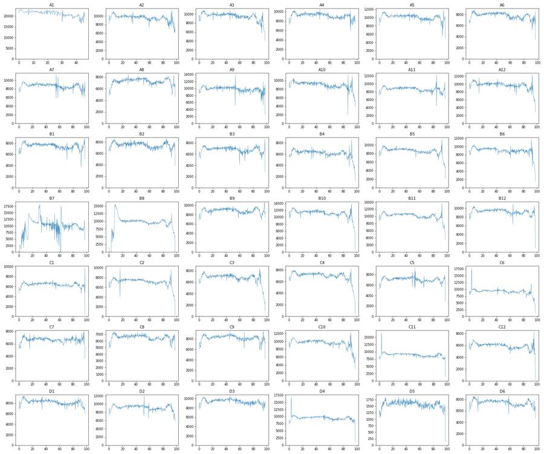
25
tool call · Bash
cd /task/work; python3 -I -c "
import numpy as np
for w in ['C6','C11','D4','A1','B7','B8']:
d=np.load(f'full_{w}.npy',mmap_mode='r'); t=np.asarray(d[:,0])
dt=np.diff(t); i=np.where(dt<0)[0]
print(w, 'nonmono idx', i, [ (t[j-2:j+3]) for j in i])
# 0.1 s bins near spike
h,_=np.histogram(t/1000, np.arange(0,12,0.1)); print(' 0.1s bins 0-12s:', h.tolist())
"
26
tool output
C6 nonmono idx [4442] [array([3894., 3894., 3894., 14., 14.], dtype=float32)] 0.1s bins 0-12s: [724, 887, 947, 910, 977, 938, 940, 865, 921, 822, 802, 805, 838, 846, 825, 852, 868, 800, 846, 817, 872, 898, 919, 922, 915, 817, 884, 952, 874, 949, 962, 913, 951, 1380, 1664, 1727, 1784, 1809, 1811, 1017, 974, 1000, 945, 982, 1042, 993, 1028, 953, 1018, 980, 1015, 982, 979, 1023, 966, 996, 1003, 1039, 989, 1018, 992, 1007, 972, 979, 988, 999, 1036, 991, 1003, 1025, 994, 985, 990, 1018, 989, 993, 1072, 998, 1020, 960, 1032, 1023, 1002, 1034, 970, 1002, 966, 1033, 1013, 991, 993, 977, 1030, 964, 979, 995, 961, 1025, 690, 1010, 1094, 985, 917, 944, 986, 898, 980, 923, 936, 918, 938, 973, 881, 1021, 926, 968, 914, 912, 938] C11 nonmono idx [4102] [array([3896., 3896., 3896., 14., 14.], dtype=float32)] 0.1s bins 0-12s: [665, 742, 862, 817, 823, 810, 870, 821, 799, 796, 772, 764, 780, 747, 771, 734, 769, 804, 822, 742, 833, 771, 798, 806, 809, 902, 787, 862, 850, 852, 877, 851, 877, 1259, 1638, 1681, 1635, 1654, 1600, 914, 913, 952, 916, 970, 949, 900, 969, 911, 980, 948, 993, 935, 974, 832, 1010, 999, 949, 996, 930, 965, 924, 1027, 970, 926, 1028, 924, 1024, 1040, 975, 1031, 978, 1037, 957, 982, 1001, 1001, 973, 999, 1004, 1038, 996, 1001, 921, 947, 969, 1018, 983, 949, 1016, 957, 979, 996, 933, 891, 993, 983, 968, 909, 953, 933, 872, 1003, 953, 932, 967, 961, 932, 937, 995, 918, 897, 965, 895, 906, 936, 927, 906, 888, 923] D4 nonmono idx [4083] [array([3836., 3836., 3836., 14., 14.], dtype=float32)] 0.1s bins 0-12s: [691, 758, 785, 865, 911, 875, 878, 833, 834, 858, 764, 826, 764, 780, 776, 743, 814, 790, 752, 791, 856, 759, 840, 808, 850, 876, 877, 898, 828, 907, 922, 876, 1027, 1636, 1699, 1628, 1714, 1741, 1208, 946, 969, 980, 979, 983, 960, 1019, 1002, 972, 985, 988, 1075, 988, 1010, 1009, 976, 1076, 1012, 1050, 1026, 1041, 1004, 1038, 1049, 1061, 1035, 1066, 1080, 1003, 1004, 1073, 1026, 1080, 971, 1127, 993, 1061, 1015, 998, 1005, 1038, 976, 1031, 1046, 1015, 1036, 1036, 997, 1004, 1011, 1037, 1011, 1043, 969, 1007, 997, 1019, 1015, 982, 968, 1045, 1032, 1087, 1012, 1015, 966, 1004, 1037, 949, 1007, 934, 1033, 976, 980, 974, 990, 958, 933, 975, 963] A1 nonmono idx [] [] 0.1s bins 0-12s: [1952, 2271, 2261, 2249, 2284, 2256, 2277, 2221, 2332, 2204, 2270, 2310, 2317, 2338, 2271, 2215, 2278, 2337, 2300, 2165, 2369, 2217, 2316, 2264, 2298, 2234, 2267, 2219, 2184, 2270, 2205, 2189, 2250, 2048, 2247, 2214, 2056, 2224, 2132, 2180, 2153, 2209, 2151, 2142, 2199, 2178, 2214, 2175, 2191, 2215, 2315, 2073, 2164, 2203, 2148, 2361, 2087, 2237, 2145, 2223, 2285, 2188, 2146, 2176, 2245, 2141, 2232, 2250, 2188, 1851, 2386, 2296, 2215, 2194, 2285, 2094, 2232, 2228, 2216, 2135, 2191, 2134, 2145, 2152, 2174, 2071, 2289, 2210, 2265, 2188, 2292, 2253, 2260, 2187, 2214, 2235, 2255, 2221, 2134, 2273, 2245, 2181, 2217, 2009, 2340, 2215, 2146, 2207, 2309, 2144, 2270, 2245, 2191, 2190, 2121, 2246, 2251, 2136, 2332] B7 nonmono idx [] [] 0.1s bins 0-12s: [44, 30, 43, 33, 65, 28, 30, 12, 18, 9, 10, 19, 12, 86, 307, 294, 270, 277, 263, 246, 249, 191, 198, 184, 182, 174, 177, 156, 131, 140, 131, 152, 135, 129, 117, 142, 181, 42, 101, 691, 1640, 116, 278, 221, 273, 579, 599, 595, 595, 621, 927, 701, 89, 448, 947, 1061, 154, 339, 773, 1142, 477, 220, 642, 893, 769, 210, 1059, 267, 44, 336, 743, 758, 721, 713, 654, 830, 1073, 630, 615, 85, 153, 838, 958, 929, 908, 862, 858, 869, 861, 1358, 899, 171, 947, 1169, 1163, 1059, 1122, 1055, 1019, 954, 922, 919, 818, 816, 743, 767, 773, 1028, 944, 435, 744, 692, 686, 734, 666, 663, 661, 646, 648] B8 nonmono idx [] [] 0.1s bins 0-12s: [164, 154, 76, 49, 29, 43, 37, 50, 31, 13, 17, 24, 9, 11, 5, 4, 4, 9, 6, 3, 5, 4, 3, 3, 3, 3, 2, 3, 5, 3, 5, 4, 12, 13, 2, 122, 472, 500, 476, 596, 630, 681, 721, 792, 772, 690, 891, 391, 277, 417, 160, 681, 668, 704, 648, 1124, 663, 28, 743, 682, 592, 891, 238, 726, 185, 677, 640, 587, 558, 549, 546, 498, 473, 436, 511, 597, 733, 716, 765, 733, 755, 809, 1638, 1141, 247, 1035, 1652, 1561, 1508, 1522, 1559, 1546, 1523, 1489, 1519, 1586, 1493, 1512, 1456, 1511, 1438, 1488, 1508, 1507, 1464, 1426, 1518, 1392, 1504, 1462, 1440, 1446, 1438, 1456, 1395, 1382, 1442, 1429, 1460]
28
tool call · Bash
cd /task/work; python3 -I -c "
import numpy as np, json
names=json.load(open('names.json'))['A1']; print(names)
for w,k in [('C6',4443),('C11',4103),('D4',4084)]:
d=np.load(f'full_{w}.npy',mmap_mode='r'); a=np.asarray(d[:k]); b=np.asarray(d[k:])
print(w, 'block1 n',len(a),'time range',a[:,0].min(),a[:,0].max(), 'block2 time range', b[:,0].min(), b[:,0].max(), 'b2 n', len(b))
print(' block1 time diffs unique small?', np.unique(np.diff(a[:,0]))[:10])
for j,n in enumerate(names):
if n in ['FSC-A','SSC-A','BL1-A','RL3-A','VL1-A','SSC-H']:
print(' %s med b1 %.0f b2 %.0f | p90 b1 %.0f b2 %.0f'%(n,np.median(a[:,j]),np.median(b[:,j]),np.percentile(a[:,j],90),np.percentile(b[:,j],90)))
# compare block1 with block2's same time window
m=(b[:,0]>=a[:,0].min())&(b[:,0]<=a[:,0].max()); print(' block2 events in same window', m.sum())
# exact duplicate rows?
bs=set(map(tuple,b[m][:, :6].tolist())); dup=sum(tuple(r) in bs for r in a[:, :6].tolist()); print(' exact duplicates of block2 rows', dup)
"
29
tool output
['Time', 'FSC-A', 'SSC-A', 'BL1-A', 'RL3-A', 'VL1-A', 'FSC-H', 'SSC-H', 'BL1-H', 'RL3-H', 'VL1-H', 'FSC-W', 'SSC-W', 'BL1-W', 'RL3-W', 'VL1-W'] C6 block1 n 4443 time range 3350.0 3894.0 block2 time range 14.0 97567.0 b2 n 886568 block1 time diffs unique small? [0. 1. 2.] FSC-A med b1 98137 b2 106892 | p90 b1 195039 b2 226993 SSC-A med b1 99470 b2 120059 | p90 b1 307640 b2 353645 BL1-A med b1 87 b2 96 | p90 b1 286 b2 337 RL3-A med b1 3301 b2 4049 | p90 b1 17788 b2 21651 VL1-A med b1 1506 b2 2012 | p90 b1 6999 b2 9393 SSC-H med b1 83518 b2 98202 | p90 b1 223083 b2 235280 block2 events in same window 5215 exact duplicates of block2 rows 0 C11 block1 n 4103 time range 3345.0 3896.0 block2 time range 14.0 97535.0 b2 n 864582 block1 time diffs unique small? [0. 1.] FSC-A med b1 101429 b2 111020 | p90 b1 196773 b2 235789 SSC-A med b1 102487 b2 124974 | p90 b1 289652 b2 353566 BL1-A med b1 85 b2 95 | p90 b1 256 b2 318 RL3-A med b1 3421 b2 4294 | p90 b1 19010 b2 23194 VL1-A med b1 1664 b2 2186 | p90 b1 7532 b2 10608 SSC-H med b1 85628 b2 101078 | p90 b1 214497 b2 232970 block2 events in same window 4963 exact duplicates of block2 rows 0 D4 block1 n 4084 time range 3292.0 3836.0 block2 time range 14.0 97528.0 b2 n 921721 block1 time diffs unique small? [0. 1.] FSC-A med b1 102307 b2 111983 | p90 b1 197218 b2 246608 SSC-A med b1 102952 b2 126322 | p90 b1 296418 b2 366816 BL1-A med b1 89 b2 101 | p90 b1 285 b2 353 RL3-A med b1 3501 b2 4574 | p90 b1 20414 b2 24684 VL1-A med b1 1398 b2 1945 | p90 b1 6224 b2 9356 SSC-H med b1 85572 b2 101846 | p90 b1 215528 b2 236924 block2 events in same window 5042 exact duplicates of block2 rows 0
31
tool call · Bash
cd /task/work; python3 -I -c "
import numpy as np, pandas as pd
lay=pd.read_csv('/task/inputs/plate_layout.csv')
blocks={}
for w,k in [('C6',4443),('C11',4103),('D4',4084)]:
d=np.load(f'full_{w}.npy',mmap_mode='r'); blocks[w]=set(map(bytes, np.ascontiguousarray(np.asarray(d[:k,1:6]))))
for w in lay.well:
d=np.load(f'full_{w}.npy',mmap_mode='r'); a=np.ascontiguousarray(np.asarray(d[:,1:6]))
s=set(map(bytes,a))
print(w, {b:len(blocks[b]&s) for b in blocks})
" 2>&1 | tr '\n' ' '
32
tool output
A1 {'C6': 0, 'C11': 0, 'D4': 0} A2 {'C6': 0, 'C11': 0, 'D4': 0} A3 {'C6': 0, 'C11': 0, 'D4': 0} A4 {'C6': 0, 'C11': 0, 'D4': 0} A5 {'C6': 0, 'C11': 0, 'D4': 0} A6 {'C6': 0, 'C11': 0, 'D4': 0} A7 {'C6': 0, 'C11': 0, 'D4': 0} A8 {'C6': 0, 'C11': 0, 'D4': 0} A9 {'C6': 0, 'C11': 0, 'D4': 0} A10 {'C6': 0, 'C11': 0, 'D4': 0} A11 {'C6': 0, 'C11': 0, 'D4': 0} A12 {'C6': 0, 'C11': 0, 'D4': 0} B1 {'C6': 0, 'C11': 0, 'D4': 0} B2 {'C6': 0, 'C11': 0, 'D4': 0} B3 {'C6': 0, 'C11': 0, 'D4': 0} B4 {'C6': 0, 'C11': 0, 'D4': 0} B5 {'C6': 0, 'C11': 0, 'D4': 0} B6 {'C6': 0, 'C11': 0, 'D4': 0} B7 {'C6': 0, 'C11': 0, 'D4': 0} B8 {'C6': 0, 'C11': 0, 'D4': 0} B9 {'C6': 0, 'C11': 0, 'D4': 0} B10 {'C6': 0, 'C11': 0, 'D4': 0} B11 {'C6': 0, 'C11': 0, 'D4': 0} B12 {'C6': 0, 'C11': 0, 'D4': 0} C1 {'C6': 0, 'C11': 0, 'D4': 0} C2 {'C6': 0, 'C11': 0, 'D4': 0} C3 {'C6': 0, 'C11': 0, 'D4': 0} C4 {'C6': 0, 'C11': 0, 'D4': 0} C5 {'C6': 0, 'C11': 0, 'D4': 0} C6 {'C6': 4443, 'C11': 0, 'D4': 0} C7 {'C6': 0, 'C11': 0, 'D4': 0} C8 {'C6': 0, 'C11': 0, 'D4': 0} C9 {'C6': 0, 'C11': 0, 'D4': 0} C10 {'C6': 0, 'C11': 0, 'D4': 0} C11 {'C6': 0, 'C11': 4103, 'D4': 0} C12 {'C6': 0, 'C11': 0, 'D4': 0} D1 {'C6': 0, 'C11': 0, 'D4': 0} D2 {'C6': 0, 'C11': 0, 'D4': 0} D3 {'C6': 0, 'C11': 0, 'D4': 0} D4 {'C6': 0, 'C11': 0, 'D4': 4084} D5 {'C6': 0, 'C11': 0, 'D4': 0} D6 {'C6': 0, 'C11': 0, 'D4': 0}34
thinking
Three wells (C6, C11, D4) have a block of roughly 4,100–4,400 events with restarted timestamps, and none of it is copied from another well. I'm plotting scatter and fluorescence for every well next.
35
tool call · Bash
cd /task/work; python3 -I -c "
import numpy as np
for w in ['A1','B1','D5']:
d=np.load(f'full_{w}.npy',mmap_mode='r')
for j,n in [(1,'FSC-A'),(2,'SSC-A'),(3,'BL1-A'),(4,'RL3-A'),(5,'VL1-A'),(7,'SSC-H'),(12,'SSC-W')]:
x=np.asarray(d[:,j]); print(w,n, 'min',x.min(),'neg%%',round(100*(x<0).mean(),2), 'pcts', np.percentile(x,[0.1,1,5,25,50,75,95,99,99.9]).round(0).tolist())
"
36
tool output
A1 FSC-A min -42664.0 neg%% 0.0 pcts [19478.0, 23512.0, 29096.0, 66762.0, 129067.0, 193248.0, 430499.0, 723104.0, 1048575.0] A1 SSC-A min -65536.0 neg%% 0.07 pcts [1438.0, 10864.0, 21959.0, 62230.0, 155780.0, 273546.0, 631548.0, 1048575.0, 1048575.0] A1 BL1-A min -20239.0 neg%% 8.16 pcts [-187.0, -55.0, -15.0, 49.0, 120.0, 244.0, 711.0, 1399.0, 5284.0] A1 RL3-A min -14906.0 neg%% 6.43 pcts [-453.0, -236.0, -55.0, 1092.0, 4241.0, 11636.0, 31915.0, 56852.0, 102687.0] A1 VL1-A min -14437.0 neg%% 9.33 pcts [-936.0, -567.0, -229.0, 824.0, 2724.0, 6258.0, 20564.0, 56324.0, 138630.0] A1 SSC-H min 0.0 neg%% 0.0 pcts [6275.0, 13831.0, 23146.0, 54423.0, 119673.0, 185625.0, 289885.0, 421410.0, 701183.0] A1 SSC-W min 0.0 neg%% 0.0 pcts [25.0, 34.0, 43.0, 71.0, 86.0, 108.0, 197.0, 291.0, 375.0] B1 FSC-A min 3967.0 neg%% 0.0 pcts [21546.0, 24587.0, 28535.0, 53281.0, 105260.0, 163366.0, 335467.0, 590442.0, 1048575.0] B1 SSC-A min -45231.0 neg%% 0.01 pcts [4486.0, 11460.0, 19901.0, 42674.0, 102788.0, 216782.0, 460520.0, 830671.0, 1048575.0] B1 BL1-A min -175.0 neg%% 10.02 pcts [-92.0, -55.0, -20.0, 37.0, 95.0, 191.0, 516.0, 1013.0, 2080.0] B1 RL3-A min -2267.0 neg%% 6.11 pcts [-244.0, -119.0, -19.0, 684.0, 3408.0, 11532.0, 31971.0, 56336.0, 102794.0] B1 VL1-A min -4116.0 neg%% 5.28 pcts [-433.0, -203.0, -10.0, 632.0, 2116.0, 5942.0, 28846.0, 76201.0, 185083.0] B1 SSC-H min 0.0 neg%% 0.0 pcts [5877.0, 12010.0, 19691.0, 38620.0, 83258.0, 163528.0, 264256.0, 383634.0, 630348.0] B1 SSC-W min 0.0 neg%% 0.0 pcts [30.0, 39.0, 47.0, 69.0, 82.0, 95.0, 158.0, 230.0, 349.0] D5 FSC-A min 20712.0 neg%% 0.0 pcts [23424.0, 25139.0, 28458.0, 50138.0, 99314.0, 145462.0, 196568.0, 276595.0, 409513.0] D5 SSC-A min 670.0 neg%% 0.0 pcts [5336.0, 13015.0, 21362.0, 45505.0, 106346.0, 203976.0, 343472.0, 530192.0, 984396.0] D5 BL1-A min -11844.0 neg%% 8.85 pcts [-93.0, -50.0, -16.0, 38.0, 88.0, 160.0, 387.0, 801.0, 2981.0] D5 RL3-A min -436.0 neg%% 1.11 pcts [-94.0, -6.0, 149.0, 2681.0, 7949.0, 18742.0, 52506.0, 87887.0, 149841.0] D5 VL1-A min -446.0 neg%% 0.46 pcts [-46.0, 29.0, 131.0, 550.0, 1510.0, 3619.0, 9343.0, 26332.0, 81847.0] D5 SSC-H min 1614.0 neg%% 0.0 pcts [5629.0, 13263.0, 21329.0, 42888.0, 91358.0, 165579.0, 257646.0, 358757.0, 588335.0] D5 SSC-W min 14.0 neg%% 0.0 pcts [33.0, 44.0, 56.0, 69.0, 81.0, 90.0, 101.0, 139.0, 183.0]
38
tool call · Bash
cd /task/work; cat > /task/work/common.py <<'EOF'
import numpy as np, pandas as pd, json, flowkit as fk
lay = pd.read_csv('/task/inputs/plate_layout.csv')
WELLS = list(lay.well)
NAMES = json.load(open('/task/work/names.json'))['A1']
IX = {n:i for i,n in enumerate(NAMES)}
LOGI = fk.transforms.LogicleTransform(param_t=1048576, param_w=1.0, param_m=5.5, param_a=0)
def load(w): return np.load(f'/task/work/full_{w}.npy', mmap_mode='r')
def col(d, n): return np.asarray(d[:, IX[n]], dtype=np.float64)
def lg(x): return LOGI.apply(np.asarray(x, dtype=np.float64))
def lginv(y): return LOGI.inverse(np.asarray(y, dtype=np.float64))
EOF
python3 -I -c "
import sys; sys.path.insert(0,'/task/work')
from common import *
print(lg([-1000,-100,0,100,1000,1e4,1e5,1e6]).round(3))
print(lginv([0,0.1,0.2,0.3,0.4,0.5,0.6,0.8,1.0]).round(0))
"39
tool output
[-0.063 0.136 0.182 0.227 0.426 0.629 0.814 0.996] [-5.430000e+02 -1.870000e+02 4.000000e+01 2.890000e+02 7.710000e+02 2.187000e+03 6.994000e+03 8.370700e+04 1.048576e+06]
41
tool call · Bash
cd /task/work; cat > /task/work/grid.py <<'EOF'
import sys; sys.path.insert(0,'/task/work')
from common import *
import matplotlib; matplotlib.use('Agg'); import matplotlib.pyplot as plt
from matplotlib.colors import LogNorm
def tr(name, x, mode):
return lg(x) if mode=='lg' else x
def grid(xn, yn, xm, ym, fname, xr, yr, wells=WELLS, mask_fn=None, bins=200, ncol=7):
nrow = int(np.ceil(len(wells)/ncol))
fig, axes = plt.subplots(nrow, ncol, figsize=(3.2*ncol, 3.0*nrow))
for ax, w in zip(np.atleast_1d(axes).flat, wells):
d = load(w)
m = mask_fn(w, d) if mask_fn else slice(None)
x = tr(xn, col(d, xn)[m], xm); y = tr(yn, col(d, yn)[m], ym)
ax.hist2d(x, y, bins=bins, range=[xr, yr], norm=LogNorm(), cmap='jet')
ax.set_title(f'{w} n={len(x)}', fontsize=9); ax.tick_params(labelsize=6)
fig.supxlabel(xn); fig.supylabel(yn)
plt.tight_layout(); plt.savefig(fname, dpi=55); plt.close()
if __name__ == '__main__':
grid('FSC-A','SSC-A','lin','lin','g_fsc_ssc.png',[0,1.05e6],[0,1.05e6])
grid('SSC-A','SSC-H','lin','lin','g_ssca_ssch.png',[0,1.05e6],[0,1.05e6])
EOF
python3 -I grid.py42
tool output
(Bash completed with no output)
43
tool call · Read
{
"file_path": "/task/work/g_fsc_ssc.png"
}44
tool output
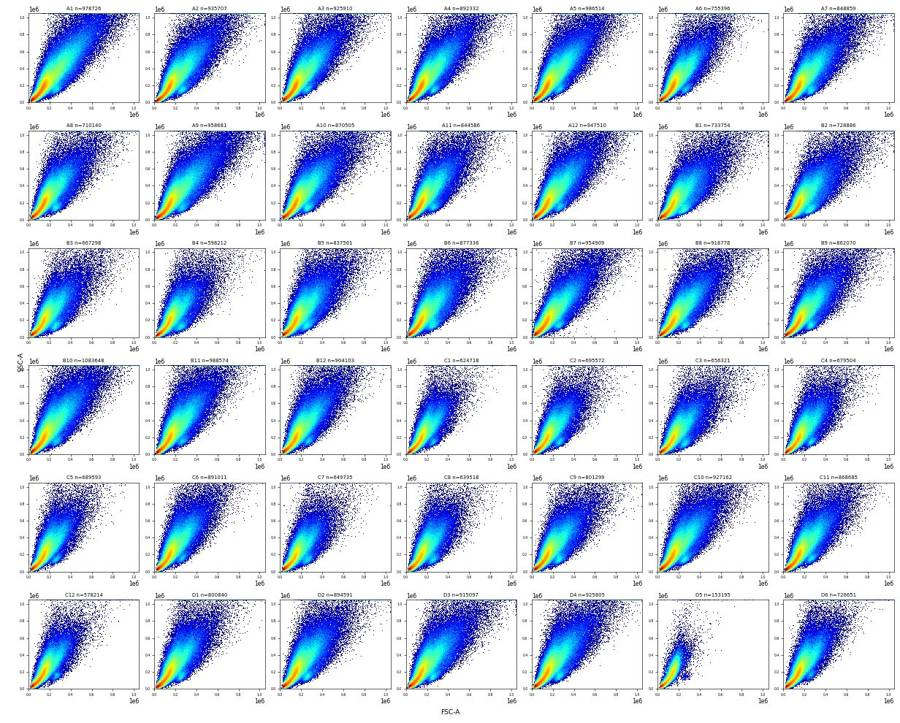
46
tool call · Read
{
"file_path": "/task/work/g_ssca_ssch.png"
}47
tool output
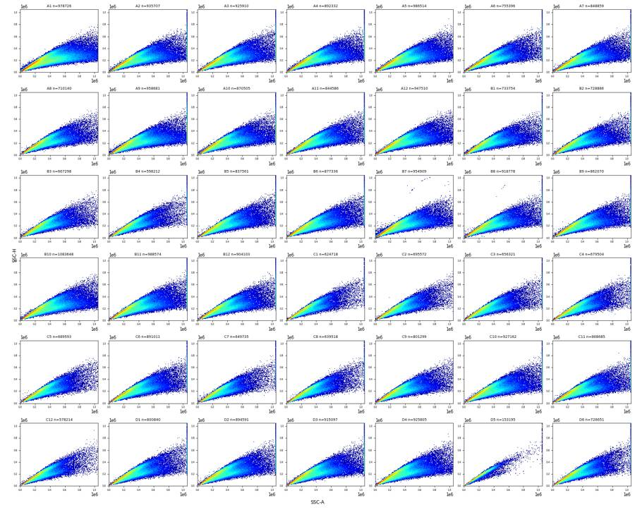
49
tool call · Bash
cd /task/work; cat > /task/work/single.py <<'EOF'
import sys; sys.path.insert(0,'/task/work')
from common import *
import matplotlib; matplotlib.use('Agg'); import matplotlib.pyplot as plt
from matplotlib.colors import LogNorm
wells = sys.argv[1].split(',')
fig, axes = plt.subplots(len(wells), 4, figsize=(20, 5*len(wells)))
for r, w in enumerate(wells):
d = load(w)
fsc, ssc, ssch = col(d,'FSC-A'), col(d,'SSC-A'), col(d,'SSC-H')
rl3 = lg(col(d,'RL3-A')); bl1 = lg(col(d,'BL1-A'))
ax = axes[r,0]; ax.hist2d(fsc, ssc, bins=300, range=[[0,1.05e6],[0,1.05e6]], norm=LogNorm(), cmap='jet'); ax.set_title(f'{w} FSC-A vs SSC-A')
ax = axes[r,1]; ax.hist2d(np.log10(np.clip(fsc,1e3,None)), np.log10(np.clip(ssc,1e2,None)), bins=300, range=[[4,6.05],[2.5,6.05]], norm=LogNorm(), cmap='jet'); ax.set_title('log10 FSC-A vs log10 SSC-A')
ax = axes[r,2]; ax.hist2d(fsc, rl3, bins=300, range=[[0,1.05e6],[0,1]], norm=LogNorm(), cmap='jet'); ax.set_title('FSC-A vs lg RL3-A')
ax = axes[r,3]; ax.hist2d(ssch, ssc, bins=300, range=[[0,1.05e6],[0,1.05e6]], norm=LogNorm(), cmap='jet'); ax.set_title('SSC-H vs SSC-A')
for a in axes[r]: a.grid(alpha=0.3)
plt.tight_layout(); plt.savefig(sys.argv[2], dpi=50)
EOF
python3 -I single.py A3,B1,D5 s_scatter.png50
tool output
(Bash completed with no output)
51
tool call · Read
{
"file_path": "/task/work/s_scatter.png"
}52
tool output
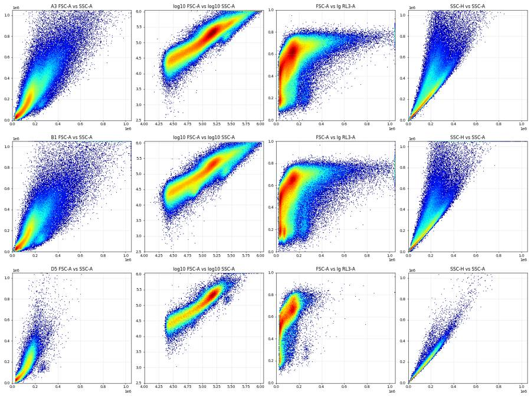
54
agent
Scatter looks consistent across wells except D5, which is mostly small, Zombie-bright events. Next I'm checking the Zombie NIR and GFP distributions to place the fluorescence cut-offs.
55
tool call · Bash
cd /task/work; cat > /task/work/hists.py <<'EOF'
import sys; sys.path.insert(0,'/task/work')
from common import *
import matplotlib; matplotlib.use('Agg'); import matplotlib.pyplot as plt
fig, axes = plt.subplots(1, 2, figsize=(22, 8))
cm = plt.get_cmap('tab20')
edges = np.linspace(-0.1, 1.0, 221)
res = {}
for k, w in enumerate(WELLS):
d = load(w)
fsc, ssc, ssch = col(d,'FSC-A'), col(d,'SSC-A'), col(d,'SSC-H')
m = (fsc > 60000) & (fsc < 1.0e6) & (ssc < 1.04e6) & (ssc > 15000) & (ssc < 2.2*ssch + 30000)
rl3 = lg(col(d,'RL3-A')[m]); bl1 = lg(col(d,'BL1-A')[m])
h,_ = np.histogram(rl3, edges); axes[0].plot(edges[:-1], h/h.sum(), lw=0.8, color=cm(k%20), label=w)
live = rl3 < 0.45
h,_ = np.histogram(bl1[live], edges); axes[1].semilogy(edges[:-1], h/h.sum()+1e-6, lw=0.8, color=cm(k%20), label=w)
axes[0].set_title('lg RL3-A, rough cells'); axes[1].set_title('lg BL1-A, rough live (RL3<0.45)')
for a in axes: a.grid(alpha=0.3); a.set_xticks(np.arange(-0.1,1.01,0.05))
axes[1].legend(ncol=4, fontsize=7)
plt.tight_layout(); plt.savefig('h_rl3_bl1.png', dpi=55)
EOF
python3 -I hists.py56
tool output
(Bash completed with no output)
57
tool call · Read
{
"file_path": "/task/work/h_rl3_bl1.png"
}58
tool output
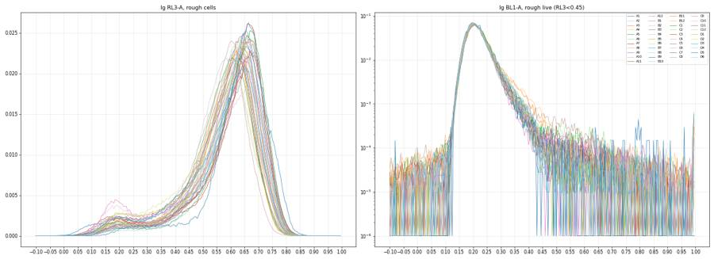
60
tool call · Bash
cd /task/work; cat > /task/work/grid2.py <<'EOF'
import sys; sys.path.insert(0,'/task/work')
from common import *
import matplotlib; matplotlib.use('Agg'); import matplotlib.pyplot as plt
from matplotlib.colors import LogNorm
def rough(d):
fsc, ssc, ssch = col(d,'FSC-A'), col(d,'SSC-A'), col(d,'SSC-H')
return (fsc > 60000) & (fsc < 1.0e6) & (ssc < 1.04e6) & (ssc > 15000) & (ssc < 2.2*ssch + 30000)
which = sys.argv[1]
fig, axes = plt.subplots(6, 7, figsize=(22.4, 18))
for ax, w in zip(axes.flat, WELLS):
d = load(w); m = rough(d)
ssc = col(d,'SSC-A')[m]
if which == 'rl3':
x = lg(col(d,'RL3-A')[m]); ax.hist2d(x, ssc, bins=200, range=[[-0.1,1],[0,1.05e6]], norm=LogNorm(), cmap='jet'); ax.axvline(0.3, color='k', lw=0.5)
elif which == 'bl1':
live = lg(col(d,'RL3-A')[m]) < 0.3
x = lg(col(d,'BL1-A')[m][live]); ax.hist2d(x, ssc[live], bins=200, range=[[-0.1,1],[0,1.05e6]], norm=LogNorm(), cmap='jet'); ax.axvline(0.4, color='k', lw=0.5)
elif which == 'fscrl3':
x = lg(col(d,'RL3-A')[m]); ax.hist2d(col(d,'FSC-A')[m], x, bins=200, range=[[0,1.05e6],[-0.1,1]], norm=LogNorm(), cmap='jet')
ax.set_title(f'{w}', fontsize=9); ax.tick_params(labelsize=6); ax.grid(alpha=0.3)
plt.tight_layout(); plt.savefig(f'g2_{which}.png', dpi=50)
EOF
python3 -I grid2.py rl3 && python3 -I grid2.py bl161
tool output
(Bash completed with no output)
62
tool call · Read
{
"file_path": "/task/work/g2_rl3.png"
}63
tool output
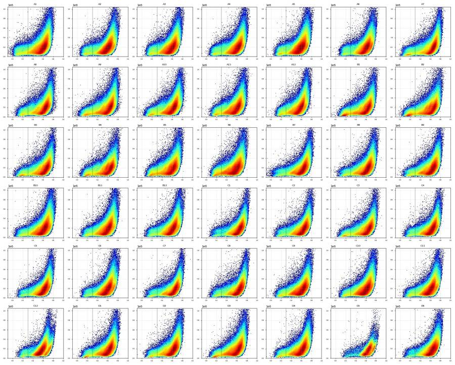
65
tool call · Bash
cd /task/work; cat > /task/work/livescatter.py <<'EOF'
import sys; sys.path.insert(0,'/task/work')
from common import *
import matplotlib; matplotlib.use('Agg'); import matplotlib.pyplot as plt
from matplotlib.colors import LogNorm
wells = sys.argv[1].split(',')
fig, axes = plt.subplots(len(wells), 4, figsize=(22, 5.2*len(wells)))
for r, w in enumerate(wells):
d = load(w)
fsc, ssc, ssch = col(d,'FSC-A'), col(d,'SSC-A'), col(d,'SSC-H')
rl3 = lg(col(d,'RL3-A')); bl1 = lg(col(d,'BL1-A'))
live = rl3 < 0.3
for c,(m,t) in enumerate([(live,'RL3<0.3 (live)'),(~live,'RL3>=0.3 (dead)')]):
ax = axes[r,c]; ax.hist2d(fsc[m], ssc[m], bins=250, range=[[0,1.05e6],[0,1.05e6]], norm=LogNorm(), cmap='jet'); ax.set_title(f'{w} FSC-A vs SSC-A {t} n={m.sum()}')
ax = axes[r,2]; ax.hist2d(ssch[live], ssc[live], bins=250, range=[[0,1.05e6],[0,1.05e6]], norm=LogNorm(), cmap='jet'); ax.set_title('SSC-H vs SSC-A live')
g = live & (bl1 > 0.45)
ax = axes[r,3]; ax.hist2d(fsc[live], bl1[live], bins=250, range=[[0,1.05e6],[-0.1,1]], norm=LogNorm(), cmap='jet'); ax.set_title('FSC-A vs lg BL1-A, live')
for a in axes[r]: a.grid(alpha=0.3)
plt.tight_layout(); plt.savefig(sys.argv[2], dpi=50)
EOF
python3 -I livescatter.py A5,B1,D5 s_live.png66
tool output
(Bash completed with no output)
67
tool call · Read
{
"file_path": "/task/work/s_live.png"
}68
tool output
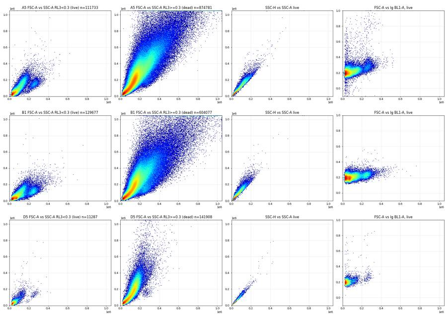
70
agent
Live cells sit in two scatter clusters (FSC ~80–200k and ~220–320k), with Zombie-negative debris below FSC ~60k. Checking the GFP grid now.
71
tool call · Read
{
"file_path": "/task/work/g2_bl1.png"
}72
tool output
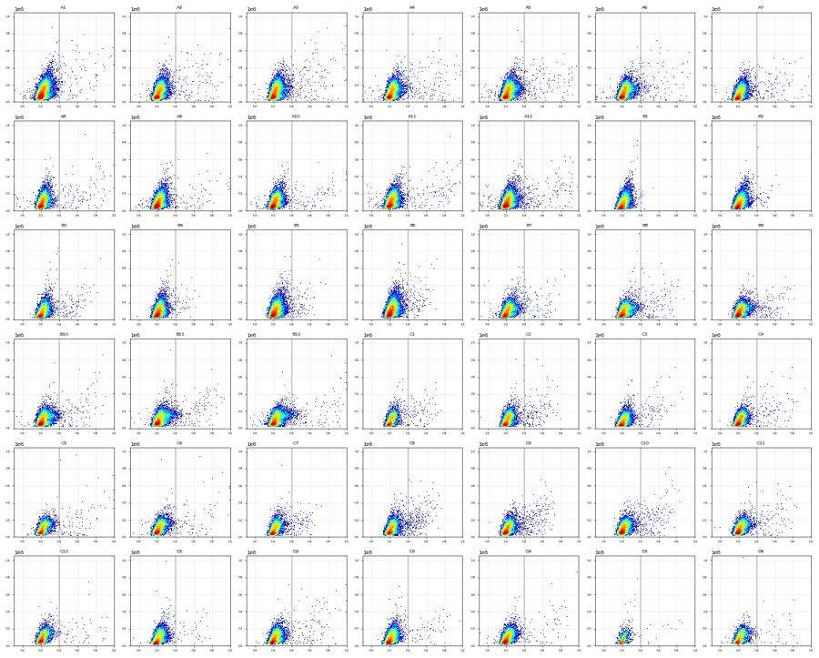
74
tool call · Bash
cd /task/work; cat > /task/work/pool_fsc.py <<'EOF'
import sys; sys.path.insert(0,'/task/work')
from common import *
import matplotlib; matplotlib.use('Agg'); import matplotlib.pyplot as plt
from matplotlib.colors import LogNorm
from matplotlib.patches import Polygon
CELLS = [(50000,8000),(250000,8000),(650000,150000),(1000000,450000),(1000000,1030000),(380000,1030000),(50000,180000)]
ws = ['A3','B9','C10','D2','B1','C7']
F=[];S=[];R=[]
for w in ws:
d=load(w); F.append(col(d,'FSC-A')); S.append(col(d,'SSC-A')); R.append(lg(col(d,'RL3-A')))
F=np.concatenate(F); S=np.concatenate(S); R=np.concatenate(R)
fig, axes = plt.subplots(1,3, figsize=(24,8))
for ax,(m,t) in zip(axes, [(np.ones_like(F,bool),'all'),(R<0.3,'RL3<0.3'),(R>=0.3,'RL3>=0.3')]):
ax.hist2d(F[m], S[m], bins=300, range=[[0,1.05e6],[0,1.05e6]], norm=LogNorm(), cmap='jet')
ax.add_patch(Polygon(CELLS, fill=False, ec='k', lw=1.5)); ax.set_title(t); ax.grid(alpha=0.3)
ax.set_xticks(np.arange(0,1.05e6,1e5)); ax.set_yticks(np.arange(0,1.05e6,1e5)); ax.tick_params(labelsize=7)
plt.tight_layout(); plt.savefig('pool_fsc.png', dpi=50)
fig, axes = plt.subplots(1,2, figsize=(16,8))
for ax,(m,t) in zip(axes, [(np.ones_like(F,bool),'all'),(R<0.3,'RL3<0.3')]):
ax.hist2d(F[m], S[m], bins=300, range=[[0,4e5],[0,4e5]], norm=LogNorm(), cmap='jet')
ax.add_patch(Polygon(CELLS, fill=False, ec='k', lw=1.5)); ax.set_title(t+' zoom'); ax.grid(alpha=0.3)
ax.set_xticks(np.arange(0,4e5,2e4)); ax.set_yticks(np.arange(0,4e5,2e4)); ax.tick_params(labelsize=6)
plt.tight_layout(); plt.savefig('pool_fsc_zoom.png', dpi=55)
EOF
python3 -I pool_fsc.py75
tool output
(Bash completed with no output)
76
tool call · Read
{
"file_path": "/task/work/pool_fsc.png"
}77
tool output
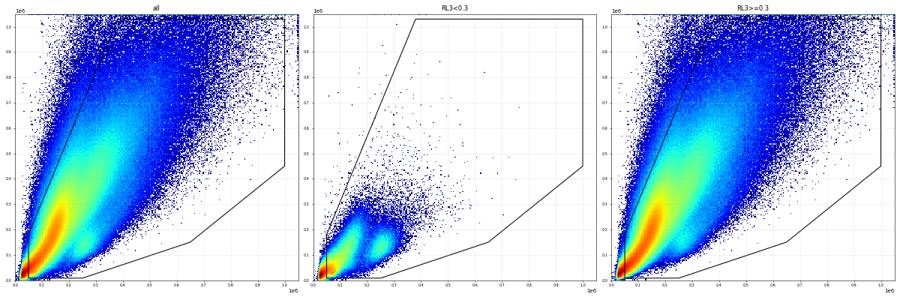
78
tool call · Read
{
"file_path": "/task/work/pool_fsc_zoom.png"
}79
tool output
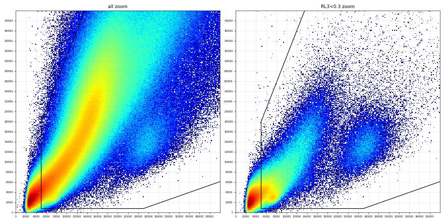
81
tool call · Bash
cd /task/work; cat > /task/work/pool_ssc.py <<'EOF'
import sys; sys.path.insert(0,'/task/work')
from common import *
import matplotlib; matplotlib.use('Agg'); import matplotlib.pyplot as plt
from matplotlib.colors import LogNorm
from matplotlib.patches import Polygon
from matplotlib.path import Path
CELLS = [(60000,15000),(250000,15000),(650000,150000),(1000000,450000),(1000000,1030000),(350000,1030000),(60000,250000)]
SING = eval(sys.argv[1]) if len(sys.argv)>1 else None
ws = ['A3','B9','C10','D2','B1','C7']
H=[];S=[];R=[]
for w in ws:
d=load(w); f=col(d,'FSC-A'); s=col(d,'SSC-A'); m=Path(CELLS).contains_points(np.c_[f,s])
H.append(col(d,'SSC-H')[m]); S.append(s[m]); R.append(lg(col(d,'RL3-A')[m]))
H=np.concatenate(H); S=np.concatenate(S); R=np.concatenate(R)
fig, axes = plt.subplots(2,3, figsize=(24,16))
for row,(lim) in enumerate([1.05e6, 4e5]):
for ax,(m,t) in zip(axes[row], [(np.ones_like(H,bool),'cells'),(R<0.3,'cells RL3<0.3'),(R>=0.3,'cells RL3>=0.3')]):
ax.hist2d(H[m], S[m], bins=300, range=[[0,lim*0.8],[0,lim]], norm=LogNorm(), cmap='jet')
if SING: ax.add_patch(Polygon(SING, fill=False, ec='k', lw=1.5))
ax.set_title(t); ax.grid(alpha=0.3); ax.set_xlabel('SSC-H'); ax.set_ylabel('SSC-A')
plt.tight_layout(); plt.savefig('pool_ssc.png', dpi=50)
# ratio
r = S/np.maximum(H,1)
for lo,hi in [(2e4,5e4),(5e4,1e5),(1e5,2e5),(2e5,3e5),(3e5,5e5)]:
m=(H>lo)&(H<hi); print('SSC-H %g-%g n=%d ratio A/H pcts'%(lo,hi,m.sum()), np.percentile(r[m],[1,5,25,50,75,90,95,99]).round(3))
m2=m&(R<0.3); print(' live n=%d'%m2.sum(), np.percentile(r[m2],[1,5,25,50,75,90,95,99]).round(3))
EOF
python3 -I pool_ssc.py82
tool output
SSC-H 20000-50000 n=235571 ratio A/H pcts [0.917 0.977 1.045 1.121 1.328 1.736 1.945 2.33 ] live n=73446 [0.904 0.973 1.052 1.12 1.224 1.414 1.617 2.042] SSC-H 50000-100000 n=906353 ratio A/H pcts [0.991 1.026 1.079 1.136 1.261 1.556 1.854 2.376] live n=78937 [0.984 1.024 1.086 1.176 1.3 1.431 1.545 1.93 ] SSC-H 100000-200000 n=1619029 ratio A/H pcts [1.06 1.098 1.163 1.225 1.373 1.88 2.25 3.015] live n=40494 [1.057 1.1 1.192 1.293 1.391 1.508 1.614 2.023] SSC-H 200000-300000 n=674570 ratio A/H pcts [1.123 1.164 1.233 1.313 1.609 2.238 2.59 3.428] live n=1738 [1.097 1.148 1.228 1.292 1.409 1.585 1.742 2.079] SSC-H 300000-500000 n=130550 ratio A/H pcts [1.172 1.226 1.333 1.47 1.802 2.214 2.463 2.906] live n=153 [1.194 1.223 1.353 1.436 1.545 1.731 1.908 2.115]
83
tool call · Read
{
"file_path": "/task/work/pool_ssc.png"
}84
tool output
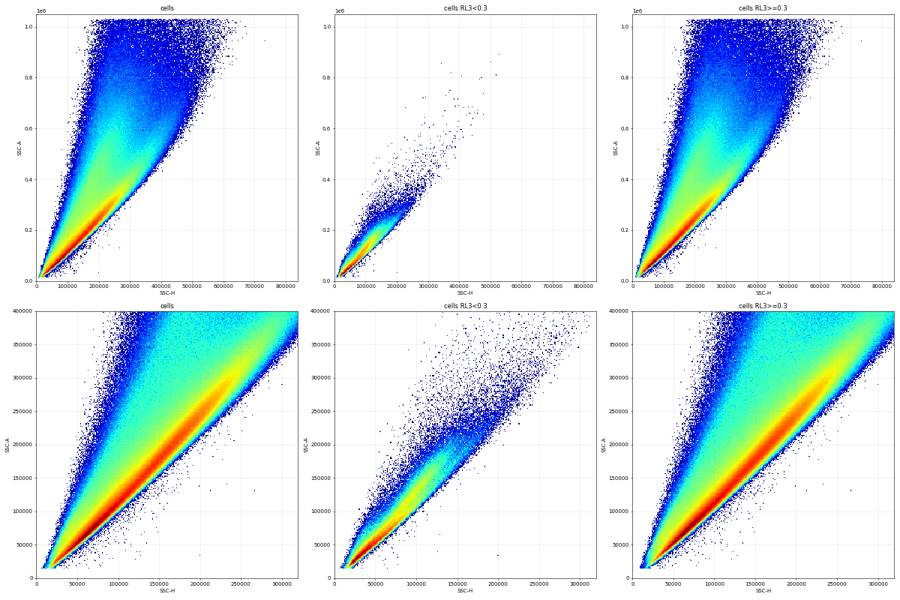
86
agent
Draft Cells and Singlets polygons are set. Now locating the Zombie NIR valley on singlets in each well.
87
tool call · Bash
cd /task/work; cat > /task/work/valley.py <<'EOF'
import sys; sys.path.insert(0,'/task/work')
from common import *
from matplotlib.path import Path
from scipy.ndimage import gaussian_filter1d
CELLS = [(60000,15000),(250000,15000),(650000,150000),(1000000,450000),(1000000,1030000),(350000,1030000),(60000,250000)]
SING = [(5000,2000),(800000,700000),(800000,1045000),(668000,1045000),(0,10000)]
edges = np.linspace(-0.1, 1.0, 551); ctr = (edges[:-1]+edges[1:])/2
out = []
H = {}
for w in WELLS:
d = load(w)
f, s, h = col(d,'FSC-A'), col(d,'SSC-A'), col(d,'SSC-H')
m = Path(CELLS).contains_points(np.c_[f,s]); m &= Path(SING).contains_points(np.c_[h,s])
r = lg(col(d,'RL3-A')[m])
hh,_ = np.histogram(r, edges); hs = gaussian_filter1d(hh.astype(float), 4)
H[w] = hs/hs.sum()
# dim peak in 0.05-0.3, valley between dim peak and 0.5
i1 = np.where((ctr>0.05)&(ctr<0.3))[0]; pk = i1[np.argmax(hs[i1])]
i2 = np.where((ctr>ctr[pk])&(ctr<0.5))[0]; vl = i2[np.argmin(hs[i2])]
out.append((w, len(r), m.sum(), round(ctr[pk],3), round(ctr[vl],3), round(lginv(ctr[vl]).item(),0), round(100*np.mean(r<ctr[vl]),2)))
print(out[-1], flush=True)
np.save('rl3_hist.npy', H, allow_pickle=True)
v = np.array([o[4] for o in out]); print('valley lg median', np.median(v), 'range', v.min(), v.max(), 'IQR', np.percentile(v,[25,75]))
EOF
python3 -I valley.py88
tool output (error)
Exit code 1
Traceback (most recent call last):
File "/task/work/valley.py", line 20, in <module>
out.append((w, len(r), m.sum(), round(ctr[pk],3), round(ctr[vl],3), round(lginv(ctr[vl]).item(),0), round(100*np.mean(r<ctr[vl]),2)))
^^^^^^^^^^^^^^
File "/task/work/common.py", line 10, in lginv
def lginv(y): return LOGI.inverse(np.asarray(y, dtype=np.float64))
^^^^^^^^^^^^^^^^^^^^^^^^^^^^^^^^^^^^^^^^^^^^^
File "/usr/local/lib/python3.12/site-packages/flowkit/_models/transforms/_transforms.py", line 332, in inverse
return flowutils.transforms.logicle_inverse(
^^^^^^^^^^^^^^^^^^^^^^^^^^^^^^^^^^^^^
File "/usr/local/lib/python3.12/site-packages/flowutils/transforms.py", line 105, in logicle_inverse
channel_indices = range(data.shape[1])
~~~~~~~~~~^^^
IndexError: tuple index out of range89
tool call · Bash
cd /task/work; sed -i 's/^def lginv(y): .*/def lginv(y):\n y = np.asarray(y, dtype=np.float64); return LOGI.inverse(np.atleast_1d(y)).reshape(y.shape)/' common.py; sed -i 's/^def lg(x): .*/def lg(x):\n x = np.asarray(x, dtype=np.float64); return LOGI.apply(np.atleast_1d(x)).reshape(x.shape)/' common.py; cat common.py; python3 -I valley.py
90
tool output
import numpy as np, pandas as pd, json, flowkit as fk
lay = pd.read_csv('/task/inputs/plate_layout.csv')
WELLS = list(lay.well)
NAMES = json.load(open('/task/work/names.json'))['A1']
IX = {n:i for i,n in enumerate(NAMES)}
LOGI = fk.transforms.LogicleTransform(param_t=1048576, param_w=1.0, param_m=5.5, param_a=0)
def load(w): return np.load(f'/task/work/full_{w}.npy', mmap_mode='r')
def col(d, n): return np.asarray(d[:, IX[n]], dtype=np.float64)
def lg(x):
x = np.asarray(x, dtype=np.float64); return LOGI.apply(np.atleast_1d(x)).reshape(x.shape)
def lginv(y):
y = np.asarray(y, dtype=np.float64); return LOGI.inverse(np.atleast_1d(y)).reshape(y.shape)
('A1', 546892, 546892, 0.299, 0.301, 292.0, 8.71)
('A2', 575399, 575399, 0.185, 0.299, 286.0, 6.05)
('A3', 581221, 581221, 0.199, 0.281, 233.0, 5.44)
('A4', 563411, 563411, 0.183, 0.283, 239.0, 5.41)
('A5', 605914, 605914, 0.199, 0.287, 250.0, 5.58)
('A6', 491269, 491269, 0.193, 0.279, 228.0, 4.35)
('A7', 529697, 529697, 0.169, 0.299, 286.0, 8.47)
('A8', 457164, 457164, 0.215, 0.285, 244.0, 5.88)
('A9', 560513, 560513, 0.195, 0.275, 217.0, 8.14)
('A10', 534091, 534091, 0.207, 0.299, 286.0, 7.56)
('A11', 516682, 516682, 0.211, 0.267, 196.0, 6.04)
('A12', 568700, 568700, 0.299, 0.301, 292.0, 6.52)
('B1', 434796, 434796, 0.185, 0.289, 256.0, 12.58)
('B2', 427540, 427540, 0.187, 0.291, 262.0, 11.55)
('B3', 401646, 401646, 0.191, 0.309, 317.0, 8.34)
('B4', 362860, 362860, 0.209, 0.305, 304.0, 8.94)
('B5', 505926, 505926, 0.195, 0.273, 211.0, 7.66)
('B6', 515217, 515217, 0.299, 0.301, 292.0, 9.38)
('B7', 563206, 563206, 0.299, 0.301, 292.0, 4.21)
('B8', 546191, 546191, 0.299, 0.301, 292.0, 4.58)
('B9', 526225, 526225, 0.235, 0.285, 244.0, 4.46)
('B10', 631509, 631509, 0.299, 0.301, 292.0, 4.42)
('B11', 585384, 585384, 0.299, 0.301, 292.0, 4.43)
('B12', 535122, 535122, 0.215, 0.271, 206.0, 3.39)
('C1', 381099, 381099, 0.221, 0.273, 211.0, 2.54)
('C2', 415220, 415220, 0.229, 0.307, 311.0, 4.26)
('C3', 388671, 388671, 0.201, 0.297, 279.0, 7.18)
('C4', 412166, 412166, 0.229, 0.305, 304.0, 4.22)
('C5', 420139, 420139, 0.221, 0.283, 239.0, 3.13)
('C6', 520744, 520744, 0.299, 0.301, 292.0, 3.44)
('C7', 381951, 381951, 0.211, 0.309, 317.0, 5.06)
('C8', 382511, 382511, 0.269, 0.309, 317.0, 5.0)
('C9', 482222, 482222, 0.227, 0.303, 298.0, 5.38)
('C10', 552051, 552051, 0.265, 0.285, 244.0, 4.35)
('C11', 523411, 523411, 0.225, 0.303, 298.0, 4.69)
('C12', 364767, 364767, 0.209, 0.299, 286.0, 4.0)
('D1', 488437, 488437, 0.197, 0.277, 222.0, 5.12)
('D2', 542710, 542710, 0.203, 0.257, 170.0, 3.96)
('D3', 544030, 544030, 0.199, 0.259, 175.0, 5.97)
('D4', 559658, 559658, 0.193, 0.281, 233.0, 4.81)
('D5', 102024, 102024, 0.275, 0.315, 338.0, 3.05)
('D6', 450513, 450513, 0.299, 0.301, 292.0, 2.5)
valley lg median 0.299 range 0.257 0.315 IQR [0.2815 0.301 ]92
tool call · Bash
cd /task/work; cat > /task/work/plot_rl3h.py <<'EOF'
import sys; sys.path.insert(0,'/task/work')
from common import *
import matplotlib; matplotlib.use('Agg'); import matplotlib.pyplot as plt
H = np.load('rl3_hist.npy', allow_pickle=True).item()
edges = np.linspace(-0.1, 1.0, 551); ctr = (edges[:-1]+edges[1:])/2
fig, axes = plt.subplots(6,7, figsize=(24,16))
for ax,w in zip(axes.flat, WELLS):
ax.plot(ctr, H[w], lw=1); ax.set_yscale('log'); ax.set_ylim(1e-5, 2e-2); ax.set_xlim(-0.05,0.95)
for v in [0.28,0.30,0.32]: ax.axvline(v, color='r' if v==0.30 else 'gray', lw=0.6)
ax.set_title(w, fontsize=9); ax.grid(alpha=0.3); ax.tick_params(labelsize=7)
plt.tight_layout(); plt.savefig('h_rl3_wells.png', dpi=50)
EOF
python3 -I plot_rl3h.py93
tool output
(Bash completed with no output)
94
tool call · Read
{
"file_path": "/task/work/h_rl3_wells.png"
}95
tool output
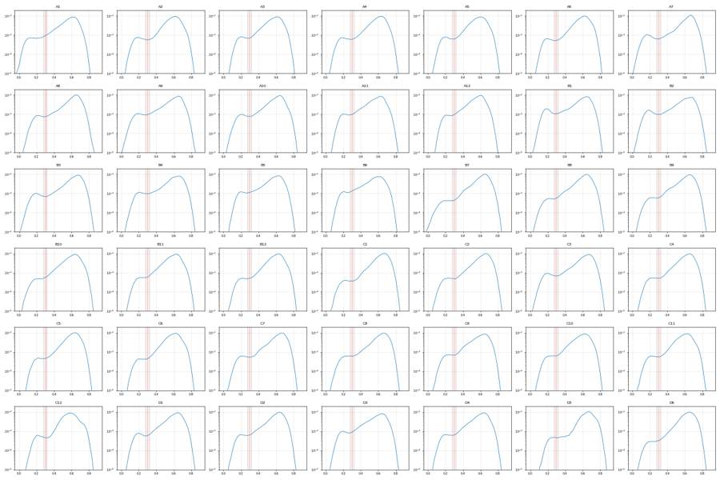
97
agent
The Zombie NIR valley sits at logicle ~0.28–0.31 (raw ~230–320) in nearly every well, so I'll use one cut-off near raw 290. Next: the GFP edge on the dimmest wells.
98
tool call · Bash
cd /task/work; cat > /task/work/gfp.py <<'EOF'
import sys; sys.path.insert(0,'/task/work')
from common import *
from matplotlib.path import Path
CELLS = [(60000,15000),(250000,15000),(650000,150000),(1000000,450000),(1000000,1030000),(350000,1030000),(60000,250000)]
SING = [(5000,2000),(800000,700000),(800000,1045000),(668000,1045000),(0,10000)]
LIVE_MAX = 290
res = {}
rows=[]
for w in WELLS:
d = load(w)
f, s, h = col(d,'FSC-A'), col(d,'SSC-A'), col(d,'SSC-H')
m = Path(CELLS).contains_points(np.c_[f,s]); m &= Path(SING).contains_points(np.c_[h,s])
m &= col(d,'RL3-A') <= LIVE_MAX
b = col(d,'BL1-A')[m]; ss = s[m]; fs = f[m]
np.save(f'live_{w}.npy', np.c_[b, ss, fs, col(d,'RL3-A')[m], col(d,'VL1-A')[m]].astype(np.float32))
p = np.percentile(b, [50, 90, 99, 99.5, 99.9])
rows.append(dict(well=w, live=m.sum(), p50=p[0], p90=p[1], p99=p[2], p995=p[3], p999=p[4],
n_gt1000=(b>1000).sum(), n_gt2000=(b>2000).sum(), n_gt5000=(b>5000).sum(), pct_gt1000=100*(b>1000).mean(), pct_gt2000=100*(b>2000).mean()))
df = pd.DataFrame(rows).round(2)
pd.set_option('display.width',250)
print(df.sort_values('pct_gt2000').to_string())
EOF
python3 -I gfp.py99
tool output
well live p50 p90 p99 p995 p999 n_gt1000 n_gt2000 n_gt5000 pct_gt1000 pct_gt2000 12 B1 57383 41.0 134.0 259.00 309.00 470.71 11 5 0 0.02 0.01 13 B2 51372 47.0 144.0 288.00 360.00 862.89 46 21 3 0.09 0.04 15 B4 31680 62.0 172.1 373.00 499.60 1799.94 62 30 9 0.20 0.09 17 B6 48242 62.0 177.0 447.59 684.79 3162.12 159 81 26 0.33 0.17 8 A9 52244 53.0 153.0 319.00 448.57 15511.49 114 95 71 0.22 0.18 16 B5 46437 64.0 180.4 452.64 687.82 3370.17 165 93 28 0.36 0.20 0 A1 47585 62.0 186.0 481.16 675.08 7481.36 134 101 64 0.28 0.21 36 D1 28266 48.0 165.0 379.00 535.35 12166.03 77 59 47 0.27 0.21 38 D3 41762 45.0 150.0 342.00 464.39 12480.35 117 95 68 0.28 0.23 6 A7 45118 47.0 150.0 343.00 633.42 18774.59 172 130 85 0.38 0.29 39 D4 30297 55.0 172.0 412.00 711.56 32471.45 122 95 71 0.40 0.31 9 A10 40712 57.0 167.0 363.00 622.44 51937.52 173 144 107 0.42 0.35 26 C3 28369 50.0 161.0 406.32 936.64 11770.31 137 105 62 0.48 0.37 14 B3 32352 51.0 161.0 417.00 1298.73 9972.83 187 126 63 0.58 0.39 41 D6 11256 67.0 208.0 527.90 1044.98 61511.23 58 45 33 0.52 0.40 30 C7 18447 56.0 176.4 784.08 1756.24 6187.88 153 80 24 0.83 0.43 18 B7 23647 65.0 209.0 633.54 1663.04 18240.98 160 105 67 0.68 0.44 1 A2 35056 67.0 188.0 505.00 1518.17 77058.43 212 162 120 0.60 0.46 10 A11 39230 67.0 186.0 483.71 1647.77 157815.35 226 189 159 0.58 0.48 35 C12 14718 69.0 199.0 563.15 1908.80 173666.97 96 72 55 0.65 0.49 2 A3 35470 71.0 200.0 671.31 2205.31 52242.81 250 185 125 0.70 0.52 34 C11 24276 64.0 197.0 665.25 2267.50 28560.98 182 131 92 0.75 0.54 40 D5 2791 63.0 184.0 567.90 2588.00 95587.32 18 15 11 0.64 0.54 3 A4 33454 70.0 198.0 681.88 2659.70 77017.82 253 184 141 0.76 0.55 4 A5 36364 69.0 212.0 721.37 2799.32 174318.16 276 201 156 0.76 0.55 7 A8 29543 63.0 173.0 500.58 3081.50 141948.58 209 167 126 0.71 0.57 29 C6 17877 68.0 215.0 714.24 2923.74 71721.10 134 103 75 0.75 0.58 37 D2 28580 58.0 186.0 583.63 3435.55 43186.20 212 178 123 0.74 0.62 21 B10 27877 65.0 217.0 917.96 3461.10 48627.34 257 182 123 0.92 0.65 20 B9 25774 64.0 207.0 986.54 2813.99 24842.38 254 169 91 0.99 0.66 5 A6 24044 79.0 231.0 1041.85 4258.47 202476.79 245 161 116 1.02 0.67 22 B11 25877 74.0 266.0 1203.48 4744.46 92649.87 306 177 127 1.18 0.68 19 B8 24947 68.0 227.0 1050.88 4036.60 32622.30 255 186 112 1.02 0.75 11 A12 37034 69.0 199.0 999.03 6507.62 371624.81 371 277 195 1.00 0.75 33 C10 26693 61.0 187.0 1234.72 3902.40 20388.01 293 204 115 1.10 0.76 23 B12 22050 79.0 285.0 1459.59 4021.00 334548.69 348 167 99 1.58 0.76 27 C4 16930 69.0 198.0 1340.52 5624.72 47566.51 191 137 89 1.13 0.81 28 C5 14802 70.0 211.0 1072.89 9112.30 136091.91 155 122 96 1.05 0.82 24 C1 11658 66.0 189.0 1518.02 5143.87 17169.54 149 100 61 1.28 0.86 32 C9 25570 62.0 184.0 1643.61 4340.10 16928.35 336 227 114 1.31 0.89 25 C2 17072 69.0 200.0 2144.41 5430.73 20995.16 270 182 90 1.58 1.07 31 C8 18149 70.0 224.0 2790.88 5268.12 15699.04 448 249 97 2.47 1.37
101
tool call · Bash
cd /task/work; cat > /task/work/gfp_plot.py <<'EOF'
import sys; sys.path.insert(0,'/task/work')
from common import *
import matplotlib; matplotlib.use('Agg'); import matplotlib.pyplot as plt
from matplotlib.colors import LogNorm
ws = ['B1','B2','B4','B6','C8','A12']
fig, axes = plt.subplots(2, 4, figsize=(26, 12))
edges = np.linspace(-0.1, 1.0, 331); ctr=(edges[:-1]+edges[1:])/2
for k,w in enumerate(ws):
L = np.load(f'live_{w}.npy'); b = lg(L[:,0]); s = L[:,1]
ax = axes.flat[k]; ax.hist2d(b, s, bins=[220,150], range=[[-0.1,1],[0,6e5]], norm=LogNorm(), cmap='jet')
for v in [0.38,0.40,0.42,0.45]: ax.axvline(v, color='k', lw=0.6)
ax.set_title(f'{w} Live n={len(b)} BL1-A(lg) vs SSC-A'); ax.grid(alpha=0.3)
ax.set_xticks(np.arange(-0.1,1.01,0.05)); ax.tick_params(labelsize=7)
h,_ = np.histogram(b, edges)
axes.flat[6].semilogy(ctr, h/len(b)+1e-7, label=w)
m = s < 1.5e5
h2,_ = np.histogram(b[s>1.5e5], edges); axes.flat[7].semilogy(ctr, h2/max(1,(s>1.5e5).sum())+1e-7, label=w+' SSC>150k')
for a in axes.flat[6:]:
a.legend(); a.grid(alpha=0.3); a.set_xticks(np.arange(-0.1,1.01,0.05)); a.tick_params(labelsize=7)
for v in [0.38,0.40,0.42,0.45]: a.axvline(v, color='k', lw=0.6)
plt.tight_layout(); plt.savefig('gfp_edge.png', dpi=48)
print('lginv', {v: round(float(lginv(v)),0) for v in [0.35,0.38,0.40,0.42,0.45,0.5]})
EOF
python3 -I gfp_plot.py102
tool output
lginv {0.35: 476.0, 0.38: 635.0, 0.4: 771.0, 0.42: 940.0, 0.45: 1277.0, 0.5: 2187.0}103
tool call · Read
{
"file_path": "/task/work/gfp_edge.png"
}104
tool output
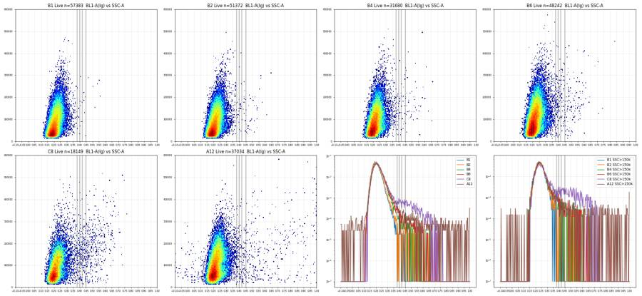
106
tool call · Bash
cd /task/work; python3 -I -c "
import sys; sys.path.insert(0,'/task/work')
from common import *
for w in ['B1','B2','B4','C7','B6','B5','A9','C8','A12']:
L=np.load(f'live_{w}.npy'); b=L[:,0]
print(w, len(b), ' '.join('>%d: %d (%.3f%%)'%(t,(b>t).sum(),100*(b>t).mean()) for t in [400,500,600,700,800,1000,1500]))
"107
tool output
B1 57383 >400: 103 (0.179%) >500: 43 (0.075%) >600: 27 (0.047%) >700: 22 (0.038%) >800: 17 (0.030%) >1000: 11 (0.019%) >1500: 6 (0.010%) B2 51372 >400: 181 (0.352%) >500: 101 (0.197%) >600: 72 (0.140%) >700: 64 (0.125%) >800: 57 (0.111%) >1000: 46 (0.090%) >1500: 30 (0.058%) B4 31680 >400: 256 (0.808%) >500: 157 (0.496%) >600: 111 (0.350%) >700: 90 (0.284%) >800: 77 (0.243%) >1000: 62 (0.196%) >1500: 40 (0.126%) C7 18447 >400: 365 (1.979%) >500: 277 (1.502%) >600: 236 (1.279%) >700: 202 (1.095%) >800: 180 (0.976%) >1000: 153 (0.829%) >1500: 110 (0.596%) B6 48242 >400: 621 (1.287%) >500: 394 (0.817%) >600: 298 (0.618%) >700: 234 (0.485%) >800: 191 (0.396%) >1000: 159 (0.330%) >1500: 113 (0.234%) B5 46437 >400: 607 (1.307%) >500: 381 (0.820%) >600: 282 (0.607%) >700: 228 (0.491%) >800: 203 (0.437%) >1000: 165 (0.355%) >1500: 118 (0.254%) A9 52244 >400: 317 (0.607%) >500: 210 (0.402%) >600: 161 (0.308%) >700: 141 (0.270%) >800: 130 (0.249%) >1000: 114 (0.218%) >1500: 100 (0.191%) C8 18149 >400: 836 (4.606%) >500: 694 (3.824%) >600: 621 (3.422%) >700: 574 (3.163%) >800: 525 (2.893%) >1000: 448 (2.468%) >1500: 321 (1.769%) A12 37034 >400: 821 (2.217%) >500: 619 (1.671%) >600: 501 (1.353%) >700: 438 (1.183%) >800: 407 (1.099%) >1000: 371 (1.002%) >1500: 305 (0.824%)
109
tool call · Bash
cd /task/work; python3 -I -c "
import sys; sys.path.insert(0,'/task/work')
from common import *
rows=[]
for w in WELLS:
L=np.load(f'live_{w}.npy'); b=L[:,0]
rows.append((w, len(b), (b>700).sum(), round(100*(b>700).mean(),3)))
df=pd.DataFrame(rows, columns=['well','live','gfp','pct']).merge(lay[['well','dose_vg_per_cell','replicate']])
df['grp']=np.repeat(np.arange(7),6)
print(df.pivot_table(index=['grp','dose_vg_per_cell'], columns='replicate', values=['pct','live','gfp']).to_string())
"110
tool output
gfp live pct
replicate 1 2 1 2 1 2
grp dose_vg_per_cell
0 5000 223.0 255.0 47585.0 35056.0 0.469 0.727
10000 341.0 326.0 35470.0 33454.0 0.961 0.974
50000 379.0 345.0 36364.0 24044.0 1.042 1.435
1 5000 215.0 228.0 45118.0 29543.0 0.477 0.772
10000 141.0 189.0 52244.0 40712.0 0.270 0.464
50000 270.0 438.0 39230.0 37034.0 0.688 1.183
2 5000 22.0 64.0 57383.0 51372.0 0.038 0.125
10000 221.0 90.0 32352.0 31680.0 0.683 0.284
50000 228.0 234.0 46437.0 48242.0 0.491 0.485
3 5000 213.0 331.0 23647.0 24947.0 0.901 1.327
10000 324.0 372.0 25774.0 27877.0 1.257 1.334
50000 507.0 570.0 25877.0 22050.0 1.959 2.585
4 5000 182.0 311.0 11658.0 17072.0 1.561 1.822
10000 169.0 226.0 28369.0 16930.0 0.596 1.335
50000 187.0 181.0 14802.0 17877.0 1.263 1.012
5 5000 202.0 574.0 18447.0 18149.0 1.095 3.163
10000 413.0 356.0 25570.0 26693.0 1.615 1.334
50000 236.0 119.0 24276.0 14718.0 0.972 0.809
6 5000 95.0 246.0 28266.0 28580.0 0.336 0.861
10000 137.0 155.0 41762.0 30297.0 0.328 0.512
50000 24.0 76.0 2791.0 11256.0 0.860 0.675112
tool call · Bash
cd /task/work; python3 -I -c "
import sys; sys.path.insert(0,'/task/work')
from common import *
from matplotlib.path import Path
CELLS = [(60000,15000),(250000,15000),(650000,150000),(1000000,450000),(1000000,1030000),(350000,1030000),(60000,250000)]
SING = [(5000,2000),(800000,700000),(800000,1045000),(668000,1045000),(0,10000)]
for w in ['C8','A12','B1']:
d=load(w); f,s,h=col(d,'FSC-A'),col(d,'SSC-A'),col(d,'SSC-H')
m=Path(CELLS).contains_points(np.c_[f,s])&Path(SING).contains_points(np.c_[h,s])
r=col(d,'RL3-A')[m]; b=col(d,'BL1-A')[m]
for lo,hi in [(-1e9,290),(290,2000),(2000,1e4),(1e4,1e9)]:
k=(r>lo)&(r<=hi); print(w,'RL3 %g-%g'%(lo,hi),'n',k.sum(),'GFP>700 %.2f%%'%(100*(b[k]>700).mean()), 'p50 BL1 %.0f p99 %.0f'%(np.median(b[k]),np.percentile(b[k],99)))
"113
tool output
C8 RL3 -1e+09-290 n 18149 GFP>700 3.16% p50 BL1 70 p99 2791 C8 RL3 290-2000 n 41985 GFP>700 0.97% p50 BL1 68 p99 690 C8 RL3 2000-10000 n 129701 GFP>700 0.52% p50 BL1 90 p99 580 C8 RL3 10000-1e+09 n 192676 GFP>700 3.42% p50 BL1 167 p99 984 A12 RL3 -1e+09-290 n 37034 GFP>700 1.18% p50 BL1 69 p99 999 A12 RL3 290-2000 n 123408 GFP>700 0.74% p50 BL1 75 p99 595 A12 RL3 2000-10000 n 302041 GFP>700 1.75% p50 BL1 130 p99 825 A12 RL3 10000-1e+09 n 106217 GFP>700 5.72% p50 BL1 206 p99 1248 B1 RL3 -1e+09-290 n 57383 GFP>700 0.04% p50 BL1 41 p99 259 B1 RL3 290-2000 n 68714 GFP>700 0.28% p50 BL1 73 p99 466 B1 RL3 2000-10000 n 157258 GFP>700 0.84% p50 BL1 114 p99 669 B1 RL3 10000-1e+09 n 151441 GFP>700 3.56% p50 BL1 180 p99 994
115
agent
Gate positions are settled provisionally (Live ≤ 290 raw RL3-A, GFP ≥ 700 raw BL1-A). Now quantifying flow stability (low-rate intervals, bursts, end-of-run decline) for every well.
116
tool call · Bash
cd /task/work; cat > /task/work/qc2.py <<'EOF'
import sys; sys.path.insert(0,'/task/work')
from common import *
rows=[]
for w in WELLS:
d = load(w); t = col(d,'Time')/1000.0
T = t.max(); n=len(t)
b1 = np.arange(0, np.floor(T)+1e-9, 1.0); h1,_ = np.histogram(t, np.append(b1, b1[-1]+1)); h1 = h1[:-1] if T-b1[-1] < 1 else h1 # full bins
nb = int(np.floor(T)); h1,_ = np.histogram(t, np.arange(0, nb+1, 1.0))
med = np.median(h1)
low = np.where(h1 < 0.5*med)[0]; hi = np.where(h1 > 1.5*med)[0]
# 0.25 s bins
q,_ = np.histogram(t, np.arange(0, nb+1e-9, 0.25)); qm = np.median(q)
lowq = np.where(q < 0.5*qm)[0]*0.25; hiq = np.where(q > 1.5*qm)[0]*0.25
last5 = h1[-5:].mean()/med; last10 = h1[-10:-5].mean()/med; first5 = h1[:5].mean()/med
# end decline onset: last time rate >= 80% of median, scanning backwards in 1-s bins
above = np.where(h1 >= 0.8*med)[0]; onset = above[-1]+1 if len(above) else 0
ev_after = (t >= onset).sum()
rows.append(dict(well=w, n=n, T=round(T,1), med_rate=int(med), first5=round(first5,2), last10_5=round(last10,2), last5=round(last5,2),
n_low1s=len(low), low1s=','.join(map(str,low[:12])), n_hi1s=len(hi), hi1s=','.join(map(str,hi[:12])),
n_lowq=len(lowq), n_hiq=len(hiq), decline_onset=onset, pct_ev_after_onset=round(100*ev_after/n,2), cv1s=round(h1.std()/h1.mean(),3)))
df = pd.DataFrame(rows); pd.set_option('display.width',300); pd.set_option('display.max_colwidth',40)
print(df.to_string()); df.to_csv('qc_flow.csv', index=False)
EOF
python3 -I qc2.py117
tool output
well n T med_rate first5 last10_5 last5 n_low1s low1s n_hi1s hi1s n_lowq n_hiq decline_onset pct_ev_after_onset cv1s 0 A1 978726 46.2 21595 1.03 0.92 0.89 0 0 0 0 46 0.55 0.054 1 A2 935707 97.9 9736 0.99 0.86 0.89 0 0 0 0 95 2.34 0.059 2 A3 925910 97.7 9731 0.97 0.82 0.79 0 0 0 0 95 1.83 0.078 3 A4 892332 97.7 9275 0.92 0.95 0.88 0 0 0 0 97 0.68 0.055 4 A5 986514 97.9 10269 0.94 0.95 0.86 0 0 0 0 97 0.88 0.060 5 A6 755396 97.1 7917 0.94 0.91 0.87 0 0 0 0 97 0.11 0.063 6 A7 848859 97.9 8848 0.93 0.97 0.86 0 0 0 0 97 0.91 0.057 7 A8 710140 97.9 7376 0.78 1.02 0.88 0 0 0 0 97 0.86 0.072 8 A9 958681 97.8 9968 0.96 0.93 0.87 0 0 0 0 97 0.78 0.057 9 A10 870505 97.7 9119 1.01 0.90 0.80 0 0 1 0 94 2.62 0.081 10 A11 844586 97.9 8749 0.93 0.95 0.91 0 0 0 0 97 0.97 0.055 11 A12 947510 97.9 9856 1.00 0.87 0.81 0 0 0 0 95 1.83 0.076 12 B1 733754 97.9 7648 0.89 0.90 0.91 0 0 1 0 97 1.01 0.062 13 B2 728886 97.9 7525 0.94 0.95 0.93 0 0 0 0 97 0.88 0.057 14 B3 667298 97.9 6958 0.89 0.97 0.88 0 0 0 0 97 0.96 0.060 15 B4 598212 97.9 6291 0.95 0.91 0.76 0 0 0 0 94 2.44 0.084 16 B5 837561 97.9 8770 0.96 0.91 0.80 0 0 0 0 94 2.64 0.078 17 B6 877336 97.8 9071 0.99 0.98 0.77 0 0 0 0 94 2.42 0.078 18 B7 954909 97.9 10200 0.22 0.91 0.88 6 0,1,2,3,6,61 2 30,31 33 11 97 0.82 0.277 19 B8 918778 97.8 9976 0.19 0.92 0.78 4 0,1,2,3 1 9 19 6 94 2.62 0.247 20 B9 862070 98.0 8865 0.89 0.97 0.95 0 0 0 0 97 0.96 0.054 21 B10 1083648 97.8 11374 0.99 0.90 0.77 0 0 0 0 94 2.48 0.081 22 B11 988574 97.9 10305 0.97 0.92 0.82 0 0 0 0 94 2.71 0.074 23 B12 904103 97.8 9356 0.92 0.91 0.95 0 0 0 0 97 0.69 0.050 24 C1 624718 97.8 6452 0.89 0.94 0.92 0 0 0 0 97 0.85 0.052 25 C2 695572 97.8 7296 0.92 0.93 0.73 0 0 0 0 93 3.14 0.087 26 C3 656321 97.7 6955 0.93 0.97 0.59 1 96 0 6 0 92 3.32 0.110 27 C4 679504 97.8 7153 0.96 0.92 0.64 1 96 0 2 0 92 3.69 0.098 28 C5 689593 97.9 7138 0.89 0.96 0.94 0 0 0 0 97 0.88 0.053 29 C6 891011 97.6 9307 1.08 0.97 0.70 0 1 3 2 3 93 3.03 0.102 30 C7 649735 97.9 6684 0.88 0.97 1.02 0 0 0 0 97 0.82 0.047 31 C8 639518 97.9 6612 0.87 0.95 0.92 0 0 0 0 97 0.91 0.058 32 C9 801299 97.9 8282 0.88 0.89 0.95 0 0 0 0 97 0.84 0.057 33 C10 927162 97.5 9771 0.98 0.97 0.64 0 0 1 0 93 2.78 0.097 34 C11 868685 97.5 9036 1.03 1.01 0.88 0 0 0 1 97 0.50 0.073 35 C12 578214 97.8 6042 0.97 0.85 0.96 0 0 0 0 97 0.60 0.066 36 D1 800840 97.9 8311 0.93 1.00 0.89 0 0 0 0 97 0.84 0.050 37 D2 894591 97.9 9291 0.91 1.04 0.89 0 0 0 0 96 1.56 0.055 38 D3 915097 97.7 9438 … [578 more characters not shown]
119
tool call · Bash
cd /task/work; cat > /task/work/seg.py <<'EOF'
import sys; sys.path.insert(0,'/task/work')
from common import *
from matplotlib.path import Path
import matplotlib; matplotlib.use('Agg'); import matplotlib.pyplot as plt
CELLS = [(60000,15000),(250000,15000),(650000,150000),(1000000,450000),(1000000,1030000),(350000,1030000),(60000,250000)]
SING = [(5000,2000),(800000,700000),(800000,1045000),(668000,1045000),(0,10000)]
wells = sys.argv[1].split(',') if len(sys.argv)>1 else WELLS
segs = {}
for w in wells:
d = load(w); t = col(d,'Time')/1000; f,s,h = col(d,'FSC-A'),col(d,'SSC-A'),col(d,'SSC-H')
c = Path(CELLS).contains_points(np.c_[f,s]); sg = c & Path(SING).contains_points(np.c_[h,s])
lv = sg & (col(d,'RL3-A')<=290); g = lv & (col(d,'BL1-A')>=700)
edges = np.arange(0, np.ceil(t.max())+2, 2.0)
k = np.digitize(t, edges)-1
nseg = len(edges)-1
cnt = lambda m: np.bincount(k[m], minlength=nseg)[:nseg]
a, cc, ss, ll, gg = cnt(np.ones_like(c)), cnt(c), cnt(sg), cnt(lv), cnt(g)
segs[w] = dict(t=edges[:-1], all=a, cells=cc, sing=ss, live=ll, gfp=gg, fscmed=np.array([np.median(f[k==i]) if (k==i).sum() else np.nan for i in range(nseg)]))
np.save('segs.npy', segs, allow_pickle=True)
fig, axes = plt.subplots(len(wells), 1, figsize=(14, 2.6*len(wells)), squeeze=False)
for ax, w in zip(axes[:,0], wells):
S = segs[w]; a = np.maximum(S['all'],1)
ax.plot(S['t'], 100*S['cells']/a, label='%Cells/all'); ax.plot(S['t'], 100*S['sing']/np.maximum(S['cells'],1), label='%Sing/Cells')
ax.plot(S['t'], 100*S['live']/np.maximum(S['sing'],1)*5, label='%Live/Sing x5'); ax.plot(S['t'], 100*S['gfp']/np.maximum(S['live'],1)*20, label='%GFP/Live x20')
ax2 = ax.twinx(); ax2.plot(S['t'], S['all']/2, 'k', lw=0.6); ax2.set_ylabel('ev/s')
ax.set_title(w); ax.set_ylim(0,100); ax.legend(fontsize=6, ncol=4, loc='lower left'); ax.grid(alpha=0.3)
plt.tight_layout(); plt.savefig('seg_'+('sel' if len(sys.argv)>1 else 'all')+'.png', dpi=55)
EOF
python3 -I seg.py B7,B8,C3,C4,C6,D5,A1120
tool output
(Bash completed with no output)
121
tool call · Read
{
"file_path": "/task/work/seg_sel.png"
}122
tool output
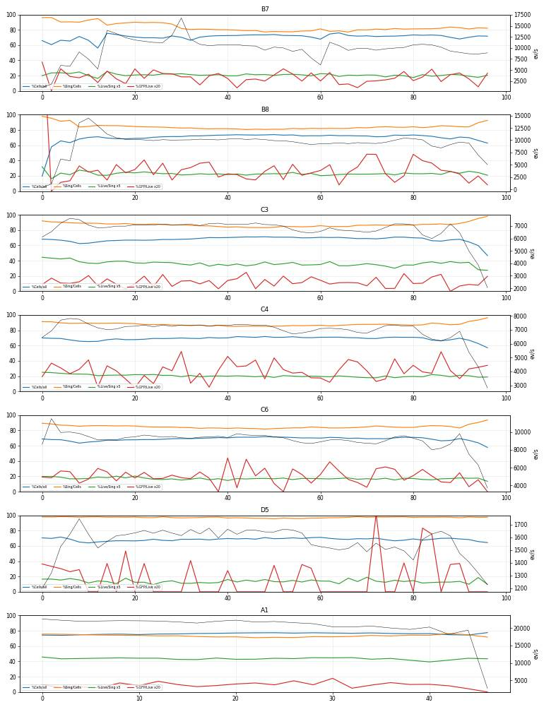
124
tool call · Bash
cd /task/work; cat > /task/work/block.py <<'EOF'
import sys; sys.path.insert(0,'/task/work')
from common import *
from matplotlib.path import Path
CELLS = [(60000,15000),(250000,15000),(650000,150000),(1000000,450000),(1000000,1030000),(350000,1030000),(60000,250000)]
SING = [(5000,2000),(800000,700000),(800000,1045000),(668000,1045000),(0,10000)]
def stats(D, lab):
f,s,h = D[:,IX['FSC-A']],D[:,IX['SSC-A']],D[:,IX['SSC-H']]
c = Path(CELLS).contains_points(np.c_[f,s]); sg = c & Path(SING).contains_points(np.c_[h,s])
lv = sg & (D[:,IX['RL3-A']]<=290); g = lv & (D[:,IX['BL1-A']]>=700)
print(' %-28s n=%6d cells%%=%.1f sing/cells=%.1f live/sing=%.2f gfp/live=%.2f medFSC=%.0f medSSC=%.0f medRL3=%.0f medVL1=%.0f medFSCW=%.1f'%(lab,len(D),100*c.mean(),100*sg.sum()/c.sum(),100*lv.sum()/sg.sum(),100*g.sum()/max(lv.sum(),1),
np.median(f),np.median(s),np.median(D[:,IX['RL3-A']]),np.median(D[:,IX['VL1-A']]),np.median(D[:,IX['FSC-W']])))
for w,k,prev in [('C6',4443,'C5'),('C11',4103,'C10'),('D4',4084,'D3')]:
d = np.asarray(load(w)); a = d[:k]; b = d[k:]
print(w)
stats(a, 'block1 (reset)')
win = b[(b[:,0]>=3350)&(b[:,0]<=3900)]; stats(win, 'main, same 3.35-3.9s window')
stats(b[(b[:,0]>=1000)&(b[:,0]<=10000)], 'main 1-10 s')
stats(b, 'main all')
p = np.asarray(load(prev)); stats(p[-20000:], f'{prev} last 20000 events')
print(' block1 time first/last 5:', a[:5,0], a[-5:,0], ' main first 5:', b[:5,0])
EOF
python3 -I block.py125
tool output
C6 block1 (reset) n= 4443 cells%=66.9 sing/cells=90.9 live/sing=4.55 gfp/live=0.81 medFSC=98137 medSSC=99470 medRL3=3301 medVL1=1506 medFSCW=80.0 main, same 3.35-3.9s window n= 5279 cells%=67.6 sing/cells=87.2 live/sing=4.08 gfp/live=0.79 medFSC=101364 medSSC=105771 medRL3=3513 medVL1=1779 medFSCW=81.0 main 1-10 s n= 86512 cells%=66.6 sing/cells=87.1 live/sing=3.63 gfp/live=1.04 medFSC=98996 medSSC=104672 medRL3=3544 medVL1=1761 medFSCW=80.0 main all n=886568 cells%=69.0 sing/cells=84.7 live/sing=3.43 gfp/live=1.01 medFSC=106892 medSSC=120059 medRL3=4049 medVL1=2012 medFSCW=82.0 C5 last 20000 events n= 20000 cells%=68.4 sing/cells=89.0 live/sing=3.88 gfp/live=1.27 medFSC=103846 medSSC=112585 medRL3=4688 medVL1=1852 medFSCW=81.0 block1 time first/last 5: [3350. 3350. 3350. 3350. 3350.] [3894. 3894. 3894. 3894. 3894.] main first 5: [14. 14. 14. 14. 14.] C11 block1 (reset) n= 4103 cells%=69.1 sing/cells=90.8 live/sing=4.98 gfp/live=0.78 medFSC=101429 medSSC=102487 medRL3=3421 medVL1=1664 medFSCW=81.0 main, same 3.35-3.9s window n= 4965 cells%=69.5 sing/cells=89.0 live/sing=5.24 gfp/live=1.86 medFSC=106589 medSSC=112894 medRL3=3838 medVL1=1872 medFSCW=81.0 main 1-10 s n= 82990 cells%=69.4 sing/cells=87.7 live/sing=5.00 gfp/live=0.87 medFSC=104350 medSSC=110172 medRL3=3768 medVL1=1882 medFSCW=81.0 main all n=864582 cells%=71.3 sing/cells=84.5 live/sing=4.64 gfp/live=0.97 medFSC=111020 medSSC=124974 medRL3=4294 medVL1=2186 medFSCW=82.0 C10 last 20000 events n= 20000 cells%=60.5 sing/cells=92.8 live/sing=4.80 gfp/live=1.30 medFSC=79899 medSSC=79199 medRL3=2686 medVL1=1345 medFSCW=77.0 block1 time first/last 5: [3345. 3345. 3346. 3346. 3346.] [3896. 3896. 3896. 3896. 3896.] main first 5: [14. 14. 14. 14. 14.] D4 block1 (reset) n= 4084 cells%=71.2 sing/cells=90.4 live/sing=6.58 gfp/live=0.00 medFSC=102307 medSSC=102952 medRL3=3501 medVL1=1398 medFSCW=81.0 main, same 3.35-3.9s window n= 5176 cells%=71.8 sing/cells=88.6 live/sing=6.43 gfp/live=0.47 medFSC=105245 medSSC=109032 medRL3=3760 medVL1=1614 medFSCW=81.0 main 1-10 s n= 86694 cells%=70.1 sing/cells=87.0 live/sing=5.91 gfp/live=0.42 medFSC=103054 medSSC=108600 medRL3=3812 medVL1=1646 medFSCW=81.0 main all n=921721 cells%=72.3 sing/cells=83.5 live/sing=5.41 gfp/live=0.51 medFSC=111983 medSSC=126322 medRL3=4574 medVL1=1945 medFSCW=83.0 D3 last 20000 events n= 20000 cells%=68.5 sing/cells=85.4 live/sing=7.72 gfp/live=0.11 medFSC=98046 medSSC=101609 medRL3=3150 medVL1=1652 medFSCW=81.0 block1 time first/last 5: [3292. 3293. 3293. 3293. 3293.] [3836. 3836. 3836. 3836. 3836.] main first 5: [14. 14. 14. 14. 15.]
127
thinking
The reset blocks look like an instrument file-writing quirk affecting about 0.5% of events, so I'll note them without excluding anything. Next I'm checking end-of-run behaviour at finer time resolution.
128
tool call · Bash
cd /task/work; python3 -I -c "
import sys; sys.path.insert(0,'/task/work')
from common import *
for w in ['C3','C4','C10','C6','C2','B10','B12','A2','D5','C12','D4']:
d=load(w); t=col(d,'Time')/1000; T=t.max()
h,_=np.histogram(t, np.arange(T-8, T+0.001, 0.5)); med=np.median(np.histogram(t,np.arange(10,80,0.5))[0])
print(w, 'T=%.2f med/0.5s=%d'%(T,med), (h/med).round(2).tolist())
"129
tool output
C3 T=97.72 med/0.5s=3489 [0.94, 0.97, 1.01, 0.9, 0.8, 0.75, 0.71, 0.69, 0.63, 0.59, 0.56, 0.53, 0.45, 0.39, 0.36, 0.23] C4 T=97.80 med/0.5s=3610 [0.96, 1.01, 0.95, 0.95, 0.82, 0.77, 0.71, 0.74, 0.66, 0.63, 0.59, 0.58, 0.54, 0.45, 0.42, 0.36] C10 T=97.48 med/0.5s=4917 [0.97, 1.16, 0.92, 1.07, 0.85, 0.91, 0.7, 0.65, 0.65, 0.69, 0.6, 0.65, 0.52, 0.48, 0.56, 0.47] C6 T=97.57 med/0.5s=4671 [0.91, 0.98, 0.94, 1.19, 1.13, 0.89, 0.79, 0.79, 0.72, 0.7, 0.66, 0.65, 0.68, 0.56, 0.48, 0.46] C2 T=97.79 med/0.5s=3701 [0.96, 1.07, 1.02, 0.91, 1.11, 0.91, 0.81, 0.76, 0.71, 0.7, 0.64, 0.57, 0.6, 0.55, 0.47, 0.42] B10 T=97.78 med/0.5s=5705 [0.84, 1.04, 0.96, 1.06, 1.05, 1.02, 0.85, 0.81, 0.8, 0.75, 0.69, 0.62, 0.62, 0.6, 0.5, 0.47] B12 T=97.78 med/0.5s=4686 [0.89, 0.87, 0.84, 0.86, 0.87, 0.88, 0.9, 0.95, 0.97, 0.98, 1.0, 0.98, 0.91, 1.04, 0.89, 0.83] A2 T=97.95 med/0.5s=4865 [0.84, 0.87, 0.86, 0.94, 1.05, 0.87, 1.09, 0.87, 1.0, 0.93, 0.83, 0.72, 0.85, 0.71, 0.67, 0.81] D5 T=97.77 med/0.5s=800 [0.91, 0.93, 0.94, 0.9, 0.93, 0.92, 0.87, 0.84, 0.81, 0.9, 0.84, 0.77, 0.8, 0.93, 0.82, 0.88] C12 T=97.75 med/0.5s=3017 [0.86, 0.77, 0.8, 0.84, 0.81, 0.99, 0.99, 0.92, 0.9, 1.05, 1.06, 1.01, 1.05, 0.92, 0.75, 0.77] D4 T=97.53 med/0.5s=4802 [0.97, 0.94, 0.93, 1.01, 0.96, 0.95, 0.89, 0.91, 0.83, 0.91, 0.87, 0.83, 0.86, 0.91, 0.92, 0.85]
131
tool call · Bash
cd /task/work; python3 -I -c "
import sys; sys.path.insert(0,'/task/work')
from common import *
rows=[]
for w in WELLS:
L=np.load(f'live_{w}.npy'); v=L[:,4]; f=L[:,2]; s=L[:,1]
rows.append((w,len(v), int(np.median(v)), int(np.percentile(v,90)), round(100*(v>5000).mean(),1), int(np.median(f)), int(np.median(s)), round(100*(f>190000).mean(),1)))
df=pd.DataFrame(rows,columns=['well','live','VL1med','VL1p90','pctVL1>5000','FSCmed','SSCmed','pctFSC>190k'])
print(df.to_string())
"132
tool output
well live VL1med VL1p90 pctVL1>5000 FSCmed SSCmed pctFSC>190k 0 A1 47585 2113 22263 31.6 95651 92374 10.4 1 A2 35056 3240 33013 41.2 98883 89797 12.5 2 A3 35470 2942 32201 38.2 99834 94976 10.7 3 A4 33454 3141 30551 40.0 94767 87340 10.8 4 A5 36364 3235 30260 40.8 95315 88284 10.3 5 A6 24044 3925 40802 45.5 101502 95976 12.3 6 A7 45118 1413 27175 31.9 84089 60786 7.3 7 A8 29543 3422 37414 42.7 95582 82693 11.7 8 A9 52244 1891 22034 32.4 87304 70477 6.3 9 A10 40712 3016 30567 40.7 90313 74872 10.8 10 A11 39230 3042 33973 40.4 92702 84584 10.3 11 A12 37034 2576 30940 37.4 91691 83040 11.5 12 B1 57383 1345 28510 32.7 84679 56538 10.4 13 B2 51372 1544 27814 33.1 86335 59819 11.5 14 B3 32352 2115 33507 38.0 86863 62586 12.5 15 B4 31680 1686 28939 30.9 93224 72813 15.0 16 B5 46437 1775 29447 31.9 91642 76468 13.4 17 B6 48242 2575 32185 39.5 92812 84215 14.7 18 B7 23647 4891 38222 49.7 90745 79195 15.7 19 B8 24947 3462 40920 44.6 88827 73936 14.0 20 B9 25774 4641 39122 48.7 91840 76311 14.4 21 B10 27877 3538 32477 44.1 87919 76165 10.7 22 B11 25877 3828 40717 45.1 88664 77778 12.0 23 B12 22050 5707 43591 52.2 93170 82479 12.9 24 C1 11658 5847 45773 51.9 94673 79466 17.2 25 C2 17072 5162 42277 50.5 94506 79136 17.8 26 C3 28369 2026 31582 38.5 84546 59163 12.3 27 C4 16930 5676 40185 52.1 91853 80103 16.4 28 C5 14802 5893 42003 52.9 92851 81727 17.8 29 C6 17877 6209 40643 53.7 91303 81431 14.9 30 C7 18447 3675 39712 45.8 91692 68371 17.7 31 C8 18149 3379 40643 43.2 96159 80254 20.5 32 C9 25570 4468 37217 47.8 90365 75916 15.9 33 C10 26693 4227 36930 46.2 88858 77153 14.9 34 C11 24276 5460 41741 52.0 89100 77593 13.8 35 C12 14718 6918 48999 57.0 93612 79972 13.9 36 D1 28266 2786 35155 41.6 82026 58654 10.9 37 D2 28580 2676 33194 39.6 84378 67302 13.9 38 D3 41762 2005 23175 34.6 81263 60056 9.1 39 D4 30297 3386 29147 42.8 85728 69118 12.6 40 D5 2791 3662 38981 43.9 84187 69922 7.8 41 D6 11256 5496 43520 51.4 86415 73763 13.9
134
agent
Nothing unexpected in NCAM staining or metadata. Now overlaying the draft Cells and Singlets polygons on every well to check they fit plate-wide.
135
tool call · Bash
cd /task/work; cat > /task/work/gates_def.py <<'EOF'
CELLS = [(65000,15000),(250000,15000),(650000,150000),(1000000,450000),(1000000,1030000),(350000,1030000),(55000,250000),(55000,45000)]
SING = [(5000,2000),(800000,700000),(800000,1045000),(668000,1045000),(0,10000)]
LIVE_MAX = 290.0
GFP_MIN = 700.0
EOF
cat > /task/work/overlay.py <<'EOF'
import sys; sys.path.insert(0,'/task/work')
from common import *
from gates_def import *
import matplotlib; matplotlib.use('Agg'); import matplotlib.pyplot as plt
from matplotlib.colors import LogNorm
from matplotlib.patches import Polygon
from matplotlib.path import Path
which = sys.argv[1]
fig, axes = plt.subplots(6, 7, figsize=(24, 19))
for ax, w in zip(axes.flat, WELLS):
d = load(w); f, s, h = col(d,'FSC-A'), col(d,'SSC-A'), col(d,'SSC-H')
if which == 'cells':
ax.hist2d(f, s, bins=250, range=[[0,1.05e6],[0,1.05e6]], norm=LogNorm(), cmap='jet'); ax.add_patch(Polygon(CELLS, fill=False, ec='k', lw=1.2))
elif which == 'cellszoom':
live = col(d,'RL3-A') <= LIVE_MAX
ax.hist2d(f[live], s[live], bins=200, range=[[0,4e5],[0,4e5]], norm=LogNorm(), cmap='jet'); ax.add_patch(Polygon(CELLS, fill=False, ec='k', lw=1.2))
elif which == 'sing':
m = Path(CELLS).contains_points(np.c_[f,s])
ax.hist2d(h[m], s[m], bins=250, range=[[0,8e5],[0,1.05e6]], norm=LogNorm(), cmap='jet'); ax.add_patch(Polygon(SING, fill=False, ec='k', lw=1.2))
ax.set_title(w, fontsize=9); ax.tick_params(labelsize=6)
plt.tight_layout(); plt.savefig(f'ov_{which}.png', dpi=50)
EOF
python3 -I overlay.py cells & python3 -I overlay.py cellszoom & python3 -I overlay.py sing & wait136
tool output
(Bash completed with no output)
137
tool call · Read
{
"file_path": "/task/work/ov_cellszoom.png"
}138
tool output
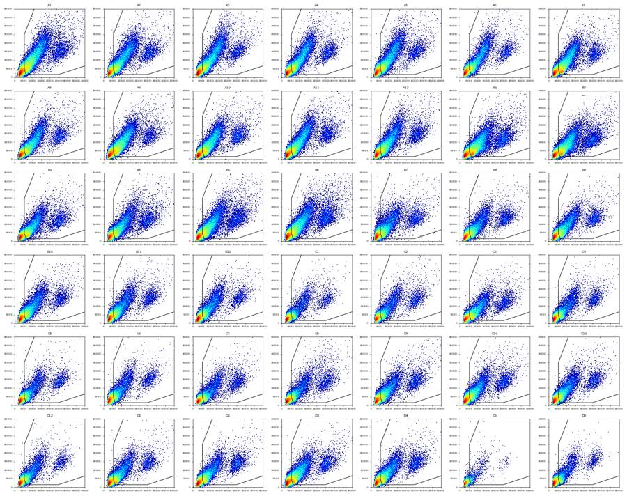
140
tool call · Read
{
"file_path": "/task/work/ov_cells.png"
}141
tool output
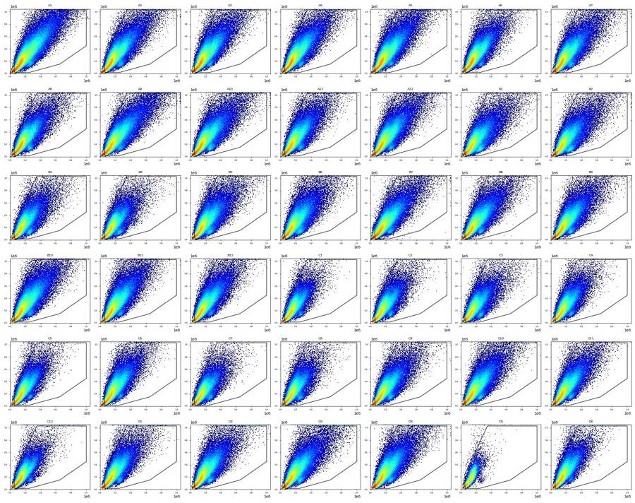
142
tool call · Read
{
"file_path": "/task/work/ov_sing.png"
}143
tool output
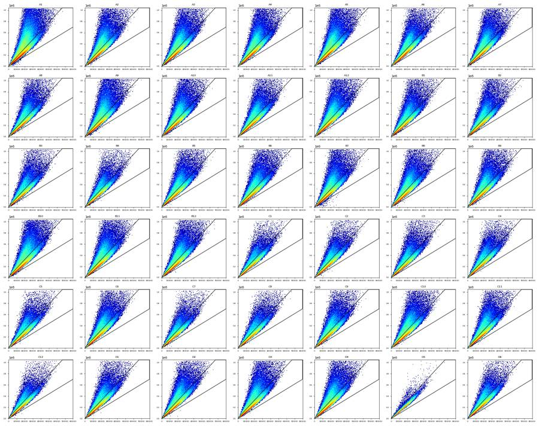
145
tool call · Bash
cd /task/work; cat > /task/work/ratio.py <<'EOF'
import sys; sys.path.insert(0,'/task/work')
from common import *
from gates_def import *
from matplotlib.path import Path
import matplotlib; matplotlib.use('Agg'); import matplotlib.pyplot as plt
ws = ['A3','B9','C10','D2','B1','C7','A1']
fig, axes = plt.subplots(1,4, figsize=(24,6))
bands = [(1e4,6e4),(6e4,1.5e5),(1.5e5,3e5),(3e5,7e5)]
for w in ws:
d=load(w); f,s,h=col(d,'FSC-A'),col(d,'SSC-A'),col(d,'SSC-H'); m=Path(CELLS).contains_points(np.c_[f,s])
r=(s/np.maximum(h,1))[m]; hh=h[m]; live=(col(d,'RL3-A')[m]<=LIVE_MAX)
for ax,(lo,hi) in zip(axes,bands):
k=(hh>lo)&(hh<hi); y,e=np.histogram(r[k], np.linspace(0.8,3,111)); ax.semilogy(e[:-1], y/y.sum(), label=w)
y,e=np.histogram(r[k&live], np.linspace(0.8,3,111)); ax.semilogy(e[:-1], y/max(1,y.sum()), '--', lw=0.7)
ax.set_title(f'SSC-A/SSC-H, SSC-H {lo:.0f}-{hi:.0f}'); ax.grid(alpha=0.3); ax.set_xticks(np.arange(0.8,3.01,0.1)); ax.tick_params(labelsize=6)
axes[0].legend(); plt.tight_layout(); plt.savefig('ratio.png', dpi=55)
EOF
python3 -I ratio.py146
tool output
(Bash completed with no output)
147
tool call · Read
{
"file_path": "/task/work/ratio.png"
}148
tool output
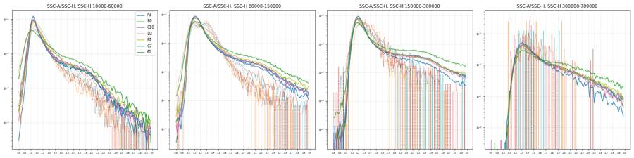
150
agent
The ratio data supports a narrower singlet band. A1, the 200 µL/min well, has a visibly broader pulse-shape distribution. I'm tightening the polygons, then building the FlowKit strategy.
151
tool call · Bash
cd /tmp; python3 -c " import flowkit as fk, inspect print(inspect.signature(fk.gates.PolygonGate.__init__)) print(inspect.signature(fk.gates.RectangleGate.__init__)) print(inspect.signature(fk.Dimension.__init__)) print(inspect.signature(fk.GatingStrategy.add_gate)) print(inspect.signature(fk.Sample.__init__)) print(inspect.signature(fk.GatingStrategy.gate_sample)) print(inspect.signature(fk.export_gatingml)) "
152
tool output
(self, gate_name, dimensions, vertices, use_complement=False) (self, gate_name, dimensions, use_complement=False) (self, dimension_id, compensation_ref='uncompensated', transformation_ref=None, range_min=None, range_max=None) (self, gate, gate_path, sample_id=None) (self, fcs_path_or_data, sample_id=None, filename_as_id=False, channel_labels=None, compensation=None, null_channel_list=None, ignore_offset_error=False, ignore_offset_discrepancy=False, use_header_offsets=False, cache_original_events=False, subsample=10000) (self, sample, cache_events=False, verbose=False) (gating_strategy, file_handle, sample_id=None) Shell cwd was reset to /task
154
tool call · Bash
mkdir -p /task/outputs; cat > /task/work/gates_def.py <<'EOF'
# Final gate definitions (raw, uncompensated channel units)
# Cells: FSC-A (x) vs SSC-A (y)
CELLS = [(80000,15000),(250000,15000),(650000,150000),(1000000,450000),(1000000,1030000),(350000,1030000),(55000,250000),(55000,55000)]
# Singlets: SSC-H (x) vs SSC-A (y)
SING = [(5000,3000),(800000,680000),(800000,1045000),(660000,1045000),(300000,480000),(100000,155000),(5000,9000)]
LIVE_MAX = 290.0 # RL3-A (Zombie NIR) upper edge of Live
GFP_MIN = 700.0 # BL1-A (GFP) lower edge of GFP_pos
SSC_RANGE = (0.0, 1048576.0)
EOF
cat > /task/work/build_gates.py <<'EOF'
import sys; sys.path.insert(0,'/task/work')
import flowkit as fk
from gates_def import *
def D(ch, lo=None, hi=None):
return fk.Dimension(ch, compensation_ref='uncompensated', transformation_ref=None, range_min=lo, range_max=hi)
gs = fk.GatingStrategy()
gs.add_gate(fk.gates.PolygonGate('Cells', [D('FSC-A'), D('SSC-A')], [list(v) for v in CELLS]), gate_path=('root',))
gs.add_gate(fk.gates.PolygonGate('Singlets', [D('SSC-H'), D('SSC-A')], [list(v) for v in SING]), gate_path=('root','Cells'))
gs.add_gate(fk.gates.RectangleGate('Live', [D('RL3-A', None, LIVE_MAX), D('SSC-A', *SSC_RANGE)]), gate_path=('root','Cells','Singlets'))
gs.add_gate(fk.gates.RectangleGate('GFP_pos', [D('BL1-A', GFP_MIN, None), D('SSC-A', *SSC_RANGE)]), gate_path=('root','Cells','Singlets','Live'))
with open('/task/outputs/gates.xml','wb') as fh:
fk.export_gatingml(gs, fh)
gs2 = fk.parse_gating_xml('/task/outputs/gates.xml')
print(gs2.get_gate_hierarchy(output='ascii'))
for g in gs2.get_gate_ids(): print(g)
EOF
python3 -I /task/work/build_gates.py && head -c 3000 /task/outputs/gates.xml155
tool output
root
╰── Cells
╰── Singlets
╰── Live
╰── GFP_pos
('Cells', ('root',))
('Singlets', ('root', 'Cells'))
('Live', ('root', 'Cells', 'Singlets'))
('GFP_pos', ('root', 'Cells', 'Singlets', 'Live'))
<?xml version='1.0' encoding='UTF-8'?>
<gating:Gating-ML xmlns:gating="http://www.isac-net.org/std/Gating-ML/v2.0/gating" xmlns:data-type="http://www.isac-net.org/std/Gating-ML/v2.0/datatypes" xmlns:transforms="http://www.isac-net.org/std/Gating-ML/v2.0/transformations">
<gating:PolygonGate gating:id="Cells">
<gating:dimension gating:compensation-ref="uncompensated">
<data-type:fcs-dimension data-type:name="FSC-A"/>
</gating:dimension>
<gating:dimension gating:compensation-ref="uncompensated">
<data-type:fcs-dimension data-type:name="SSC-A"/>
</gating:dimension>
<gating:vertex>
<gating:coordinate data-type:value="80000"/>
<gating:coordinate data-type:value="15000"/>
</gating:vertex>
<gating:vertex>
<gating:coordinate data-type:value="250000"/>
<gating:coordinate data-type:value="15000"/>
</gating:vertex>
<gating:vertex>
<gating:coordinate data-type:value="650000"/>
<gating:coordinate data-type:value="150000"/>
</gating:vertex>
<gating:vertex>
<gating:coordinate data-type:value="1000000"/>
<gating:coordinate data-type:value="450000"/>
</gating:vertex>
<gating:vertex>
<gating:coordinate data-type:value="1000000"/>
<gating:coordinate data-type:value="1030000"/>
</gating:vertex>
<gating:vertex>
<gating:coordinate data-type:value="350000"/>
<gating:coordinate data-type:value="1030000"/>
</gating:vertex>
<gating:vertex>
<gating:coordinate data-type:value="55000"/>
<gating:coordinate data-type:value="250000"/>
</gating:vertex>
<gating:vertex>
<gating:coordinate data-type:value="55000"/>
<gating:coordinate data-type:value="55000"/>
</gating:vertex>
</gating:PolygonGate>
<gating:PolygonGate gating:id="Singlets" gating:parent_id="Cells">
<gating:dimension gating:compensation-ref="uncompensated">
<data-type:fcs-dimension data-type:name="SSC-H"/>
</gating:dimension>
<gating:dimension gating:compensation-ref="uncompensated">
<data-type:fcs-dimension data-type:name="SSC-A"/>
</gating:dimension>
<gating:vertex>
<gating:coordinate data-type:value="5000"/>
<gating:coordinate data-type:value="3000"/>
</gating:vertex>
<gating:vertex>
<gating:coordinate data-type:value="800000"/>
<gating:coordinate data-type:value="680000"/>
</gating:vertex>
<gating:vertex>
<gating:coordinate data-type:value="800000"/>
<gating:coordinate data-type:value="1045000"/>
</gating:vertex>
<gating:vertex>
<gating:coordinate data-type:value="660000"/>
<gating:coordinate data-type:value="1045000"/>
</gating:vertex>
<gating:vertex>
<gating:coordinate data-type:value="300000"/>
<gating:coordinate data-type:value="480000"/>
</gating:vertex>
<gating:vertex>
<gating:coordinate data-type:value="100000"/>
<gating:coordinate data-type:value="155000"/>
</gating:vert157
tool call · Bash
cat > /task/work/run_counts.py <<'EOF'
import sys, os, warnings; sys.path.insert(0,'/task/work')
import flowkit as fk, pandas as pd, numpy as np
warnings.filterwarnings('ignore')
lay = pd.read_csv('/task/inputs/plate_layout.csv')
gs = fk.parse_gating_xml('/task/outputs/gates.xml')
POPS = [('Cells','all_events'),('Singlets','Cells'),('Live','Singlets'),('GFP_pos','Live')]
rows = []
for f, w in zip(lay.file, lay.well):
s = fk.Sample(os.path.join('/task/inputs/raw', f))
res = gs.gate_sample(s)
rep = res.report.set_index('gate_name')
tot = s.event_count
cnt = {'all_events': tot}
for p, par in POPS:
c = int(rep.loc[p, 'count']); cnt[p] = c
rows.append(dict(file=f, well=w, population=p, count=c, parent_population=par,
pct_of_parent=(100.0*c/cnt[par]) if cnt[par] > 0 else 0.0))
print(w, tot, [cnt[p] for p,_ in POPS], flush=True)
df = pd.DataFrame(rows)
df.to_csv('/task/outputs/counts.csv', index=False, float_format='%.4f')
print(len(df))
EOF
cd /task/work && time python3 -I run_counts.py158
tool output
A1 978726 [750434, 536823, 45560, 216] A2 935707 [701685, 570464, 33786, 249] A3 925910 [701928, 578589, 34774, 331] A4 892332 [682431, 559442, 32332, 316] A5 986514 [743723, 602493, 35340, 371] A6 755396 [575557, 489280, 23364, 342] A7 848859 [634799, 520125, 40097, 200] A8 710140 [537085, 454432, 28188, 217] A9 958681 [700251, 550322, 48151, 128] A10 870505 [650016, 528247, 38446, 182] A11 844586 [613423, 513675, 37963, 263] A12 947510 [691165, 564820, 35646, 412] B1 733754 [516169, 421051, 48760, 21] B2 728886 [508807, 415236, 44564, 61] B3 667298 [466812, 395360, 28842, 212] B4 598212 [413862, 358745, 29317, 85] B5 837561 [600512, 499650, 43559, 218] B6 877336 [621654, 511236, 46064, 223] B7 954909 [689957, 559121, 21963, 206] B8 918778 [659707, 540444, 23399, 313] B9 862070 [631262, 521549, 24156, 313] B10 1083648 [782407, 626836, 26689, 359] B11 988574 [709205, 582338, 24720, 485] B12 904103 [642833, 532533, 21077, 543] C1 624718 [430289, 380365, 10827, 178] C2 695572 [477760, 413610, 15921, 301] C3 656321 [449338, 382128, 24560, 167] C4 679504 [476283, 410939, 15993, 216] C5 689593 [482827, 419986, 14182, 179] C6 891011 [623497, 520107, 17237, 177] C7 649735 [436341, 379306, 16715, 198] C8 639518 [437735, 381757, 17219, 554] C9 801299 [573084, 479287, 24065, 403] C10 927162 [670439, 549959, 25709, 336] C11 868685 [626777, 521018, 23076, 231] C12 578214 [413137, 364899, 13913, 117] D1 800840 [570074, 483213, 24081, 91] D2 894591 [645095, 538453, 26054, 225] D3 915097 [658575, 535420, 36680, 126] D4 925805 [676383, 555478, 27903, 147] D5 153195 [106028, 102669, 2455, 23] D6 726651 [516497, 450243, 10185, 80] 168 real 0m10.606s user 0m5.338s sys 0m5.883s
160
agent
FlowKit gated all 42 files in ~10 s. Cross-checking those counts against an independent numpy implementation of the same gates.
161
tool call · Bash
cd /task/work; python3 -I -c "
import sys; sys.path.insert(0,'/task/work')
from common import *
from gates_def import *
from matplotlib.path import Path
c=pd.read_csv('/task/outputs/counts.csv')
for w in ['A1','B7','D5','C8']:
d=load(w); f,s,h=col(d,'FSC-A'),col(d,'SSC-A'),col(d,'SSC-H')
m1=Path(CELLS).contains_points(np.c_[f,s]); m2=m1&Path(SING).contains_points(np.c_[h,s])
m3=m2&(col(d,'RL3-A')<LIVE_MAX); m4=m3&(col(d,'BL1-A')>=GFP_MIN)
print(w,[m.sum() for m in (m1,m2,m3,m4)], c[c.well==w]['count'].tolist())
"; head -5 /task/outputs/counts.csv162
tool output
A1 [750434, 536823, 45560, 216] [750434, 536823, 45560, 216] B7 [689957, 559121, 21963, 206] [689957, 559121, 21963, 206] D5 [106028, 102669, 2455, 23] [106028, 102669, 2455, 23] C8 [437735, 381757, 17219, 554] [437735, 381757, 17219, 554] file,well,population,count,parent_population,pct_of_parent Serotype panel_2_Rep2_Group_A1.fcs,A1,Cells,750434,all_events,76.6746 Serotype panel_2_Rep2_Group_A1.fcs,A1,Singlets,536823,Cells,71.5350 Serotype panel_2_Rep2_Group_A1.fcs,A1,Live,45560,Singlets,8.4870 Serotype panel_2_Rep2_Group_A1.fcs,A1,GFP_pos,216,Live,0.4741
164
tool call · Bash
cd /task/work; python3 -I -c "
import pandas as pd, numpy as np
c=pd.read_csv('/task/outputs/counts.csv')
p=c.pivot(index='well',columns='population',values='pct_of_parent')[['Cells','Singlets','Live','GFP_pos']]
n=c.pivot(index='well',columns='population',values='count')[['Cells','Singlets','Live','GFP_pos']]
q=pd.read_csv('qc_flow.csv').set_index('well')
t=p.join(n,rsuffix='_n').join(q[['n','med_rate']])
order=list(pd.read_csv('/task/inputs/plate_layout.csv').well)
t=t.loc[order]
med=t[['Cells','Singlets','Live','GFP_pos']].median(); mad=(t[['Cells','Singlets','Live','GFP_pos']]-med).abs().median()*1.4826
z=((t[['Cells','Singlets','Live','GFP_pos']]-med)/mad).round(1)
pd.set_option('display.width',250)
print(t.round(2).join(z,rsuffix='_z').to_string())
"165
tool output
Cells Singlets Live GFP_pos Cells_n Singlets_n Live_n GFP_pos_n n med_rate Cells_z Singlets_z Live_z GFP_pos_z well A1 76.67 71.54 8.49 0.47 750434 536823 45560 216 978726 21595 2.1 -4.6 2.0 -0.8 A2 74.99 81.30 5.92 0.74 701685 570464 33786 249 935707 9736 1.4 -0.7 0.5 -0.3 A3 75.81 82.43 6.01 0.95 701928 578589 34774 331 925910 9731 1.7 -0.2 0.6 0.0 A4 76.48 81.98 5.78 0.98 682431 559442 32332 316 892332 9275 2.0 -0.4 0.4 0.1 A5 75.39 81.01 5.87 1.05 743723 602493 35340 371 986514 10269 1.6 -0.8 0.5 0.2 A6 76.19 85.01 4.78 1.46 575557 489280 23364 342 755396 7917 1.9 0.8 -0.1 0.9 A7 74.78 81.94 7.71 0.50 634799 520125 40097 200 848859 8848 1.3 -0.4 1.6 -0.7 A8 75.63 84.61 6.20 0.77 537085 454432 28188 217 710140 7376 1.7 0.7 0.7 -0.3 A9 73.04 78.59 8.75 0.27 700251 550322 48151 128 958681 9968 0.5 -1.8 2.2 -1.1 A10 74.67 81.27 7.28 0.47 650016 528247 38446 182 870505 9119 1.2 -0.7 1.3 -0.8 A11 72.63 83.74 7.39 0.69 613423 513675 37963 263 844586 8749 0.4 0.3 1.4 -0.4 A12 72.95 81.72 6.31 1.16 691165 564820 35646 412 947510 9856 0.5 -0.5 0.8 0.4 B1 70.35 81.57 11.58 0.04 516169 421051 48760 21 733754 7648 -0.6 -0.6 3.8 -1.5 B2 69.81 81.61 10.73 0.14 508807 415236 44564 61 728886 7525 -0.8 -0.6 3.3 -1.3 B3 69.96 84.69 7.30 0.74 466812 395360 28842 212 667298 6958 -0.8 0.7 1.3 -0.3 B4 69.18 86.68 8.17 0.29 413862 358745 29317 85 598212 6291 -1.1 1.5 1.8 -1.1 B5 71.70 83.20 8.72 0.50 600512 499650 43559 218 837561 8770 -0.0 0.1 2.1 -0.7 B6 70.86 82.24 9.01 0.48 621654 511236 46064 223 877336 9071 -0.4 -0.3 2.3 -0.8 B7 72.25 81.04 3.93 0.94 689957 559121 21963 206 954909 10200 0.2 -0.8 -0.6 0.0 B8 71.80 81.92 4.33 1.34 659707 540444 23399 313 918778 9976 0.0 -0.4 -0.4 0.7 B9 73.23 82.62 4.63 1.30 631262 521549 24156 313 862070 8865 0.6 -0.1 -0.2 0.6 B10 72.20 80.12 4.26 1.35 782407 626836 26689 359 1083648 11374 0.2 -1.1 -0.4 0.7 B11 71.74 82.11 4.24 1.96 709205 582338 24720 485 988574 10305 -0.0 -0.3 -0.4 1.7 B12 71.10 82.84 3.96 2.58 642833 532533 21077 543 904103 9356 -0.3 -0.1 -0.6 2.7 C1 68.88 88.40 2.85 1.64 430289 380365 10827 178 624718 6452 -1.2 2.2 -1.2 1.2 C2 68.69 86.57 3.85 1.89 477760 413610 15921 301 695572 7296 -1.3 1.4 -0.7 1.6 C3 68.46 85.04 6.43 0.68 449338 382128 24560 167 656321 6955 -1.4 0.8 0.8 -0.4 C4 70.09 86.28 3.89 1.35 476283 410939 15993 216 679504 7153 -0.7 1.3 -0.6 0.7 C5 70.02 86.98 3.38 1.26 482827 419986 14182 179 689593 7138 -0.8 1.6 -0.9 0.5 C6 69.98 83.42 3.31 1.03 623497 520107 17237 177 891011 9307 -0.8 0.2 -1.0 0.1 C7 67.16 86.93 4.41 1.18 436341 379306 16715 198 649735 6684 -2.0 1.6 -0.3 0.4 C8 68.45 87.21 4.51 3.22 437735 381757 17219 554 639518 6612 -1.4 1.7 -0.3 3.8 C9 71.52 83.63 5.02 1.67 573084 479287 24065 403 801299 8282 -0.1 0.3 0.0 1.2 C10 72.31 82.03 4.67 1.31 670439 549959 25709 336 927162 9771 0.2 -0.4 -0.2 0.6 C11 72.15 83.13 4.43 1.00 626777 521018 23076 231 868685 9036 0.2 0.1 -0.3 0.1 C12 71.45 88.32 3.81 0.84 413137 364899 13913 117 578214 6042 -0.1 2.1 -0.7 -0.2 D1 71.18 84.76 4.98 0.38 570074 483213 24081 91 800840 8311 -0.3 0.7 -0.0 -0.9 D2 72.11 83.47 4.84 0.86 645095 538453 26054 225 894591 9291 0.1 0.2 -0.1 -0.1 D3 71.97 81.30 6.85 0.34 658575 535420 36680 126 915097 9438 0.1 -0.7 1.1 -1.0 D4 73.06 82.12 5.02 0.53 676383 555478 27903 147 925805 9581 0.6 -0.3 0.0 -0.7 D5 69.21 96.83 2.39 0.94 106028 102669 2455 23 153195 1597 -1.1 5.5 -1.5 -0.0 D6 71.08 87.17 2.26 0.79 516497 450243 10185 80 726651 7560 -0.3 … [27 more characters not shown]
167
thinking
FlowKit's counts match the numpy cross-check exactly, though A1's singlet fraction (71.5%) sits well below the plate median of about 83%, which fits its doubled flow rate. I'm now measuring how much the B7/B8 flow disruptions shift the gate fractions.
168
tool call · Bash
cd /task/work; cat > /task/work/segcomp.py <<'EOF'
import sys; sys.path.insert(0,'/task/work')
from common import *
from gates_def import *
from matplotlib.path import Path
def fr(d, sel):
f,s,h = col(d,'FSC-A')[sel],col(d,'SSC-A')[sel],col(d,'SSC-H')[sel]
c = Path(CELLS).contains_points(np.c_[f,s]); sg = c & Path(SING).contains_points(np.c_[h,s])
lv = sg & (col(d,'RL3-A')[sel] < LIVE_MAX); g = lv & (col(d,'BL1-A')[sel] >= GFP_MIN)
return dict(n=int(sel.sum()), cells=round(100*c.mean(),1), sing=round(100*sg.sum()/max(c.sum(),1),1), live=round(100*lv.sum()/max(sg.sum(),1),2), gfp=round(100*g.sum()/max(lv.sum(),1),2), live_n=int(lv.sum()), gfp_n=int(g.sum()))
for w, segs in [('B7',[(0,13),(13,30),(30,62),(62,99)]),('B8',[(0,3.5),(3.5,10),(10,99)]),('C6',[(0,99)]),('A1',[(0,47)]),('A2',[(0,99)])]:
d = load(w); t = col(d,'Time')/1000
for a,b in segs:
sel = (t>=a)&(t<b); print(w, f'{a}-{b}s', fr(d, sel))
EOF
python3 -I segcomp.py
python3 -I -c "
import sys; sys.path.insert(0,'/task/work')
from common import *
for w in ['B7','B8']:
d=load(w); t=col(d,'Time')/1000
h,_=np.histogram(t,np.arange(0,99,1.0)); med=np.median(h)
print(w,'med',med,'per-1s rate/med first 70 s:', (h[:70]/med).round(2).tolist())
"169
tool output
B7 0-13s {'n': 67920, 'cells': 67.8, 'sing': 90.2, 'live': 4.17, 'gfp': 0.98, 'live_n': 1730, 'gfp_n': 17}
B7 13-30s {'n': 201488, 'cells': 72.5, 'sing': 87.3, 'live': 4.13, 'gfp': 1.06, 'live_n': 5263, 'gfp_n': 56}
B7 30-62s {'n': 331018, 'cells': 72.3, 'sing': 77.6, 'live': 3.96, 'gfp': 0.9, 'live_n': 7366, 'gfp_n': 66}
B7 62-99s {'n': 354483, 'cells': 72.9, 'sing': 79.1, 'live': 3.72, 'gfp': 0.88, 'live_n': 7604, 'gfp_n': 67}
B8 0-3.5s {'n': 808, 'cells': 21.0, 'sing': 94.7, 'live': 6.21, 'gfp': 10.0, 'live_n': 10, 'gfp_n': 1}
B8 3.5-10s {'n': 53242, 'cells': 66.9, 'sing': 86.1, 'live': 4.63, 'gfp': 1.2, 'live_n': 1419, 'gfp_n': 17}
B8 10-99s {'n': 864728, 'cells': 72.2, 'sing': 81.7, 'live': 4.31, 'gfp': 1.34, 'live_n': 21970, 'gfp_n': 295}
C6 0-99s {'n': 891011, 'cells': 70.0, 'sing': 83.4, 'live': 3.31, 'gfp': 1.03, 'live_n': 17237, 'gfp_n': 177}
A1 0-47s {'n': 978726, 'cells': 76.7, 'sing': 71.5, 'live': 8.49, 'gfp': 0.47, 'live_n': 45560, 'gfp_n': 216}
A2 0-99s {'n': 935707, 'cells': 75.0, 'sing': 81.3, 'live': 5.92, 'gfp': 0.74, 'live_n': 33786, 'gfp_n': 249}
B7 med 10176.5 per-1s rate/med first 70 s: [0.03, 0.18, 0.18, 0.18, 0.54, 0.65, 0.48, 0.67, 0.84, 0.94, 0.8, 0.66, 0.52, 0.51, 1.37, 1.37, 1.33, 1.27, 1.24, 1.18, 1.17, 1.15, 1.14, 1.12, 1.11, 1.1, 1.1, 1.1, 1.09, 1.44, 1.72, 1.58, 1.27, 1.08, 1.07, 1.06, 1.06, 1.0, 1.03, 1.07, 1.03, 1.06, 1.05, 1.06, 1.03, 1.03, 1.01, 1.04, 0.92, 0.94, 1.01, 0.99, 0.9, 1.07, 1.0, 0.81, 1.01, 0.9, 0.75, 0.77, 0.83, 0.38, 1.05, 1.16, 1.0, 1.07, 0.97, 0.89, 1.0, 0.95]
B8 med 9969.0 per-1s rate/med first 70 s: [0.06, 0.01, 0.0, 0.22, 0.63, 0.61, 0.57, 0.6, 1.19, 1.52, 1.48, 1.43, 1.36, 1.23, 1.15, 1.1, 1.07, 1.03, 1.02, 1.01, 1.02, 1.01, 1.01, 1.01, 0.99, 1.0, 1.01, 1.02, 1.0, 1.01, 1.0, 1.02, 1.01, 1.01, 1.02, 1.03, 1.02, 1.01, 1.02, 1.0, 1.02, 1.03, 1.03, 1.04, 1.01, 1.02, 1.04, 1.01, 1.03, 1.0, 1.0, 0.99, 1.0, 0.98, 0.99, 0.96, 0.96, 0.93, 0.91, 0.92, 0.92, 0.94, 0.93, 0.94, 0.94, 0.96, 0.94, 0.93, 0.96, 0.95]171
thinking
B7 shows unstable flow for about 60 s and its singlet fraction drops from 90% to 78%, while B8 clogs for roughly 3.5 s and then surges until about 13 s. I'm building the final QC table and figures now.
172
tool call · Bash
cd /task/work; cat > /task/work/final_qc.py <<'EOF'
import sys, os; sys.path.insert(0,'/task/work')
from common import *
import flowio
c = pd.read_csv('/task/outputs/counts.csv')
cnt = c.pivot(index='well', columns='population', values='count')
pct = c.pivot(index='well', columns='population', values='pct_of_parent')
rows = []
for f, w in zip(lay.file, lay.well):
t_ = flowio.FlowData(os.path.join('/task/inputs/raw', f), only_text=True).text
d = load(w); t = col(d,'Time')/1000.0; n = len(t); T = t.max(); nb = int(np.floor(T))
h,_ = np.histogram(t, np.arange(0, nb+1, 1.0)); med = np.median(h)
tt = col(d,'Time'); nonmono = np.where(np.diff(tt) < 0)[0]
sat = {ch: 100*np.mean(col(d,ch) >= 1048575) for ch in ['FSC-A','SSC-A','BL1-A','RL3-A']}
low = np.where(h < 0.5*med)[0]; hi = np.where(h > 1.5*med)[0]
rows.append(dict(well=w, file=f, n=n, T=T, flowrate=int(t_['#flowrate']), vol_ul=int(t_['vol'])/1000, coinc=int(t_['#coincidentcount']),
coinc_pct=100*int(t_['#coincidentcount'])/n, med=med, rmin=h.min()/med, rmax=h.max()/med, low=list(low), hi=list(hi),
last5=h[-5:].mean()/med, final1=h[-1]/med, nonmono=list(nonmono), **{f'sat_{k}':v for k,v in sat.items()}))
q = pd.DataFrame(rows).set_index('well')
q.to_pickle('final_qc.pkl')
pd.set_option('display.width',250)
print(q[['n','T','flowrate','vol_ul','coinc_pct','med','rmin','rmax','last5','final1','sat_FSC-A','sat_SSC-A','sat_BL1-A','sat_RL3-A']].round(3).to_string())
print(q[['low','hi','nonmono']].to_string())
EOF
python3 -I final_qc.py173
tool output
n T flowrate vol_ul coinc_pct med rmin rmax last5 final1 sat_FSC-A sat_SSC-A sat_BL1-A sat_RL3-A
well
A1 978726 46.250 200 155.0 17.627 21595.0 0.806 1.056 0.886 0.910 0.189 1.174 0.001 0.000
A2 935707 97.949 100 164.0 10.301 9736.0 0.770 1.109 0.887 0.775 0.072 0.500 0.002 0.000
A3 925910 97.658 100 163.0 9.750 9731.0 0.630 1.095 0.791 0.630 0.048 0.467 0.002 0.000
A4 892332 97.738 100 163.0 9.976 9275.0 0.834 1.086 0.885 0.946 0.075 0.531 0.007 0.000
A5 986514 97.871 100 164.0 10.577 10269.0 0.713 1.100 0.865 0.933 0.075 0.612 0.010 0.000
A6 755396 97.106 100 162.0 8.158 7917.0 0.741 1.085 0.865 0.905 0.032 0.348 0.011 0.000
A7 848859 97.919 100 164.0 9.630 8848.0 0.791 1.084 0.858 0.825 0.089 0.534 0.003 0.000
A8 710140 97.939 100 164.0 7.958 7376.0 0.725 1.079 0.875 0.970 0.068 0.441 0.005 0.000
A9 958681 97.821 100 164.0 11.354 9968.0 0.785 1.096 0.875 0.999 0.319 1.084 0.002 0.000
A10 870505 97.699 100 163.0 9.979 9119.0 0.625 1.112 0.802 0.625 0.137 0.632 0.003 0.000
A11 844586 97.924 100 164.0 8.783 8749.0 0.824 1.114 0.907 1.000 0.043 0.379 0.008 0.000
A12 947510 97.898 100 164.0 10.003 9856.0 0.609 1.117 0.812 0.609 0.093 0.546 0.011 0.000
B1 733754 97.937 100 164.0 8.851 7648.0 0.700 1.092 0.912 1.036 0.107 0.475 0.000 0.000
B2 728886 97.867 100 164.0 8.870 7525.0 0.815 1.102 0.934 1.030 0.132 0.533 0.000 0.000
B3 667298 97.940 100 164.0 7.579 6958.0 0.822 1.073 0.882 0.943 0.065 0.350 0.000 0.000
B4 598212 97.862 100 164.0 6.714 6291.0 0.561 1.106 0.760 0.561 0.045 0.315 0.000 0.000
B5 837561 97.905 100 164.0 8.758 8770.0 0.625 1.100 0.801 0.625 0.045 0.412 0.000 0.000
B6 877336 97.836 100 164.0 9.061 9071.0 0.581 1.118 0.774 0.581 0.052 0.475 0.000 0.000
B7 954909 97.900 100 164.0 10.261 10200.0 0.031 1.713 0.875 0.980 0.118 0.561 0.000 0.001
B8 918778 97.751 100 163.0 9.961 9976.0 0.003 1.523 0.781 0.620 0.042 0.373 0.000 0.000
B9 862070 97.962 100 164.0 9.220 8865.0 0.829 1.113 0.952 1.113 0.055 0.400 0.000 0.000
B10 1083648 97.779 100 163.0 10.991 11374.0 0.591 1.103 0.770 0.591 0.065 0.605 0.001 0.000
B11 988574 97.925 100 164.0 9.949 10305.0 0.670 1.109 0.819 0.670 0.035 0.438 0.004 0.000
B12 904103 97.779 100 163.0 9.314 9356.0 0.851 1.099 0.950 0.957 0.029 0.383 0.012 0.000
C1 624718 97.765 100 163.0 6.146 6452.0 0.817 1.095 0.924 0.975 0.005 0.151 0.000 0.000
C2 695572 97.790 100 163.0 6.995 7296.0 0.564 1.083 0.729 0.564 0.010 0.196 0.000 0.000
C3 656321 97.719 100 163.0 7.305 6955.0 0.386 1.098 0.587 0.386 0.040 0.285 0.000 0.000
C4 679504 97.801 100 164.0 7.073 7153.0 0.478 1.094 0.639 0.478 0.012 0.200 0.000 0.000
C5 689593 97.862 100 164.0 6.945 7138.0 0.817 1.077 0.943 1.035 0.008 0.185 0.002 0.001
C6 891011 97.567 100 163.0 8.951 9307.0 0.532 1.506 0.700 0.532 0.015 0.314 0.003 0.000
C7 649735 97.906 100 164.0 6.556 6684.0 0.817 1.100 1.025 1.000 0.014 0.186 0.000 0.001
C8 639518 97.873 100 164.0 6.419 6612.0 0.783 1.084 0.917 0.999 0.008 0.236 0.000 0.000
C9 801299 97.900 100 164.0 8.611 8282.0 0.811 1.063 0.951 0.979 0.041 0.322 0.000 0.000
C10 927162 97.483 100 163.0 9.750 9771.0 0.528 1.116 0.645 0.528 0.040 0.412 0.000 0.000
C11 868685 97.535 100 163.0 9.088 9036.0 0.846 1.437 0.880 0.846 0.038 0.343 0.000 0.000
C12 578214 97.755 100 163.0 6.045 6042.0 0.792 1.134 0.964 0.829 0.021 0.177 0.000 0.000
D1 800840 97.943 100 164.0 8.080 8311.0 0.839 1.116 0.890 0.839 0.020 0.275 0.000 0.000
D2 894591 97.932 100 164.0 9.116 9291.0 0.754 1.080 0.892 0.754 0.028 0.326 0.002 0.000
D3 915097 97.745 100 163.0 9.910 9438.0 0.832 1.081 0.903 0.932 0.073 0.468 0.000 0.000
D4 925805 97.528 100 163.0 9.692 9581.0 0.814 1.398 0.889 0.916 0.042 0.427 0.002 0.000
D5 153195 97.768 100 163.0 1.497 1597.0 0.743 1.106 0.858 0.875 0.002 0.076 0.005 0.000
D6 726651 97.928 100 164.0 7.115 7560.0 0.832 1.101 0.891 0.858 0.006 0.200 0.002 0.000
low hi nonmono
well
A1 [] [] []
A2
… [1,787 more characters not shown]175
tool call · Bash
mkdir -p /task/outputs/figures; cd /task/work; cat > /task/work/fig_final.py <<'EOF'
import sys; sys.path.insert(0,'/task/work')
from common import *
from gates_def import *
import matplotlib; matplotlib.use('Agg'); import matplotlib.pyplot as plt
from matplotlib.colors import LogNorm
from matplotlib.patches import Polygon
from matplotlib.path import Path
def gate(d):
f,s,h = col(d,'FSC-A'),col(d,'SSC-A'),col(d,'SSC-H')
c = Path(CELLS).contains_points(np.c_[f,s]); sg = c & Path(SING).contains_points(np.c_[h,s])
lv = sg & (col(d,'RL3-A') < LIVE_MAX); return f,s,h,c,sg,lv
ws = ['B1','B2','A12','C8','B7','D5']
fig, axes = plt.subplots(len(ws), 4, figsize=(20, 4.6*len(ws)))
for r,w in enumerate(ws):
d = load(w); f,s,h,c,sg,lv = gate(d)
a = axes[r,0]; a.hist2d(f, s, bins=250, range=[[0,1.05e6],[0,1.05e6]], norm=LogNorm(), cmap='jet'); a.add_patch(Polygon(CELLS, fill=False, ec='k', lw=1.5)); a.set_title(f'{w} all events: FSC-A vs SSC-A (Cells {c.sum()})');
a = axes[r,1]; a.hist2d(h[c], s[c], bins=250, range=[[0,8e5],[0,1.05e6]], norm=LogNorm(), cmap='jet'); a.add_patch(Polygon(SING, fill=False, ec='k', lw=1.5)); a.set_title(f'Cells: SSC-H vs SSC-A (Singlets {sg.sum()})')
a = axes[r,2]; a.hist2d(lg(col(d,'RL3-A')[sg]), s[sg], bins=250, range=[[-0.1,1],[0,1.05e6]], norm=LogNorm(), cmap='jet'); a.axvline(float(lg(LIVE_MAX)), color='k', lw=1.5); a.set_title(f'Singlets: RL3-A (logicle) vs SSC-A (Live {lv.sum()})')
b = col(d,'BL1-A')[lv]; a = axes[r,3]; a.hist2d(lg(b), s[lv], bins=200, range=[[-0.1,1],[0,6e5]], norm=LogNorm(), cmap='jet'); a.axvline(float(lg(GFP_MIN)), color='k', lw=1.5); a.set_title(f'Live: BL1-A (logicle) vs SSC-A (GFP_pos {(b>=GFP_MIN).sum()})')
for a in axes[r]: a.tick_params(labelsize=7); a.grid(alpha=0.25)
plt.tight_layout(); plt.savefig('/task/outputs/figures/gates_representative_wells.png', dpi=55); plt.close()
# RL3 histograms on Singlets, all wells
edges = np.linspace(-0.1, 1.0, 441); ctr = (edges[:-1]+edges[1:])/2
from scipy.ndimage import gaussian_filter1d
fig, axes = plt.subplots(6,7, figsize=(24,15))
for a,w in zip(axes.flat, WELLS):
d = load(w); f,s,h,c,sg,lv = gate(d)
y,_ = np.histogram(lg(col(d,'RL3-A')[sg]), edges); y = gaussian_filter1d(y.astype(float), 2)
a.semilogy(ctr, y/y.sum()+1e-6); a.axvline(float(lg(LIVE_MAX)), color='r', lw=1); a.set_ylim(1e-5, 3e-2); a.set_title(f'{w} Live {lv.sum()} / Singlets {sg.sum()}', fontsize=8); a.tick_params(labelsize=6); a.grid(alpha=0.3)
fig.suptitle('RL3-A (Zombie NIR, logicle) on Singlets; red = Live upper edge 290'); plt.tight_layout(); plt.savefig('/task/outputs/figures/zombie_nir_singlets_all_wells.png', dpi=50); plt.close()
# event rate
fig, axes = plt.subplots(6,7, figsize=(24,15))
for a,w in zip(axes.flat, WELLS):
t = col(load(w),'Time')/1000; bins = np.arange(0, t.max()+0.25, 0.25); y,_ = np.histogram(t, bins)
a.plot(bins[:-1], y*4, lw=0.6); a.set_ylim(0,None); a.set_title(w, fontsize=9); a.tick_params(labelsize=6)
fig.suptitle('Event rate (events/s, 0.25 s bins) vs Time (s)'); plt.tight_layout(); plt.savefig('/task/outputs/figures/event_rate_all_wells.png', dpi=50); plt.close()
EOF
python3 -I fig_final.py176
tool output
(Bash completed with no output)
177
tool call · Read
{
"file_path": "/task/outputs/figures/gates_representative_wells.png"
}178
tool output
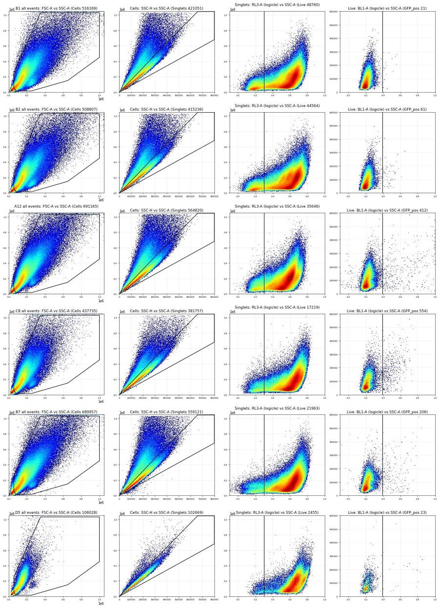
180
agent
Gate overlays look right on the dimmest (B1/B2), brightest (C8/A12) and problem wells (B7/D5). Getting the last numbers for the B7/B8 evidence text.
181
tool call · Bash
cd /task/work; python3 -I -c "
import sys; sys.path.insert(0,'/task/work')
from common import *
for w in ['B7','B8']:
d=load(w); t=col(d,'Time')/1000
q,_=np.histogram(t,np.arange(0,97.5,0.25)); qm=np.median(q)
for a,b in [(0,14),(14,30),(30,62),(62,97)]:
k=slice(int(a*4),int(b*4)); x=q[k]/qm
print(w,a,b,'0.25s bins: min %.2f max %.2f n<0.5: %d n>1.5: %d events %d (%.1f%%)'%(x.min(),x.max(),(x<0.5).sum(),(x>1.5).sum(),((t>=a)&(t<b)).sum(),100*((t>=a)&(t<b)).mean()))
print(w,'events t<13s',((t<13)).sum(), round(100*(t<13).mean(),1), 'events t<3.5', (t<3.5).sum())
"182
tool output
B7 0 14 0.25s bins: min 0.01 max 1.14 n<0.5: 26 n>1.5: 0 events 73069 (7.7%) B7 14 30 0.25s bins: min 1.05 max 1.70 n<0.5: 0 n>1.5: 2 events 196339 (20.6%) B7 30 62 0.25s bins: min 0.00 max 1.78 n<0.5: 6 n>1.5: 7 events 331018 (34.7%) B7 62 97 0.25s bins: min 0.00 max 1.71 n<0.5: 1 n>1.5: 2 events 346685 (36.3%) B7 events t<13s 67920 7.1 events t<3.5 4542 B8 0 14 0.25s bins: min 0.00 max 1.58 n<0.5: 19 n>1.5: 6 events 108799 (11.8%) B8 14 30 0.25s bins: min 0.93 max 1.19 n<0.5: 0 n>1.5: 0 events 164260 (17.9%) B8 30 62 0.25s bins: min 0.87 max 1.08 n<0.5: 0 n>1.5: 0 events 317646 (34.6%) B8 62 97 0.25s bins: min 0.60 max 1.25 n<0.5: 0 n>1.5: 0 events 324164 (35.3%) B8 events t<13s 96533 10.5 events t<3.5 808
184
tool call · Bash
cd /task/work; cat > /task/work/write_flags.py <<'EOF'
import sys; sys.path.insert(0,'/task/work')
import pandas as pd, numpy as np
lay = pd.read_csv('/task/inputs/plate_layout.csv')
q = pd.read_pickle('final_qc.pkl')
c = pd.read_csv('/task/outputs/counts.csv')
cnt = c.pivot(index='well', columns='population', values='count')
pct = c.pivot(index='well', columns='population', values='pct_of_parent')
plate_med_rate = int(np.median(q.loc[q.flowrate == 100, 'med']))
plate_med_n = int(np.median(q.n))
def base(w):
r = q.loc[w]
return (f"total {r.n} events in {r['T']:.1f} s; Cells {cnt.loc[w,'Cells']}, Singlets {cnt.loc[w,'Singlets']} ({pct.loc[w,'Singlets']:.1f}% of Cells), "
f"Live {cnt.loc[w,'Live']} ({pct.loc[w,'Live']:.2f}% of Singlets), GFP_pos {cnt.loc[w,'GFP_pos']} ({pct.loc[w,'GFP_pos']:.2f}% of Live); "
f"median rate {int(r.med)} ev/s (1-s bins)")
def tail(w):
r = q.loc[w]
return (f"end-of-run (last 5 s) {r.last5:.2f}x median; at scale max: SSC-A {r['sat_SSC-A']:.2f}%, FSC-A {r['sat_FSC-A']:.2f}%, BL1-A {r['sat_BL1-A']:.3f}%, RL3-A {r['sat_RL3-A']:.3f}%")
special = {
'A1': ('no','other', lambda w: base(w) + f" = {q.loc[w,'med']/plate_med_rate:.1f}x the plate median of {plate_med_rate}; $FLOWRATE keyword 200 uL/min vs 100 uL/min on all 41 other wells (run 46.2 s / 155 uL vs ~97.8 s / 163-164 uL); "
f"coincident-event keyword 172519 = 17.6% of events (other wells 1.5-11.4%); Singlets 71.5% of Cells, lowest on the plate (others 78.6-96.8%, duplicate A2 81.3%), broader SSC-A/SSC-H distribution and a less distinct Zombie NIR valley; "
f"Live 8.49% of Singlets vs 5.92% in duplicate A2; flow itself stable (1-s bins 0.81-1.06x median, no gaps or bursts); " + tail(w) + "; acquired at a different flow rate from the rest of the plate, so not comparable; confidence: medium"),
'B7': ('no','clog_or_interrupted_flow', lambda w: base(w) + "; 0-14 s: rate 0.03-0.18x median in the first 4 s and 0.48-0.94x up to 14 s (26 of 56 0.25-s bins <0.5x); "
"step to 1.37x at 14 s, bursts to 1.44-1.72x at 29-32 s; 30-62 s: 0.25-s bins swing 0.00-1.78x (6 bins <0.5x, 7 bins >1.5x), dip to 0.38x at 61 s; "
"1-s CV 0.28 (plate typical 0.05-0.10); Singlets/Cells 90.2% in 0-13 s vs 77.6-79.1% after 30 s; " + tail(w) + "; confidence: high"),
'B8': ('no','clog_or_interrupted_flow', lambda w: base(w) + "; flow stopped at the start: 1-s bins 0.06, 0.01, 0.00 and 0.22x median for 0-4 s (808 events in 0-3.5 s, only 21% inside Cells), "
"0.57-0.63x for 4-8 s, then release burst 1.19-1.52x median for 8-13 s (19 of 56 0.25-s bins <0.5x and 6 >1.5x in 0-14 s); 3.5-10 s Cells 66.9% of events vs 72.2% after 10 s; "
"stable after 14 s (0.25-s bins 0.60-1.25x); 10.5% of all events acquired in the first 13 s; " + tail(w) + "; confidence: medium"),
'D5': ('no','too_few_events', lambda w: base(w) + f"; total events 153195 vs plate median {plate_med_n} (next lowest well C12 578214); rate 1597 ev/s = 0.18x plate median but steady (1-s bins 0.74-1.11x, last 5 s 0.86x), so a dilute/low-cell sample rather than a clog or dry well; "
"Live 2455 (next lowest well D6 10185) and GFP_pos only 23 events (Poisson CV ~21%); large-FSC cell cluster largely absent, Singlets 96.8% of Cells (low coincidence); " + tail(w) + "; confidence: high"),
}
reset = {'C6': (4443, '3.35-3.89'), 'C11': (4103, '3.35-3.90'), 'D4': (4084, '3.29-3.84')}
rows = []
for f, w in zip(lay.file, lay.well):
r = q.loc[w]
if w in special:
u, cat, fn = special[w]; ev = fn(w)
else:
u, cat = 'yes', 'ok'
ev = base(w) + f"; 1-s bins {r.rmin:.2f}-{r.rmax:.2f}x median"
if w in reset:
k, win = reset[w]
ev += (f"; the file starts with {k} events time-stamped {win} s after which Time restarts at 0.014 s (one non-monotonic step, {100*k/r.n:.1f}% of events), "
f"seen as a 0.55-s rate spike at ~3.3 s; these events have the same Cells/Singlets/Live/GFP fractions as the well's own 1-10 s events, so it is read as a file-write artefact, not a flow fault; otherwise no 1-s bin <0.5x or >1.5x")
elif len(r.low):
ev += f"; only the last full second ({int(r.low[0])}-{int(r.low[0])+1} s) falls below 0.5x median (end-of-sample taper over the last ~5 s; full {r.vol_ul:.0f} uL acquired); no gaps or bursts"
else:
ev += "; no 1-s bin <0.5x or >1.5x median"
ev += "; " + tail(w)
rows.append(dict(file=f, well=w, usable=u, reason_category=cat, evidence=ev))
df = pd.DataFrame(rows); df.to_csv('/task/outputs/flags.csv', index=False)
print(df[['well','usable','reason_category']].value_counts(['usable','reason_category']))
for w in ['A1','B7','B8','D5','C6','C3','A3']: print(w, df.set_index('well').loc[w,'evidence'], '\n')
EOF
python3 -I write_flags.py185
tool output
usable reason_category
yes ok 38
no clog_or_interrupted_flow 2
other 1
too_few_events 1
Name: count, dtype: int64
A1 total 978726 events in 46.2 s; Cells 750434, Singlets 536823 (71.5% of Cells), Live 45560 (8.49% of Singlets), GFP_pos 216 (0.47% of Live); median rate 21595 ev/s (1-s bins) = 2.4x the plate median of 8848; $FLOWRATE keyword 200 uL/min vs 100 uL/min on all 41 other wells (run 46.2 s / 155 uL vs ~97.8 s / 163-164 uL); coincident-event keyword 172519 = 17.6% of events (other wells 1.5-11.4%); Singlets 71.5% of Cells, lowest on the plate (others 78.6-96.8%, duplicate A2 81.3%), broader SSC-A/SSC-H distribution and a less distinct Zombie NIR valley; Live 8.49% of Singlets vs 5.92% in duplicate A2; flow itself stable (1-s bins 0.81-1.06x median, no gaps or bursts); end-of-run (last 5 s) 0.89x median; at scale max: SSC-A 1.17%, FSC-A 0.19%, BL1-A 0.001%, RL3-A 0.000%; acquired at a different flow rate from the rest of the plate, so not comparable; confidence: medium
B7 total 954909 events in 97.9 s; Cells 689957, Singlets 559121 (81.0% of Cells), Live 21963 (3.93% of Singlets), GFP_pos 206 (0.94% of Live); median rate 10200 ev/s (1-s bins); 0-14 s: rate 0.03-0.18x median in the first 4 s and 0.48-0.94x up to 14 s (26 of 56 0.25-s bins <0.5x); step to 1.37x at 14 s, bursts to 1.44-1.72x at 29-32 s; 30-62 s: 0.25-s bins swing 0.00-1.78x (6 bins <0.5x, 7 bins >1.5x), dip to 0.38x at 61 s; 1-s CV 0.28 (plate typical 0.05-0.10); Singlets/Cells 90.2% in 0-13 s vs 77.6-79.1% after 30 s; end-of-run (last 5 s) 0.88x median; at scale max: SSC-A 0.56%, FSC-A 0.12%, BL1-A 0.000%, RL3-A 0.001%; confidence: high
B8 total 918778 events in 97.8 s; Cells 659707, Singlets 540444 (81.9% of Cells), Live 23399 (4.33% of Singlets), GFP_pos 313 (1.34% of Live); median rate 9976 ev/s (1-s bins); flow stopped at the start: 1-s bins 0.06, 0.01, 0.00 and 0.22x median for 0-4 s (808 events in 0-3.5 s, only 21% inside Cells), 0.57-0.63x for 4-8 s, then release burst 1.19-1.52x median for 8-13 s (19 of 56 0.25-s bins <0.5x and 6 >1.5x in 0-14 s); 3.5-10 s Cells 66.9% of events vs 72.2% after 10 s; stable after 14 s (0.25-s bins 0.60-1.25x); 10.5% of all events acquired in the first 13 s; end-of-run (last 5 s) 0.78x median; at scale max: SSC-A 0.37%, FSC-A 0.04%, BL1-A 0.000%, RL3-A 0.000%; confidence: medium
D5 total 153195 events in 97.8 s; Cells 106028, Singlets 102669 (96.8% of Cells), Live 2455 (2.39% of Singlets), GFP_pos 23 (0.94% of Live); median rate 1597 ev/s (1-s bins); total events 153195 vs plate median 855464 (next lowest well C12 578214); rate 1597 ev/s = 0.18x plate median but steady (1-s bins 0.74-1.11x, last 5 s 0.86x), so a dilute/low-cell sample rather than a clog or dry well; Live 2455 (next lowest well D6 10185) and GFP_pos only 23 events (Poisson CV ~21%); large-FSC cell cluster largely absent, Singlets 96.8% of Cells (low coincidence); end-of-run (last 5 s) 0.86x median; at scale max: SSC-A 0.08%, FSC-A 0.00%, BL1-A 0.005%, RL3-A 0.000%; confidence: high
C6 total 891011 events in 97.6 s; Cells 623497, Singlets 520107 (83.4% of Cells), Live 17237 (3.31% of Singlets), GFP_pos 177 (1.03% of Live); median rate 9307 ev/s (1-s bins); 1-s bins 0.53-1.51x median; the file starts with 4443 events time-stamped 3.35-3.89 s after which Time restarts at 0.014 s (one non-monotonic step, 0.5% of events), seen as a 0.55-s rate spike at ~3.3 s; these events have the same Cells/Singlets/Live/GFP fractions as the well's own 1-10 s events, so it is read as a file-write artefact, not a flow fault; otherwise no 1-s bin <0.5x or >1.5x; end-of-run (last 5 s) 0.70x median; at scale max: SSC-A 0.31%, FSC-A 0.02%, BL1-A 0.003%, RL3-A 0.000%
C3 total 656321 events in 97.7 s; Cells 449338, Singlets 382128 (85.0% of Cells), Live 24560 (6.43% of Singlets), GFP_pos 167 (0.68% of Live); median rate 6955 ev/s (1-s bins); 1-s bins 0.39-1.10x median; only the last full second (96-97 s) falls below 0.5x median (end-of-sample taper over the last ~5 s; full 163 uL acquired); no gaps or bursts; end-of-run (last 5 s) 0.59x median; at scale max: SSC-A 0.29%, FSC-A 0.04%, BL1-A 0.000%, RL3-A 0.000%
A3 total 925910 events in 97.7 s; Cells 701928, Singlets 578589 (82.4% of Cells), Live 34774 (6.01% of Singlets), GFP_pos 331 (0.95% of Live); median rate 9731 ev/s (1-s bins); 1-s bins 0.63-1.09x median; no 1-s bin <0.5x or >1.5x median; end-of-run (last 5 s) 0.79x median; at scale max: SSC-A 0.47%, FSC-A 0.05%, BL1-A 0.002%, RL3-A 0.000%187
agent
flags.csv is written: 38 wells usable and 4 flagged (A1, B7, B8, D5). Now writing notes.md and validating all deliverables.
188
tool call · Write
{
"file_path": "/task/outputs/notes.md",
"content": "# Plate 230306: AAV serotype panel, rep 2. FlowKit gating notes\n\n## Gates\nI built one FlowKit 1.2.3 `GatingStrategy` (`gates.xml`, reloaded with `parse_gating_xml` and used for every count) on raw, uncompensated channels with no transforms. All bounds are in raw channel units. A logicle display (T = 2^20, W = 1, M = 5.5) was used only for viewing. Tree: Cells > Singlets > Live > GFP_pos, identical for all 42 wells.\n- **Cells**: PolygonGate, FSC-A vs SSC-A. Vertices: (80k,15k) (250k,15k) (650k,150k) (1.0M,450k) (1.0M,1.03M) (350k,1.03M) (55k,250k) (55k,55k).\n - Excludes the debris blob above the 25k FSC trigger (FSC-A below ~55-80k, SSC-A below ~55k).\n - Excludes the SSC-A pile at 1048575 (top edge 1.03M) and FSC-A above 1.0M.\n - Drawn on pooled A3, B9, C10, D2, B1 and C7; checked on all 42 wells. Both Zombie NIR-dim scatter clusters (FSC ~80-200k and ~220-320k) fall well inside.\n- **Singlets**: PolygonGate, SSC-H vs SSC-A. Vertices: (5k,3k) (800k,680k) (800k,1.045M) (660k,1.045M) (300k,480k) (100k,155k) (5k,9k).\n - Lower edge is SSC-A \u2248 0.85 \u00d7 SSC-H, below the hard lower edge of the data (~0.95).\n - Upper edge is SSC-A/SSC-H \u2248 1.55-1.6. That is the knee where the singlet ridge (modal ratio 1.0-1.35, rising with size) gives way to the doublet/aggregate fan.\n- **Live**: RectangleGate on RL3-A x SSC-A. RL3-A < **290** with no lower bound; SSC-A 0 to 1048576.\n - I found the valley between the Zombie NIR-dim shoulder (raw ~0-100) and the bright dead peak (~1.2e4) on the Singlets histogram of every well.\n - Valley position: median logicle 0.299 (raw \u2248 290), IQR 0.28-0.30, range 0.26-0.32 (raw 170-340). It sits in the same place plate-wide, so one cut-off is used (`figures/zombie_nir_singlets_all_wells.png`).\n- **GFP_pos**: RectangleGate on BL1-A x SSC-A. BL1-A \u2265 **700** with no upper bound; SSC-A 0 to 1048576.\n - Set on B1 and B2, the wells with the fewest GFP-bright Live events. Their GFP-negative population ends at ~500-600 raw (B1 99.9th percentile 471; logicle \u2264 0.36 even at high SSC-A); B4 was checked as well.\n - 700 (logicle 0.39) sits just above that edge; 22 of B1's 57,383 provisional Live events (0.04%) are above it. Applied to all wells.\n- An independent numpy implementation of the same gates gave identical counts (checked on A1, B7, C8, D5).\n\n## Quality control\n- **Metadata** (all 42 files): $PnV matches the notebook (FSC 30, SSC 300, BL1 250, RL3 300, VL1 300). $PnN/$PnS labels, $WELLID/$FIL vs file name, date and $BTIM order are consistent. #FLOWRATE is 100 \u00b5L/min everywhere except A1 (200).\n- **Flow over Time**: event rate in 1-s and 0.25-s bins. I looked for bins below 0.5x or above 1.5x the median outside the last second, start-up gaps, the 1-s CV, Time monotonicity and the end-of-run rate. Suspect wells were then gated in 2-s segments to see whether gate fractions shifted.\n- **Saturation**: % of events at 1048575. SSC-A 0.08-1.17%, FSC-A \u2264 0.32%, BL1-A/RL3-A \u2264 0.012%; the Cells gate removes these. No saturation flags.\n- **Outliers**: robust z-scores of each gate's % of parent.\n- **Flagged (usable = no)**:\n - **B7** clog/interrupted flow, high: unstable rate for 0-62 s (0.03x at start, bursts to 1.7x, drop-outs) and a shift in Singlets/Cells (90% to 78%).\n - **B8** clog/interrupted flow, medium: flow stopped for 0-3.5 s, then a release burst to 1.5x until ~13 s (10.5% of events); stable afterwards.\n - **D5** too few events, high: 153k events at a steady 1.6k ev/s, so a dilute sample rather than a clog; Live 2,455 and GFP_pos 23.\n - **A1** other, medium: the only well run at 200 \u00b5L/min. Coincident events 17.6% and Singlets 71.5% of Cells, both plate extremes, so it is not comparable with the other wells.\n- **Kept**:\n - C6, C11 and D4 each start with ~4,100-4,400 events (0.5%) stamped 3.3-3.9 s before Time restarts at 0.014 s. These events show the same gate fractions as each well's own early events, so I treat this as a file-write artefact rather than a flow fault.\n - All wells taper to 0.59-1.0x median rate in the last 3-6 s after acquiring the full ~163 \u00b5L. This is a normal end-of-sample taper, with no dry-well collapse.\n- There are no control wells, so `bad_control` does not apply. The serotype map is absent, so no serotype-level sanity check was possible.\n- GFP_pos counts are small plate-wide (21-554 events; 0.04-3.2% of Live), so %GFP_pos carries roughly 4-22% Poisson error.\n\n## Deviations\nNone in population order, axes, gate shapes or the one-tree rule. Implementation details:\n1. Fluorescence bounds are given in raw units instead of drawing on a logicle axis; the strategy allows this.\n2. The Live and GFP_pos rectangles span the full SSC-A axis (0 to 2^20) rather than \"almost\" the whole axis. This is equivalent, because Cells already limits SSC-A to 15k-1.03M.\n3. RL3-A has no minimum and BL1-A has no maximum; these stand for \"lowest values\" and \"top of axis\".\n4. Flagged wells are gated and reported with the same gates, with no per-well changes.\n"
}189
tool output
File created successfully at: /task/outputs/notes.md (file state is current in your context — no need to Read it back)
190
tool call · Bash
cd /task/outputs; wc -w notes.md; python3 -I -c "
import pandas as pd, flowkit as fk
lay=pd.read_csv('/task/inputs/plate_layout.csv')
c=pd.read_csv('counts.csv'); f=pd.read_csv('flags.csv')
print(c.shape, f.shape, list(c.columns), list(f.columns))
assert set(c.file)==set(lay.file) and set(f.file)==set(lay.file)
assert (c.groupby('file').size()==4).all()
assert set(c.population)=={'Cells','Singlets','Live','GFP_pos'}
print(c.pct_of_parent.min(), c.pct_of_parent.max(), c['count'].dtype)
# parent consistency
p=c.pivot(index='well',columns='population',values='count')
assert (p.Singlets<=p.Cells).all() and (p.Live<=p.Singlets).all() and (p.GFP_pos<=p.Live).all()
assert ((f.usable=='yes')==(f.reason_category=='ok')).all()
assert f[f.usable=='no'].evidence.str.contains(r'confidence: (high|medium|low)$').all()
gs=fk.parse_gating_xml('gates.xml'); print(gs.get_gate_ids())
print(f[f.usable=='no'][['well','reason_category']])
"; ls -la /task/outputs /task/outputs/figures191
tool output
825 notes.md
<string>:14: UserWarning: This pattern is interpreted as a regular expression, and has match groups. To actually get the groups, use str.extract.
(168, 6) (42, 5) ['file', 'well', 'population', 'count', 'parent_population', 'pct_of_parent'] ['file', 'well', 'usable', 'reason_category', 'evidence']
0.0431 96.832 int64
[('Cells', ('root',)), ('Singlets', ('root', 'Cells')), ('Live', ('root', 'Cells', 'Singlets')), ('GFP_pos', ('root', 'Cells', 'Singlets', 'Live'))]
well reason_category
0 A1 other
18 B7 clog_or_interrupted_flow
19 B8 clog_or_interrupted_flow
40 D5 too_few_events
/task/outputs:
total 56
drwxr-xr-x 3 root root 4096 Nov 10 17:34 .
drwxr-xr-x 5 root root 4096 Nov 10 17:19 ..
-rw-r--r-- 1 root root 11256 Nov 10 17:30 counts.csv
drwxr-xr-x 2 root root 4096 Nov 10 17:32 figures
-rw-r--r-- 1 root root 19068 Nov 10 17:33 flags.csv
-rw-r--r-- 1 root root 4070 Nov 10 17:30 gates.xml
-rw-r--r-- 1 root root 4984 Nov 10 17:34 notes.md
/task/outputs/figures:
total 984
drwxr-xr-x 2 root root 4096 Nov 10 17:32 .
drwxr-xr-x 3 root root 4096 Nov 10 17:34 ..
-rw-r--r-- 1 root root 193745 Nov 10 17:32 event_rate_all_wells.png
-rw-r--r-- 1 root root 658393 Nov 10 17:32 gates_representative_wells.png
-rw-r--r-- 1 root root 142796 Nov 10 17:32 zombie_nir_singlets_all_wells.png193
agent
notes.md is 825 words, too long for one page. Recomputing the B1 numbers with the final gates, then trimming.
194
tool call · Bash
cd /task/work; python3 -I -c "
import sys; sys.path.insert(0,'/task/work')
from common import *
from gates_def import *
from matplotlib.path import Path
for w in ['B1','B2']:
d=load(w); f,s,h=col(d,'FSC-A'),col(d,'SSC-A'),col(d,'SSC-H')
m=Path(CELLS).contains_points(np.c_[f,s])&Path(SING).contains_points(np.c_[h,s])&(col(d,'RL3-A')<LIVE_MAX)
b=col(d,'BL1-A')[m]; print(w, m.sum(), np.percentile(b,[99,99.9]).round(0), (b>=700).sum(), round(100*(b>=700).mean(),3), (b>2000).sum())
"195
tool output
B1 48760 [268. 480.] 21 0.043 5 B2 44564 [294. 942.] 61 0.137 18
196
tool call · Write
{
"file_path": "/task/outputs/notes.md",
"content": "# Plate 230306: AAV serotype panel, rep 2\n\n## Gates\nOne FlowKit `GatingStrategy` (`gates.xml`, reloaded with `parse_gating_xml` and used for all counts). Raw, uncompensated channels, no gate transforms, bounds in raw units. A logicle display (T 2^20, W 1, M 5.5) was used for viewing only.\n- **Cells** (polygon, FSC-A vs SSC-A): (80k,15k) (250k,15k) (650k,150k) (1.0M,450k) (1.0M,1.03M) (350k,1.03M) (55k,250k) (55k,55k).\n - Removes the debris blob above the 25k FSC trigger (FSC-A < ~55-80k, SSC-A < ~55k), the SSC-A pile at 1048575 and FSC-A > 1.0M.\n - Drawn on pooled A3, B9, C10, D2, B1 and C7, then checked on all 42 wells. Both Zombie-dim scatter clusters lie well inside.\n- **Singlets** (polygon, SSC-H vs SSC-A): (5k,3k) (800k,680k) (800k,1.045M) (660k,1.045M) (300k,480k) (100k,155k) (5k,9k).\n - Lower edge is SSC-A \u2248 0.85 \u00d7 SSC-H, below the data edge.\n - Upper edge is SSC-A/SSC-H \u2248 1.55-1.6, at the knee where the singlet ridge (modal ratio 1.0-1.35) gives way to the doublet fan.\n- **Live** (rectangle, RL3-A < **290**, no minimum; SSC-A 0 to 2^20).\n - I located the valley between the Zombie-dim shoulder (raw ~0-100) and the dead peak (~1.2e4) on the Singlets histogram of every well.\n - Valley: median logicle 0.299 (raw \u2248 290), IQR 0.28-0.30, range raw 170-340. It is stable plate-wide (`figures/zombie_nir_singlets_all_wells.png`), so one cut-off is used.\n- **GFP_pos** (rectangle, BL1-A \u2265 **700**, no maximum; SSC-A 0 to 2^20).\n - Set on B1 and B2, the wells with the fewest GFP-bright Live events. Their GFP-negative Live population ends at ~500-600 (B1 99.9th percentile 480; logicle \u2264 0.36 even at high SSC-A).\n - 700 (logicle 0.39) is just above that edge: B1 has 21 of 48,760 Live events (0.04%) above it. B4 was checked as well.\n- A numpy re-implementation of the same gates gave identical counts.\n\n## Quality control\n- **Metadata**: $PnV matches the notebook voltages in all 42 files. Labels, $WELLID/$FIL and $BTIM order are consistent. #FLOWRATE is 100 \u00b5L/min everywhere except A1 (200).\n- **Flow**: event rate in 1-s and 0.25-s bins. Checked for bins < 0.5x or > 1.5x the median, start-up gaps, CV, Time monotonicity and the last-5-s rate. Suspect wells were also re-gated in 2-s segments to look for shifts in gate fractions.\n- **Saturation**: % of events at 1048575 is SSC-A \u2264 1.17%, FSC-A \u2264 0.32% and fluorescence \u2264 0.012%. These events fall outside Cells, so there are no saturation flags.\n- **Outliers**: robust z-scores of each gate's % of parent.\n- **Flagged**:\n - **B7** clog (high): unstable rate for 0-62 s (0.03x at start, bursts to 1.7x, drop-outs); Singlets/Cells falls from 90% to 78%.\n - **B8** clog (medium): no flow for 0-3.5 s, then a release burst (1.5x) until ~13 s, covering 10.5% of events.\n - **D5** too few events (high): 153k events at a steady 1.6k ev/s, so a dilute sample; Live 2,455 and GFP_pos 23.\n - **A1** other (medium): the only well run at 200 \u00b5L/min. Coincidence 17.6% and Singlets 71.5% of Cells are plate extremes, so it is not comparable.\n- **Kept**:\n - C6, C11 and D4 start with ~4,100-4,400 events (0.5%) stamped 3.3-3.9 s before Time restarts at 0.014 s. Their gate fractions match each well's own early events, so I read this as a file artefact, not a flow fault.\n - All wells taper to 0.59-1.0x median rate in the last 3-6 s after the full ~163 \u00b5L. This is a normal end-of-sample taper, not a dry well.\n- There are no controls, so `bad_control` does not apply.\n- GFP_pos counts are small (21-554 per well), giving roughly 4-22% Poisson error on %GFP_pos.\n\n## Deviations\nNone in population order, axes, gate shapes or the one-tree rule. Implementation details:\n1. Fluorescence bounds are in raw units, which the strategy allows.\n2. The Live and GFP_pos rectangles span the full SSC-A axis rather than \"almost\" all of it. This is equivalent, because Cells already limits SSC-A to 15k-1.03M.\n3. Open-ended RL3-A minimum and BL1-A maximum stand for \"lowest values\" and \"top of axis\".\n4. Flagged wells are gated with the same gates, with no per-well changes.\n"
}197
tool output
The file /task/outputs/notes.md has been updated successfully. (file state is current in your context — no need to Read it back)
198
tool call · Bash
wc -w /task/outputs/notes.md; grep -n '^## ' /task/outputs/notes.md; head -3 /task/outputs/flags.csv | cut -c1-300
199
tool output
675 /task/outputs/notes.md 3:## Gates 19:## Quality control 35:## Deviations file,well,usable,reason_category,evidence Serotype panel_2_Rep2_Group_A1.fcs,A1,no,other,"total 978726 events in 46.2 s; Cells 750434, Singlets 536823 (71.5% of Cells), Live 45560 (8.49% of Singlets), GFP_pos 216 (0.47% of Live); median rate 21595 ev/s (1-s bins) = 2.4x the plate median of 8848; $FLOWRATE keyword 200 uL/min vs 100 uL/min on Serotype panel_2_Rep2_Group_A2.fcs,A2,yes,ok,"total 935707 events in 97.9 s; Cells 701685, Singlets 570464 (81.3% of Cells), Live 33786 (5.92% of Singlets), GFP_pos 249 (0.74% of Live); median rate 9736 ev/s (1-s bins); 1-s bins 0.77-1.11x median; no 1-s bin <0.5x or >1.5x median; end-of-run (last 5
201
tool call · Bash
cd /task/work; sed -i 's/\$FLOWRATE keyword/#FLOWRATE keyword/' write_flags.py && python3 -I write_flags.py > /dev/null && grep -c 'FLOWRATE' /task/outputs/flags.csv && grep -o '#FLOWRATE keyword 200' /task/outputs/flags.csv; python3 -I -c "
import pandas as pd; f=pd.read_csv('/task/outputs/flags.csv'); print(f.shape, f.usable.value_counts().to_dict())"202
tool output
1
#FLOWRATE keyword 200
(42, 5) {'yes': 38, 'no': 4}204
agent
All 42 wells are gated with one FlowKit strategy. I flagged 4 wells as unusable and kept the other 38. The saved `gates.xml` reloads with `parse_gating_xml`, and `counts.csv` (168 rows) comes straight from those saved gates. A separate numpy version of the same gates gave identical counts on the four wells I checked (A1, B7, C8, D5).
**Gates** (raw, uncompensated units; one tree for the whole plate)
- **Cells**: polygon on FSC-A vs SSC-A. It cuts the debris just above the FSC trigger and the events piled at the SSC-A scale maximum.
- **Singlets**: narrow polygon on SSC-H vs SSC-A. Its upper edge is where SSC-A reaches about 1.55–1.6 times SSC-H.
- **Live**: RL3-A (Zombie NIR) below 290. That is where the valley between dim (live) and bright (dead) cells falls in all 42 wells, at roughly 170–340 raw.
- **GFP_pos**: BL1-A at or above 700. B1 and B2 have the fewest GFP-bright cells, and their GFP-negative population ends at about 500–600; B1 has only 21 of 48,760 Live events above 700.
**Flagged wells (`usable = no`)**
| Well | Category | Main evidence | Confidence |
|---|---|---|---|
| B7 | clog_or_interrupted_flow | Event rate unstable for 0–62 s (0.03× the median at the start, bursts to 1.7×, drop-outs); singlet fraction shifts from 90% to 78% | high |
| B8 | clog_or_interrupted_flow | No flow for 0–3.5 s, then a surge to 1.5× until ~13 s (10.5% of events); stable afterwards | medium |
| D5 | too_few_events | 153k events against a plate median of ~855k, at a steady low rate (a dilute sample, not a clog); only 2,455 Live and 23 GFP_pos | high |
| A1 | other | The only well run at 200 µL/min instead of 100. Its coincident-event count (17.6%) and singlet fraction (71.5% of Cells) are both the most extreme on the plate | medium |
**Two judgement calls you may want to review**
- **A1** is the closest call. The flow itself is stable, so you could keep it if you don't mind it being acquired at a different flow rate; its duplicate A2 is fine either way.
- **C6, C11 and D4 are marked usable.** Each file begins with about 4,100–4,400 events (0.5%) stamped 3.3–3.9 s, after which the clock restarts at zero. Those events look the same as the rest of each well, so I read this as a file-writing quirk rather than a flow problem.
Separately, many wells show a drop in event rate over the last 3–6 s. They still took up the full ~163 µL, so this is the normal end of a sample, not a well running dry.
GFP-positive cells are rare across the whole plate (0.04–3.2% of Live, 21–554 events per well), so each well's %GFP_pos carries roughly 4–22% counting error.
Files are in `/task/outputs/`:
- `gates.xml`
- `counts.csv`
- `flags.csv`
- `notes.md`
- `figures/` (I added this): gate overlays, the Zombie NIR histograms for all wells, and the event rate over time.
final result
All 42 wells are gated with one FlowKit strategy. I flagged 4 wells as unusable and kept the other 38. The saved `gates.xml` reloads with `parse_gating_xml`, and `counts.csv` (168 rows) comes straight from those saved gates. A separate numpy version of the same gates gave identical counts on the four wells I checked (A1, B7, C8, D5). **Gates** (raw, uncompensated units; one tree for the whole plate) - **Cells**: polygon on FSC-A vs SSC-A. It cuts the debris just above the FSC trigger and the events piled at the SSC-A scale maximum. - **Singlets**: narrow polygon on SSC-H vs SSC-A. Its upper edge is where SSC-A reaches about 1.55–1.6 times SSC-H. - **Live**: RL3-A (Zombie NIR) below 290. That is where the valley between dim (live) and bright (dead) cells falls in all 42 wells, at roughly 170–340 raw. - **GFP_pos**: BL1-A at or above 700. B1 and B2 have the fewest GFP-bright cells, and their GFP-negative population ends at about 500–600; B1 has only 21 of 48,760 Live events above 700. **Flagged wells (`usable = no`)** | Well | Category | Main evidence | Confidence | |---|---|---|---| | B7 | clog_or_interrupted_flow | Event rate unstable for 0–62 s (0.03× the median at the start, bursts to 1.7×, drop-outs); singlet fraction shifts from 90% to 78% | high | | B8 | clog_or_interrupted_flow | No flow for 0–3.5 s, then a surge to 1.5× until ~13 s (10.5% of events); stable afterwards | medium | | D5 | too_few_events | 153k events against a plate median of ~855k, at a steady low rate (a dilute sample, not a clog); only 2,455 Live and 23 GFP_pos | high | | A1 | other | The only well run at 200 µL/min instead of 100. Its coincident-event count (17.6%) and singlet fraction (71.5% of Cells) are both the most extreme on the plate | medium | **Two judgement calls you may want to review** - **A1** is the closest call. The flow itself is stable, so you could keep it if you don't mind it being acquired at a different flow rate; its duplicate A2 is fine either way. - **C6, C11 and D4 are marked usable.** Each file begins with about 4,100–4,400 events (0.5%) stamped 3.3–3.9 s, after which the clock restarts at zero. Those events look the same as the rest of each well, so I read this as a file-writing quirk rather than a flow problem. Separately, many wells show a drop in event rate over the last 3–6 s. They still took up the full ~163 µL, so this is the normal end of a sample, not a well running dry. GFP-positive cells are rare across the whole plate (0.04–3.2% of Live, 21–554 events per well), so each well's %GFP_pos carries roughly 4–22% counting error. Files are in `/task/outputs/`: - `gates.xml` - `counts.csv` - `flags.csv` - `notes.md` - `figures/` (I added this): gate overlays, the Zombie NIR histograms for all wells, and the event rate over time.